Universidad Peruana de Ciencias Aplicadas
Carrera de Ingeniería de Software
1ASI0730
Desarrollo de Aplicaciones Web
NRC
8084
Docente
Velásquez Núñez, Ángel Augusto
Equipo
StackRoot
Proyecto
Trazza
Integrantes
| Código |
Apellidos y Nombres |
| U202322695 |
Checalla Apaza, Emanuel Renato |
| U202412903 |
Lozano Quispe, Fabricio Jofred |
| U202210836 |
Peñaranda Caldas, Gabriel Augusto |
| U202213185 |
Medina Merma, Ingrid Melani |
| U202414356 |
Vite Celis, Rodrigo Matias |
Período 202620
Septiembre 2026
| Versión |
Fecha |
Autor |
Descripción de modificación |
| 1.0 |
06/09/2026 |
Gabriel Peñaranda |
Elaboración del informe incluyendo el Capítulo 1 completado. |
| 1.1 |
13/09/2026 |
Gabriel Peñaranda |
Aplicación de correcciones del profesor: reorganización de carpetas y archivos utilizando el formato "document as a code" proporcionado. |
| 1.2 |
15/09/2026 |
Ingrid Medina |
Elaboración y redacción completa de la sección de Needfinding. |
| 2.0 |
01/10/2026 |
Emanuel Checalla |
Corrección de mock-ups en Figma, avance del keynote del curso, incorporación de información relacionada al documento y reparación de enlaces. |
| 2.1 |
02/10/2026 |
Rodrigo Vite |
Integración de los nuevos cambios de Figma y adición del user flow al documento. |
| 2.2 |
02/10/2026 |
Ingrid Medina |
Corrección de los diagramas C4 y actualización del diagrama de base de datos. |
| 2.3 |
03/10/2026 |
Rodrigo Vite |
Corrección y unificación del idioma en los wireframes. |
| 2.4 |
04/10/2026 |
Gabriel Peñaranda |
Corrección de errores en el Capítulo 1 y Capítulo 5. |
| 2.5 |
04/10/2026 |
Fabricio Lozano |
Incorporación de avances en el Capítulo 5 y avance en el desarrollo del código. |
| 2.6 |
04/10/2026 |
Gabriel Peñaranda |
Subida y actualización de cambios y artefactos desde UXPressia. |
| 2.7 |
04/10/2026 |
Ingrid Medina |
Mejora de los diagramas C4 mediante su migración a código en Structurizr. |
| 2.8 |
05/10/2026 |
Gabriel Peñaranda |
Reestructuración de artefactos C4, correcciones mayores de redacción en los capítulos 1, 2, 4 y 5, y consolidación del Student Outcome para el hito TB1. |
Project Report Collaboration Insights
URL del repositorio para el reporte del proyecto: https://github.com/StackRoot-1ASI0730-2620-8084/Trazza-report
GitHub Collaboration Insights proporciona un cronograma que muestra las principales ramas y los procesos de fusión que han ocurrido. Todas las ramas se han generado siguiendo los principios de GitFlow, lo que garantiza una organización efectiva al utilizar un sistema de control de versiones.
- Emanuel Renato Checalla Apaza (Emanuelca135)
- Fabricio Jofred Lozano Quispe (FabricioZz15)
- Gabriel Augusto Peñaranda Caldas (gapc2024)
- Ingrid Melani Medina Merma (Grini913)
- Rodrigo Matias Vite Celis (rodriznnn)
Se dividieron las siguientes ramas para la colaboración en el proyecto:
maindevelopfeature/11-startup-profilefeature/12-solution-profilefeature/13-segmentos-objetivofeature/21-competidoresfeature/22-entrevistasfeature/23-needfindingfeature/24-event-stormingfeature/25-ubiquitous-languagefeature/31-user-storiesfeature/32-impact-mappingfeature/33-product-backlogfeature/41-style-guidelinesfeature/42-information-architecturefeature/43-landing-page-ui-designfeature/44-web-applications-ux-ui-designfeature/45-web-applications-prototypingfeature/46-domain-driven-software-architecturefeature/47-software-object-oriented-designfeature/48-database-designfeature/51-software-configuration-managementfeature/52-landing-page-services-applications-implementation
Entrega 1 - AV1
Versión 1.0 (06/09/2026) y Versión 1.1 (13/09/2026)
Durante la primera entrega, el equipo se centró en la elaboración y culminación del Capítulo 1 del informe. Las actividades se desarrollaron de manera colaborativa; nos dividimos las tareas de investigación y redacción de las secciones iniciales para garantizar la participación equitativa de todos los miembros. El trabajo se integró en el repositorio utilizando la estrategia Gitflow, realizando commits frecuentes y descriptivos en las ramas correspondientes antes de integrarlos a develop.
Entregable TRABAJO PARCIAL (TB1)
A continuación, explicamos y detallamos las analíticas de colaboración en base a lo obtenido de GitHub Insights para la entrega del Trabajo Parcial (TB1). Hemos colocado en el siguiente orden las imágenes correspondientes a: Pulse, Contributors, Traffic y Network Graph.
1. Pulse
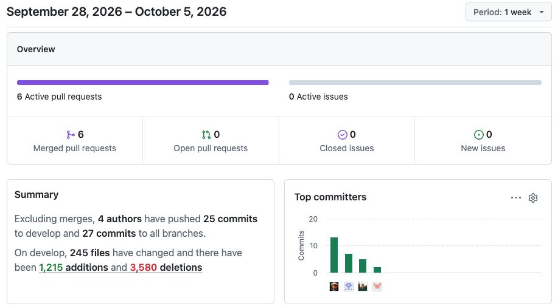
2. Contributors
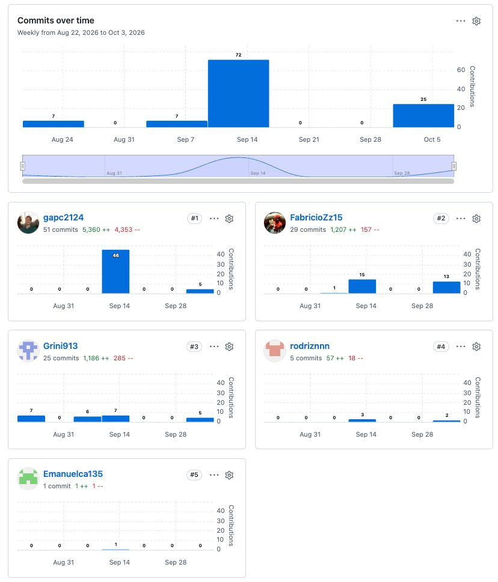
3. Traffic
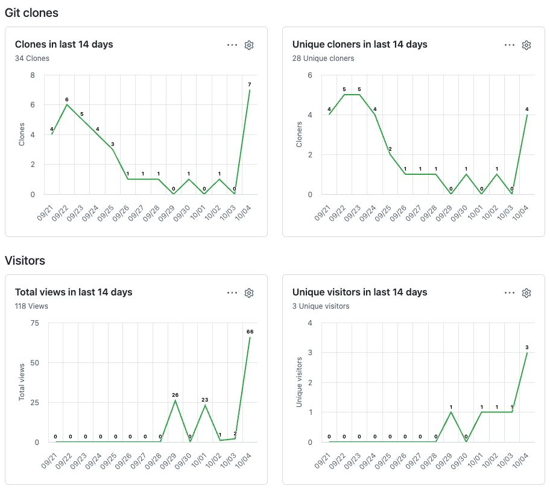
4. Network Graph
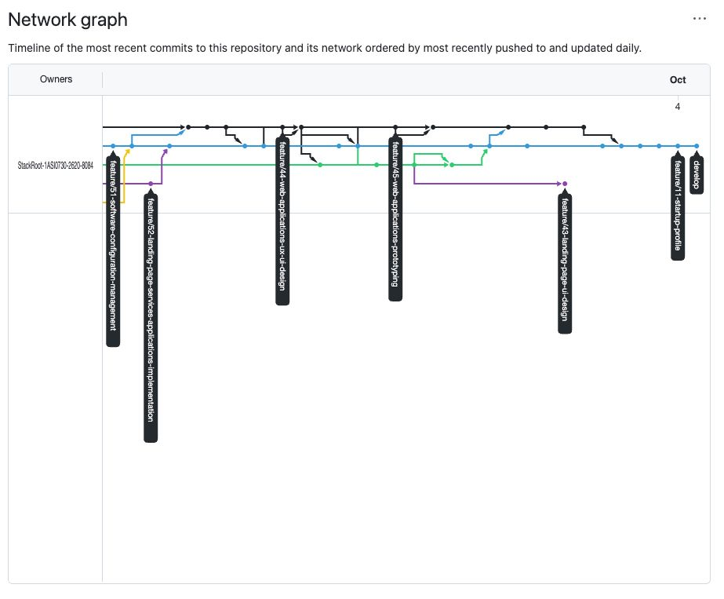
Contenido
Student Outcome
El curso contribuye al cumplimiento del Student Outcome ABET:
ABET – EAC - Student Outcome 5
Criterio: La capacidad de funcionar efectivamente en un equipo cuyos miembros juntos proporcionan liderazgo, crean un entorno de colaboración e inclusivo, establecen objetivos, planifican tareas y cumplen objetivos.
En el siguiente cuadro se describe las acciones realizadas y enunciados de conclusiones por parte del grupo, que permiten sustentar el haber alcanzado el logro del ABET – EAC - Student Outcome 5.
| Criterio específico |
Acciones realizadas |
Conclusiones |
| Trabaja en equipo para proporcionar liderazgo en forma conjunta |
Checalla Apaza, Emanuel Renato
AV1:
- Colideró las sesiones de Event Storming y coordinó la estandarización de los diseños de UI y UX en Figma.
TB1:
- Lideró la organización estratégica del equipo, la estructuración de las presentaciones y la fase de prototipado operativo.
Lozano Quispe, Fabricio Jofred
AV1:
- Participó en las sesiones conjuntas de Event Storming y lideró la arquitectura de los flujos de diseño en Figma.
TB1:
- Dirigió la actualización del Capítulo 5, la estandarización bilingüe de interfaces y la gestión integral de recursos visuales.
Medina Merma, Ingrid Melani
AV1:
- Lideró las presentaciones principales del equipo y dirigió el desarrollo del Capítulo 1 enfocado en el Startup Profile y Solution Profile, además de participar en Event Storming.
TB1:
- Encabezó el rediseño arquitectónico como modelos C4, diagramas de entidad relación y diagramas de clases, además de la especificación avanzada de historias de usuario.
Peñaranda Caldas, Gabriel Augusto
AV1:
- Lideró la arquitectura de software basada en el C4 Model y el Capítulo 2 sobre análisis de requisitos, impulsando dinámicas de Event Storming.
TB1:
- Asumió el liderazgo técnico en infraestructura como los despliegues en AWS, la gestión del Product Backlog y la auditoría de los Capítulos 1 y 2.
Vite Celis, Rodrigo Matias
AV1:
- Actuó como coordinador de la revisión general del Project Report, lideró el Capítulo 3 sobre especificación de requisitos y dirigió el desarrollo inicial de la Landing Page.
TB1:
- Lideró la optimización gráfica e interactiva, perfeccionando flujos de usuario, wireframes y mockups móviles. |
AV1:
El equipo logró consolidar el liderazgo compartido asignando responsables por capítulos y tecnologías como Figma, GitHub y Landing Page. A través de las sesiones de Event Storming, cada integrante lideró la identificación de procesos del negocio desde su área de especialidad.
TB1:
El equipo ejerció un liderazgo técnico distribuido, asignando responsabilidades críticas según especialidad como infraestructura, arquitectura de software, experiencia de usuario y gestión ágil para asegurar una evolución integral del producto. |
| Crea un entorno colaborativo e inclusivo, establece metas, planifica tareas y cumple objetivos. |
Checalla Apaza, Emanuel Renato
AV1:
- Cumplió con sus metas de entrega de mockups a tiempo y aportó retroalimentación inclusiva a los compañeros.
TB1:
- Garantizó la entrega puntual de mockups y promovió la sinergia grupal durante la fase de diseño.
Lozano Quispe, Fabricio Jofred
AV1:
- Planificó las tareas de diseño visual como Wireframes y Mockups respetando las fechas pactadas y ayudando a unificar el sistema de diseño.
TB1:
- Cumplió estrictamente con los hitos de codificación frontend y apoyó en la revisión cruzada de la aplicación web.
Medina Merma, Ingrid Melani
AV1:
- Organizó los tiempos de entrega para el primer capítulo del informe y fomentó un ambiente de apoyo durante las grabaciones de las sustentaciones.
TB1:
- Colaboró activamente en el desarrollo de la aplicación web, garantizando la entrega oportuna de sus componentes asignados.
Peñaranda Caldas, Gabriel Augusto
AV1:
- Estableció los objetivos técnicos de las arquitecturas como el Domain-Driven Design y facilitó herramientas colaborativas para los Event Storming.
TB1:
- Aseguró el cumplimiento de metas iterativas mediante el control y actualización continua del Product Backlog.
Vite Celis, Rodrigo Matias
AV1:
- Hizo seguimiento del cumplimiento general en la revisión del reporte y planificó los primeros Sprints de desarrollo para la Landing Page en un entorno ágil.
TB1:
- Entregó oportunamente los artefactos de diseño solicitados y apoyó a sus pares en la programación colaborativa del frontend. |
AV1:
Se alcanzó un ambiente inclusivo utilizando repositorios unificados en GitHub y herramientas como FigJam. La planificación de Sprints y las reuniones diarias permitieron cumplir con todos los hitos y mantener la cohesión del equipo en las entregas.
TB1:
Se afianzó un entorno de trabajo colaborativo mediante revisiones cruzadas y programación conjunta. El riguroso cumplimiento de roles individuales y cronogramas garantizó la entrega exitosa del Trabajo Parcial. |
Capítulo 1
1.1. Startup Profile
1.1.1. Descripción de la Startup
StackRoot es una startup tecnológica impulsada por estudiantes de Ingeniería de Software de la Universidad Peruana de Ciencias Aplicadas (UPC). Nos especializamos en concebir, construir y lanzar aplicaciones web de código abierto que destacan por su escalabilidad, alto rendimiento y diseño accesible. Nuestro propósito es transformar la logística y la cadena de suministro a través de soluciones digitales sostenibles e innovadoras, aplicando metodologías ágiles y rigurosos estándares de la industria para asegurar entregas impactantes y de alta calidad.
1.1.2. Perfiles de integrantes del equipo
| Foto |
Nombres y Apellidos |
Código |
Carrera |
Conocimientos y Habilidades |
|
Emanuel Renato Checalla Apaza |
U202322695 |
Ingeniería de Software |
Estudiante de ingeniería con amplio conocimiento en diseño web, y diseño grafico, de la misma forma conocmiento en lenguajes de programacion como c++, java, python. Tengo interes en la produccion de aplicaciones, seguridad y desarrollo. |
 |
Fabricio Jofred Lozano Quispe |
U202412903 |
Ingeniería de Software |
Me apasiona la programación y me destaco en lógica de programación y resolución de problemas. Cuento con conocimientos en C++, Java y Python, además de conocimientos en infraestructura cloud y sistemas operativos. Tengo interés en seguir fortaleciendo mis habilidades en el desarrollo de software, aprender nuevas tecnologías y afrontar retos que me permitan aportar al equipo. |
 |
Gabriel Augusto Peñaranda Caldas |
U202210836 |
Ingeniería de Software |
Me apasiona la infraestructura tecnológica, me destaaco en conocimiento de sistemas operativos, Cloud infrastructure y cloud architecture, manejo bien el lenguaje de JS para frontend y backend |
|
Ingrid Melani Medina Merma |
U202213185 |
Ingeniería de Software |
Soy estudiante de la carrera de Ingeniería de Software. Poseo conocimiento en programas de edición y lenguajes como el c++, un poco de python y typescript, tengo una buena adaptabilidad y un gusto por aprender y ayudar en lo que pueda |
 |
Rodrigo Matias Vite Celis |
U202414356 |
Ingeniería de Software |
Me apasiona la infraestructura cloud y los sistemas operativos. Destaco en arquitectura en la nube y cuento con buen dominio de Javascript tanto para frontend como para backend, python y c++. |
1.2. Solution Profile
1.2.1. Antecedentes y problemática
Técnica 5W2H
Para comprender la raíz y el impacto de la problemática de los fletes vacíos en el sector logístico, aplicamos la técnica de las 5 'W's y 2 'H's:
-
Who (Quién): El problema lo padecen de forma directa los transportistas independientes que llevan carga y los empresarios dueños de flotas de camiones, conformando ambos nuestros principales segmentos objetivo.
-
What (Qué): Los vehículos de transporte de carga se ven obligados a realizar sus viajes de retorno completamente vacíos tras finalizar una entrega.
-
Where (Dónde): El alcance geográfico de esta problemática se experimenta a nivel del departamento de Lima.
-
When (Cuándo): Ocurre sistemáticamente en la actualidad, justo en el momento en que inicia el trayecto de regreso, generando en el conductor la frustración de estar realizando un viaje improductivo.
-
Why (Por qué): Surge por la alta complejidad logística que implica coordinar a un vendedor cerca del punto de entrega inicial con un comprador cercano al destino final, agravado por la ausencia de una red de contactos sólida.
-
How (Cómo): En la actualidad, los afectados intentan mitigar la situación buscando contactos de manera rudimentaria fuera de marcos tecnológicos; sin embargo, en la gran mayoría de los casos, el problema simplemente se ignora y se asume la pérdida.
-
How Much (Cuánto): A pesar de existir un ligero ahorro de combustible al viajar sin carga, la ineficiencia representa una pérdida aproximada del 30% de rentabilidad. Además, este modelo genera un incremento innecesario en la huella de carbono y encarece significativamente los precios finales de los productos en el mercado.
Descripción de los antecedentes
Enunciado del Problema
Los transportistas y empresarios de flotas en el departamento de Lima enfrentan una pérdida de hasta el 30% en su rentabilidad y generan una excesiva huella de carbono debido a la alta complejidad logística y la falta de herramientas tecnológicas para conectar con redes de contactos confiables que les permitan aprovechar sus viajes de retorno (fletes vacíos).
Descripción de la problemática
Puntos Clave a Resolver
-
Reducción de la fricción logística: Automatizar el emparejamiento entre transportistas con capacidad disponible y usuarios que necesitan enviar carga.
-
Digitalización de la red de contactos: Trasladar la búsqueda rudimentaria de oportunidades a un ecosistema tecnológico centralizado y accesible.
-
Optimización operativa y ambiental: Maximizar la productividad de cada viaje, mitigando el impacto económico en los precios de los productos y reduciendo la emisión innecesaria de carbono.
Objetivos
-
Diseñar e implementar una plataforma digital que conecte eficientemente la oferta y demanda de fletes en Lima.
-
Trazar rutas precisas en tiempo real para optimizar el recorrido logístico entre los puntos de recojo y entrega.
Restricciones y Alcance
-
Gestión de Pagos: La plataforma no actuará como pasarela de pagos. No se procesarán transacciones económicas entre clientes, transportistas, vendedores o compradores; la negociación financiera se realizará estrictamente por fuera del sistema.
-
Conectividad: Es un requisito indispensable contar con conexión a internet ininterrumpida para acceder a la red de proveedores y compradores.
-
Geolocalización: El sistema requiere obligatoriamente tener la ubicación del dispositivo activada para el trazado de rutas y seguimiento en tiempo real.
Propuesta Tecnológica (Trazza)
Para hacer frente a esta problemática, StackRoot presenta Trazza, una plataforma logística inteligente estructurada sobre una arquitectura en la nube de AWS. El sistema está desarrollado con un backend robusto en Java, Spring Boot, y un frontend web dinámico en TypeScript con el framework Angular.
El núcleo logístico de Trazza se potencia mediante algoritmos computacionales de optimización como Backtracking, Dijkstra, TSP y BFS, para evaluar capacidades de peso, trazar rutas eficientes y generar matrices de costos.
A nivel de escalabilidad, el producto integrará motores de Inteligencia Artificial avanzada para automatizar el emparejamiento (matchmaking) entre compradores y vendedores, analizando variables históricas y de proximidad para asignar la carga ideal al camión adecuado sin esfuerzo manual.
Y también, Trazza contempla la integración de ecosistemas IoT en las flotas para monitorear el estado físico de la carga en tránsito junto a un sistema de seguimiento GPS por hardware que garantiza la trazabilidad continua del vehículo y la mercancía, incluso en trayectos donde la conexión a internet sea intermitente.
1.2.2. Lean UX Process
1.2.2.1. Lean UX Problem Statements
El estado actual de el sistema logístico de transporte de carga en Lima se ha enfocado principalmente en transportistas independientes y pequeños emprendedores que coordinan despachos de forma manual, padeciendo de alta complejidad logística y retornos con fletes vacíos. Lo que los productos y servicios existentes no abordan es la falta de un ecosistema tecnológico unificado y automatizado que conecte la demanda urgente con la capacidad ociosa de los vehículos en tiempo real. Nuestro producto abordará esta brecha mediante un sistema inteligente de asignación de carga y planificación de rutas que conecte la oferta y la demanda sin intermediación de pagos. Nuestro enfoque inicial será el sector de transportistas independientes, dueños de flotas y pymes en el departamento de Lima. Sabremos que tenemos éxito cuando veamos un incremento del 40% en emparejamientos exitosos mensuales, la reducción del tiempo promedio de asignación a menos de 15 minutos, y la recuperación de hasta un 30% de rentabilidad operativa en nuestro público objetivo durante el primer trimestre.
1.2.2.2. Lean UX Assumptions
1. Business Assumptions
- Creemos que existe una alta viabilidad en el mercado local para soluciones logísticas digitales, ya que la informalidad actual genera pérdidas económicas que los transportistas buscan mitigar urgentemente.
- Creemos que nuestra posición en el mercado será altamente competitiva al adoptar un modelo de negocio que no cobra comisiones por transacciones, actuando puramente como un facilitador.
- Creemos que nuestras capacidades organizativas y de marketing nos permitirán establecer alianzas estratégicas con gremios de transporte para la adquisición inicial de usuarios.
2. Business Outcome Assumptions
- Creemos que lograremos más de 500 usuarios activos diarios (DAU) buscando rutas o cargas en la plataforma durante el primer trimestre.
- Creemos que aumentará en un 40% mensual la cantidad de "matches" logísticos completados exitosamente.
- Creemos que obtendremos un costo de adquisición de clientes (CAC) menor a $5 USD gracias al efecto red y la recomendación boca a boca.
- Creemos que lograremos una tasa de retención de usuarios superior al 60% mensual al facilitarles un entorno de negociación seguro y directo.
3. User Assumptions
- Creemos que un segmento clave son los dueños de flotas y transportistas independientes que buscan maximizar la rentabilidad de cada viaje, especialmente en los retornos.
- Creemos que nuestro otro segmento principal son los emprendedores y dueños de negocios pyme que necesitan envíos ágiles y no cuentan con contratos fijos en empresas de logística tradicionales.
- Creemos que ambos perfiles de usuarios interactuarán con el sistema principalmente a través de dispositivos móviles durante su jornada laboral, a menudo en entornos de conectividad variable.
4. User Outcome and Benefit Assumptions
- Creemos que los transportistas lograrán el objetivo de asegurar carga para sus rutas de retorno, obteniendo el beneficio de mitigar hasta un 30% de pérdidas económicas.
- Creemos que los emprendedores pyme lograrán encontrar transporte confiable rápidamente, obteniendo el beneficio de reducir drásticamente sus costos de envío y tiempos de espera.
- Creemos que ambos usuarios lograrán realizar transacciones seguras, obteniendo la tranquilidad de saber dónde está la mercancía en todo momento mediante trazabilidad.
- Creemos que ambos usuarios lograrán negociar términos justos de manera directa, obteniendo el beneficio de cerrar acuerdos logísticos de forma rápida y a conveniencia mutua.
5. Feature Assumptions
- Creemos que implementaremos un Sistema inteligente de asignación de carga (Matchmaking automático) para conectar la carga disponible con el vehículo ideal según capacidad y ubicación.
- Creemos que implementaremos un Planificador interactivo de rutas eficientes para calcular las distancias y los trayectos más rentables.
- Creemos que integraremos un Módulo de trazabilidad y monitoreo en tiempo real para garantizar el seguimiento de la carga durante todo el viaje.
- Creemos que habilitaremos un Sistema de negociación in-app con generación de acuerdos digitales para que las partes fijen sus tarifas de forma segura, añadiendo valor a la plataforma y evitando tratos informales externos.
1.2.2.3. Lean UX Hypothesis Statements
Hipótesis 1
Creemos que lograremos un aumento del 40% mensual en la cantidad de matches logísticos completados si los transportistas independientes y dueños de flotas logran asegurar carga para sus rutas de retorno y mitigar pérdidas económicas con el Sistema inteligente de asignación de carga (Matchmaking automático).
Hipótesis 2
Creemos que lograremos más de 500 usuarios activos diarios (DAU) si los emprendedores y dueños de negocios pyme logran reducir sus costos de envío y tiempos de espera con el Planificador interactivo de rutas eficientes.
Hipótesis 3
Creemos que lograremos un costo de adquisición de clientes (CAC) menor a $5 USD por el efecto recomendación si ambos perfiles de usuarios logran la tranquilidad de saber dónde está su mercancía en todo momento con el Módulo de trazabilidad y monitoreo en tiempo real.
Hipótesis 4
Creemos que lograremos una tasa de retención de usuarios superior al 60% mensual si ambos perfiles de usuarios logran negociar acuerdos logísticos de forma rápida y a conveniencia mutua con el Sistema de negociación in-app con generación de acuerdos digitales.
1.2.2.4. Lean UX Canvas
En el siguiente gráfico se consolida el proceso estratégico a través del Lean UX Canvas de Trazza. Este lienzo resume visualmente el problema central, los beneficios esperados para nuestros segmentos objetivo (transportistas y emprendedores), las soluciones propuestas y las hipótesis fundamentales del proyecto.
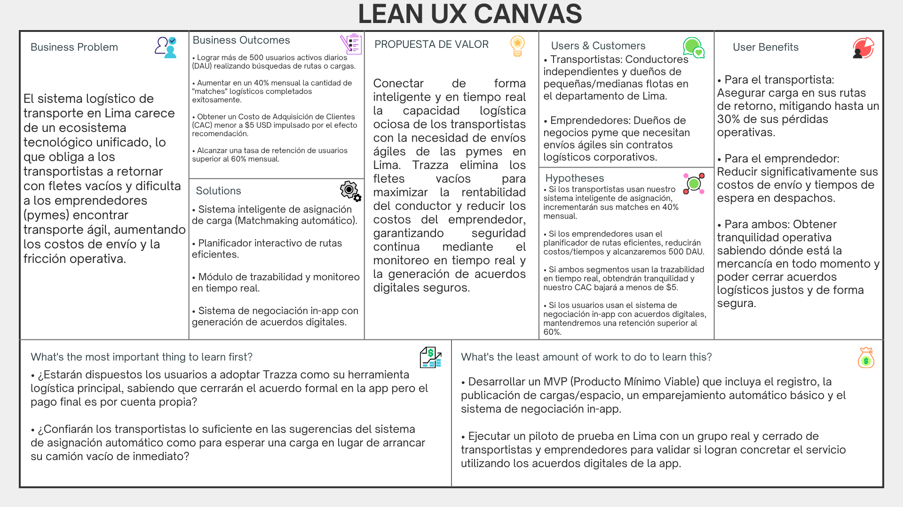
Figura: Lean UX Canvas de Trazza. Elaboración propia.
Lean UX Canvas: https://canva.link/41xql8grxyjm2m8
1.3. Segmentos objetivo
El modelo de negocio de Trazza opera bajo un esquema de plataforma bilateral, conectando la oferta de espacio logístico ocioso con la demanda de despachos ágiles. Por consiguiente, el dominio del problema se divide en dos segmentos objetivo principales dentro del departamento de Lima.
1.3.1. Segmento 1: Transportistas de Carga Terrestre (Oferta)
Este segmento está compuesto por conductores independientes y dueños de pequeñas o medianas flotas que buscan maximizar la rentabilidad de cada viaje, eliminando la pérdida económica que representan los fletes de retorno vacíos.
Características demográficas:
- Edad: Principalmente adultos entre 30 y 55 años.
- Género: Predominantemente masculino.
- Ubicación: Operadores con base en Lima Metropolitana que cubren rutas interdistritales y conexiones hacia los extremos del departamento de Lima.
- Nivel de digitalización: Intermedio. Emplean teléfonos inteligentes (smartphones) diariamente para comunicación básica (WhatsApp, llamadas) y navegación (Google Maps, Waze), pero carecen de herramientas tecnológicas corporativas para la gestión de clientes.
Información estadística de sustento:
- De acuerdo con reportes del Ministerio de Transportes y Comunicaciones (MTC) del Perú, el sector de transporte de carga terrestre se caracteriza por una alta atomización y fragmentación. Más del 80% del mercado está compuesto por micro y pequeñas empresas que operan con flotas reducidas (entre 1 a 5 vehículos).
- La falta de digitalización e integración logística provoca ineficiencias críticas en el sector, estimándose que un alto porcentaje de camiones realizan sus trayectos de regreso sin carga, lo que impacta directamente en la absorción total de los costos operativos y de combustible por parte del transportista.
Conformado por dueños de micro, pequeñas y medianas empresas (MYPEs) de sectores comerciales, manufactureros o agrícolas que requieren trasladar mercancía de manera frecuente, pero cuyo volumen no justifica el pago de contratos fijos y costosos con grandes agencias logísticas.
Características demográficas:
- Edad: Jóvenes y adultos entre 25 y 50 años.
- Género: Distribuido de manera equitativa entre hombres y mujeres.
- Ubicación: Comerciantes, productores y vendedores ubicados en polos comerciales, zonas industriales y mercados mayoristas del departamento de Lima.
- Nivel de digitalización: Medio-alto. Gestionan sus negocios apoyándose en canales digitales, redes sociales, comercio electrónico y pasarelas de pago, buscando constantemente optimizar sus márgenes de ganancia.
Información estadística de sustento:
- Según datos del Instituto Nacional de Estadística e Informática (INEI), las MYPEs constituyen más del 95% del tejido empresarial peruano, concentrándose una gran parte de su actividad comercial y productiva en Lima.
- Para el sector de la micro y pequeña empresa, los costos logísticos pueden representar un margen de entre el 15% y el 25% sobre el valor del producto final. Mitigar los costos de envío accediendo a fletes compartidos o retornos ociosos es un factor determinante para mantener precios competitivos en el mercado.
Capítulo II: Requirements Elicitation & Analysis
2.1. Competidores.
2.1.1. Análisis competitivo
| |
Competitive Analysis Landscape |
| ¿Por qué llevar a cabo este análisis? |
Comprender cómo se posiciona Trazza frente a las plataformas de intermediación de carga locales e internacionales (CargaYa, MiCarga y Uber Freight), con el fin de identificar oportunidades de diferenciación tecnológica (motor de emparejamiento con IA, algoritmos de optimización de rutas y trazabilidad IoT/GPS) y definir estrategias competitivas de adquisición y modelo de negocio adaptadas al mercado de transportistas y pymes en Lima. |
| |
|
Trazza |
CargaYa |
MiCarga |
Uber Freight |
| Logo |
|
|
|
|
|
| Perfil |
Overview |
Startup peruana que conecta, mediante un motor de emparejamiento inteligente con IA y optimización de rutas, la capacidad ociosa de transportistas (retornos vacíos) con la demanda de envíos ágiles de pymes en Lima. |
Plataforma digital peruana que conecta a generadores de carga con transportistas verificados por ruta a nivel nacional, facilitando la publicación y búsqueda de fletes. |
Aplicativo móvil peruano (desarrollado por Tracklink) que conecta usuarios y empresas con transportistas disponibles para mudanzas y traslados de carga en general. |
Plataforma logística global de Uber que utiliza tecnología avanzada y algoritmos para conectar digitalmente a transportistas y flotas con empresas generadoras de carga pesada. |
| |
Ventaja competitiva
¿Qué valor ofrece a los clientes? |
Emparejamiento automatizado con IA sin intermediar transacciones financieras (0% comisiones). Mitiga hasta un 30% de pérdidas en viajes de retorno a transportistas y brinda envíos rápidos y trazabilidad en tiempo real a emprendedores. |
Validación de identidad con fuentes oficiales (RENIEC/SUNAT) y negociación directa de tarifas entre las partes sin cobro de comisión al transportista. |
Monitoreo GPS en tiempo real durante todo el traslado, calificación de transportistas verificados y cotización rápida desde la app. |
Cotización instantánea y garantizada (Upfront Pricing), reserva automatizada de cargas 24/7 y seguimiento digital integral respaldado por infraestructura tecnológica global. |
| Perfil de Marketing |
Mercado objetivo |
Transportistas independientes, pequeñas flotas y emprendedores/dueños de negocios pyme del departamento de Lima. |
Transportistas y empresarios generadores de carga en las principales rutas interprovinciales del Perú. |
Personas particulares y microempresas que requieren mudanzas o traslado de carga ligera, mediana o pesada a nivel nacional. |
Empresas medianas y corporativas generadoras de carga (shippers), así como transportistas independientes y flotas a escala internacional. |
| |
Estrategias de marketing |
Alianzas con gremios de transportistas, marketing digital para pymes y crecimiento orgánico basado en recomendación boca a boca. |
Marketing digital enfocado en rutas específicas, presencia en redes sociales y testimonios de transportistas de retorno. |
Presencia en tiendas de aplicaciones (Google Play/App Store) y posicionamiento como "el primer aplicativo de carga del Perú". |
Marketing corporativo B2B, posicionamiento global de la marca Uber, alianzas enterprise y demostraciones de eficiencia tecnológica. |
| Perfil de Producto |
Productos & Servicios |
Motor de emparejamiento con IA, algoritmos de optimización de ruteo (Dijkstra, TSP), monitoreo IoT/GPS y canal de contacto directo para negociación externa. |
Publicación y búsqueda de cargas por ruta, chat de negociación directa y módulo informativo sobre el estado de carreteras. |
Publicación de solicitudes de traslado, sistema de cotizaciones de transportistas, monitoreo GPS y calificación de servicio. |
Aplicación móvil y portal web para reserva de cargas, fijación algorítmica de precios, rastreo de envíos en tiempo real y analítica logística. |
| |
Precios & Costos |
Sin comisión por transacción; el acuerdo económico se realiza externamente entre las partes sin costo en la plataforma. |
Transportistas: 0% de comisión.
Generadores de carga: 3% en la primera operación y 5% a partir de la segunda. |
Comisión integrada no pública; la gestión del pago se procesa dentro del aplicativo. |
Margen variable integrado dinámicamente en la tarifa por flete según oferta, demanda y distancia de la ruta. |
| |
Canales de distribución (Web y/o Móvil) |
Aplicación Web Responsive (Angular) y Landing Page informativo. |
Plataforma web (cargaya.pe). |
Aplicación móvil (Android/iOS) y portal web (micargapp.pe). |
Aplicación móvil (Android/iOS) para conductores y plataforma web empresarial para generadores de carga. |
| Análisis SWOT |
Fortalezas |
Enfoque innovador con IA para aprovechamiento de retornos vacíos, sin cobro de comisiones y con trazabilidad IoT/GPS integrada. |
Verificación de antecedentes con RENIEC y SUNAT, brindando confianza y seguridad a los usuarios. |
Pionero en el mercado peruano, respaldo corporativo de Tracklink y base instalada de usuarios. |
Liderazgo tecnológico mundial, capacidad financiera masiva, algoritmos maduros y alta confiabilidad de marca. |
| |
Debilidades |
Marca emergente en etapa inicial sin reconocimiento previo en el mercado local; necesidad de construir base de usuarios. |
Modelo de comisión creciente para los generadores de carga que puede desincentivar el uso recurrente. |
Menor nivel de automatización e inteligencia artificial en la asignación y optimización de rutas. |
Costos operativos elevados y plataforma no diseñada para la informalidad ni dinámicas de negociación directa en mercados emergentes. |
| |
Oportunidades |
Gran volumen de transporte informal desatendido en Lima (más del 80% son micro/pequeñas flotas) sin herramientas digitales accesibles. |
Extender la verificación y presencia a más regiones y puertos del territorio nacional. |
Integrar algoritmos avanzados de IA para optimizar cotizaciones y tiempos de asignación. |
Expansión potencial de sus operaciones hacia el mercado de transporte de carga en Sudamérica. |
| |
Amenazas |
Reticencia inicial al cambio tecnológico por parte de transportistas tradicionales e informales. |
Entrada de plataformas tecnológicas con asignación automatizada por IA sin comisiones. |
Pérdida de preferencia de usuarios frente a herramientas con mejor experiencia y menores costos. |
Dificultad para adaptarse a regulaciones locales, alta informalidad y riesgos de seguridad en Latinoamérica. |
2.1.2. Estrategias y tácticas frente a competidores.
A partir del análisis competitivo realizado, Trazza plantea las siguientes estrategias y tácticas para posicionarse sólidamente en el mercado:
-
Frente a la fragmentación y falta de digitalización (Oportunidad del mercado local): Desarrollar un proceso de registro y publicación ultraligero que permita a los transportistas independientes y pequeñas flotas registrar su disponibilidad de retorno en segundos desde cualquier dispositivo, capturando la alta demanda desatendida que hoy opera de manera informal.
-
Frente a la validación de identidad de CargaYa (Fortaleza del competidor): Aunque Trazza no intermedia pagos en su MVP, implementará un sistema transparente de calificaciones y reputación comunitaria entre transportistas y pymes, respaldado por la trazabilidad IoT/GPS en tiempo real como garantía objetiva de seguridad durante el trayecto.
-
Frente al cobro de comisiones por transacción de CargaYa y MiCarga (Debilidad detectada): Promover activamente como propuesta de valor que Trazza actúa como facilitador tecnológico con 0% de comisiones por flete, permitiendo que las partes negocien directamente sin sobrecostos que encarezcan el flete.
-
Frente al posicionamiento temprano de MiCarga (Fortaleza del competidor): Diferenciarse mediante la incorporación de tecnología avanzada: el motor de emparejamiento con IA y los algoritmos de optimización de ruteo (Dijkstra, TSP), comunicando claramente el impacto económico cuantificable (recuperación de hasta un 30% de rentabilidad operativa en retornos).
-
Frente a gigantes tecnológicos internacionales como Uber Freight (Referente global): Aprovechar la agilidad de una solución nativa enfocada en la realidad operativa y económica de Lima. Mientras que plataformas como Uber Freight imponen tarifas algorítmicas rígidas y esquemas corporativos complejos, Trazza ofrece flexibilidad, contacto directo y cero comisiones, adaptándose a las necesidades reales de los transportistas independientes y pymes locales.
2.2. Entrevistas.
2.2.1. Diseño de entrevistas
Las preguntas fueron diseñadas siguiendo buenas prácticas de entrevistas semiestructuradas: se parte de preguntas principales, abiertas y no sesgadas, orientadas a comprender comportamientos actuales, frustraciones y disposición a adoptar una solución tecnológica; y se complementan con preguntas que permiten recolectar la información demográfica y conductual necesaria para construir los arquetipos (edad, distrito, ocupación, nivel de digitalización, dispositivos y canales digitales de preferencia).
Primer segmento: Transportistas de Carga Terrestre
A continuación, se presentan las preguntas dirigidas a conductores independientes y dueños de pequeñas o medianas flotas que actualmente enfrentan la pérdida de rentabilidad asociada a los fletes de retorno vacíos.
Preguntas principales
- ¿Con qué frecuencia regresas de un viaje con el camión vacío?
- ¿Qué tan preocupante es para ti la pérdida económica que representa un flete de retorno vacío?
- ¿Qué haces actualmente para conseguir carga para tu viaje de regreso?
- ¿Cómo consigues normalmente tus contactos (clientes, vendedores, compradores) hoy en día?
- ¿Confiarías en un sistema que te sugiera automáticamente qué carga tomar en tu ruta de retorno?
- ¿Qué tan importante es para ti poder negociar el pago directamente con el cliente, fuera de una aplicación?
- ¿Qué tan útil sería contar con un sistema que muestre la ubicación y el estado de la carga durante el trayecto?
- ¿Qué te generaría más confianza para aceptar una carga ofrecida por una aplicación: la calificación del cliente, el monitoreo en tiempo real, o ambos?
- ¿Qué tan dispuesto estarías a esperar unos minutos a que la aplicación te consiga una carga antes de salir con el camión vacío?
- ¿Qué es lo que más te frustra del proceso actual de conseguir fletes de retorno?
- ¿Usarías una aplicación móvil para publicar tu disponibilidad y recibir sugerencias de carga?
- ¿Recomendarías una herramienta así a otros transportistas o dueños de flota que conozcas?
Preguntas complementarias
- ¿Qué edad tienes?
- ¿En qué distrito de Lima vives o tienes tu base de operaciones?
- ¿Eres transportista independiente o dueño de una flota? ¿De cuántos vehículos?
- ¿Qué tipo de vehículo(s) manejas o administras?
- ¿Qué tan seguido usas aplicaciones móviles en tu día a día (WhatsApp, Maps, redes sociales)?
- ¿Prefieres usar el celular o la computadora para gestionar tu trabajo?
Segundo segmento: Pequeños y Medianos Emprendedores
A continuación, se presentan las preguntas dirigidas a dueños de negocios pyme (comerciales, manufactureros o agrícolas) que requieren trasladar mercadería de forma frecuente sin contar con contratos fijos con grandes empresas logísticas.
Preguntas principales
- ¿Con qué frecuencia necesitas enviar mercadería o insumos dentro de Lima?
- ¿Qué tan preocupante es actualmente para ti el costo del transporte de tu mercadería?
- ¿Cómo consigues transporte para tus envíos en la actualidad?
- ¿Cuánto tiempo te toma normalmente encontrar un transportista disponible?
- ¿Qué tan útil sería para tu negocio encontrar transportistas con espacio disponible a un menor costo?
- ¿Qué tan importante es para ti poder ver en tiempo real dónde está tu mercadería?
- ¿Confiarías en una aplicación que te emparejara automáticamente con un transportista disponible?
- ¿Qué tan dispuesto estarías a coordinar y pagar el servicio directamente con el transportista, fuera de la aplicación?
- ¿Qué es lo más importante para ti al elegir un transportista: precio, rapidez, seguridad de la carga, u otro?
- ¿Qué te generaría más confianza para usar un transportista sugerido por una aplicación en lugar de uno de tu confianza habitual?
- ¿Usarías una aplicación móvil o web para publicar tu necesidad de envío y recibir ofertas de transporte?
- ¿Recomendarías esta herramienta a otros emprendedores o negocios similares al tuyo?
Preguntas complementarias
- ¿Qué edad tienes?
- ¿En qué distrito se ubica tu negocio?
- ¿A qué rubro se dedica tu negocio? (comercial, manufactura, agrícola, otro)
- ¿Cuántos envíos realizas en promedio al mes?
- ¿Qué tan seguido gestionas tu negocio a través de canales digitales (redes sociales, e-commerce, pasarelas de pago)?
- ¿Prefieres usar el celular o la computadora para gestionar tus pedidos y envíos?
2.2.2. Registro de entrevistas
Segmento 1: Transportistas de Carga Terrestre
Resumenes de Entrevistas
Resumen de entrevista 1:
Joaquín tiene 26 años, reside en La Molina y es cogerente de Ríos Transporte, un negocio familiar cuyos integrantes son todos dueños y que cuenta con aproximadamente tres camiones pequeños. Además de administrar la operación, conduce uno de los vehículos a diario en rutas que parten de La Molina hacia el Centro de Lima. Su formación en marketing se refleja en un perfil proactivo para captar clientes: entrega su tarjeta de contacto a mayoristas de los mercados, realiza campañas en Facebook e Instagram y cuida a sus clientes actuales para generar recomendaciones boca a boca. El celular es su principal herramienta durante la jornada, en la que usa WhatsApp para comunicarse con clientes y Google Maps y Waze para consultar rutas y tráfico; la computadora la reserva para las noches, cuando revisa hojas de Excel y temas contables.
Su principal problema es que entre el 80 % y el 90 % de sus viajes de retorno se realizan sin carga: desde La Molina sale mucha mercadería hacia el Centro de Lima, pero es muy difícil encontrar clientes con destino a esa zona. Lo describe como su mayor dolor de cabeza, pues genera pérdidas por combustible, desgaste del camión y tiempo desperdiciado en el tráfico, y como responsable de cuidar los ahorros de la empresa le preocupa de forma constante. Hoy se estaciona a esperar, abre grupos de WhatsApp de transportistas o llama a amigos y conocidos, y puede pasar hasta una hora sin resultados antes de rendirse y regresar vacío. Esta búsqueda a ciegas es lo que más le frustra, y su objetivo es mejorar la rentabilidad del negocio y aprovechar los viajes de retorno.
Joaquín utilizaría una aplicación que sugiera automáticamente cargas compatibles con su ruta y estaría dispuesto a esperar entre 15 y 30 minutos si eso asegura cubrir el costo del regreso. Considera vital negociar directamente con los clientes y fijar sus propias tarifas: prefiere que la aplicación le entregue el contacto en lugar de imponerle un precio que no le convenga. Para aceptar una carga valora las calificaciones de los clientes, que le dan tranquilidad de que es alguien serio y pagará a tiempo, y el monitoreo en tiempo real, que le permitiría ofrecer a sus clientes el seguimiento en vivo de su carga y proyectar una imagen más profesional. Afirma que mantendría la aplicación abierta todo el día junto a Waze y que la recomendaría a otros transportistas del rubro que sufren el mismo problema, ya que ahorra gasolina y permite ganar más.
Resumen de entrevista 2:
Juan David tiene 21 años y trabaja en una empresa familiar de transporte ubicada en Ate, donde se desempeña como encargado de logística de una flota de aproximadamente seis camiones de carga que trasladan distintos tipos de mercancía. Sus funciones incluyen coordinar rutas, viajes y disponibilidad de vehículos. Utiliza todos los días WhatsApp para comunicarse con clientes y conductores, Google Maps para revisar rutas y tiempos de viaje y redes sociales. Por su rol orientado al control de la operación, prefiere la computadora para organizar la información y llevar un mejor seguimiento de los viajes, y el celular para tareas rápidas como revisar mensajes, consultar rutas o contactar clientes. Sus contactos provienen de recomendaciones, relaciones construidas con el tiempo y grupos de WhatsApp del rubro del transporte.
Su principal dificultad es que dos o tres veces por semana algunos camiones regresan vacíos, sobre todo cuando no consiguen una carga que coincida con la ruta de retorno. Esto genera gastos de combustible, peajes y mantenimiento sin ingresos adicionales. Actualmente busca cargas preguntando a contactos conocidos, a otros transportistas, a clientes y en grupos de WhatsApp, pero lo que más le frustra es tener que revisar varios contactos y grupos sin saber si la carga realmente está disponible, lo que le hace perder tiempo sin conseguir resultados. Por ello busca optimizar la planificación logística, reducir los costos operativos y aprovechar mejor los viajes de retorno.
Juan David confiaría en un sistema que sugiera cargas automáticamente siempre que la información sea confiable y la carga esté disponible, porque le ahorraría tiempo de búsqueda manual. Estaría dispuesto a esperar unos minutos si existe una buena posibilidad de encontrar una carga compatible, pues considera mejor esperar que regresar completamente vacío. Es muy importante para él negociar directamente las condiciones y el precio con el cliente; preferiría que la aplicación sirva principalmente para conectar al transportista con quien necesita enviar. Las calificaciones de los clientes le permitirían saber si son confiables y el seguimiento en tiempo real le daría mayor control y seguridad de que el servicio se realiza correctamente. Utilizaría una herramienta sencilla que permita indicar la ruta, el tipo de vehículo y la disponibilidad, y la recomendaría a otros transportistas siempre que las cargas publicadas sean reales y el sistema funcione bien.
Resumen de entrevista 3:
Ariana Isabel Escalante Sánchez tiene 24 años, reside en San Juan de Lurigancho y es transportista independiente, propietaria de un furgón liviano de entre 3.5 y 4 toneladas, ideal para reparto urbano y viajes interurbanos cortos, que adquirió para iniciar su propio negocio. Lleva pocos años en el sector y todavía está construyendo su cartera de clientes, por lo que a veces debe arriesgarse a regresar vacía para no quedarse varada pagando cochera en otra zona. Para conseguir oportunidades recurre a grupos de WhatsApp de transportistas, grupos de Facebook de fletes, redes sociales, recomendaciones de familiares del rubro, contactos guardados de cada servicio y consultas a choferes con más experiencia en la zona de descarga. Tiene alta familiaridad con la tecnología y gestiona todo desde el celular: usa Waze y Google Maps activos para navegar, WhatsApp para coordinar servicios y billeteras digitales para cotizaciones y cobros, incluso mientras está en ruta.
Su principal problema es que entre el 45 % y el 50 % de las veces regresa sin carga, debido a la falta de clientes y oportunidades compatibles con su ruta. Para ella es muy frustrante y preocupante porque aún paga las cuotas del vehículo, el mantenimiento y los seguros, y si regresa vacía el combustible y el peaje se llevan la ganancia del viaje de ida. También le frustran la desconfianza que enfrenta por ser joven, los intermediarios que cobran una comisión injusta solo por pasar un contacto y la incertidumbre sobre si el cliente cumplirá con el pago. Su principal meta es consolidar su negocio, conseguir clientes confiables y aumentar la rentabilidad de cada recorrido.
Aariana confiaría en un sistema que sugiera cargas automáticamente, siempre que la información sea transparente, porque le ahorraría el tiempo de llamar o buscar a ciegas. Estaría dispuesta a esperar entre 30 y 45 minutos revisando el celular en el punto de entrega si eso significa regresar con carga pagada. Considera importante negociar con el cliente detalles como los tiempos de espera, pero está abierta a que la plataforma gestione los pagos si garantiza que el cliente cumpla. Valora las calificaciones de los clientes, que le permiten filtrar clientes problemáticos o morosos antes de aceptar, y el monitoreo en tiempo real, que aporta seriedad al viaje, le da respaldo ante cualquier reclamo y evita que el cliente deba llamarla mientras conduce. Ve la digitalización como una oportunidad para reducir la dependencia de intermediarios y modernizar el sector del transporte, tema que comenta con compañeros de su edad, y recomendaría la aplicación a otros transportistas.
Segmento 2: Pequeños y Medianos Emprendedores
Resumenes de Entrevistas
Resumen de entrevista 1:
Jannet Párraga tiene 48 años, reside en Ate y se dedica al rubro de los cosméticos. Su emprendimiento surgió por necesidad económica, cuando dejó de trabajar en una oficina y necesitaba generar ingresos mientras tenía un hijo pequeño. Actualmente realiza aproximadamente 20 pedidos de mercadería al mes, que pueden incluir cremas, champús y otros productos. Gestiona su negocio principalmente desde el celular y utiliza Instagram, Facebook y WhatsApp para promocionar sus productos, compartir catálogos y mantener contacto con sus clientes. Prefiere los dispositivos Samsung y busca información para mejorar su negocio mediante Google, blogs de emprendedores y herramientas de inteligencia artificial.
Jannet se describe como una persona proactiva, esforzada, empática y respetuosa. Considera que sus principales fortalezas son escuchar las necesidades de sus clientes y ofrecer productos de manera transparente. Su principal dificultad es el aumento del costo del transporte, influenciado por las variaciones del precio del combustible, lo que encarece la distribución de su mercadería. Actualmente contrata una empresa de transporte tercerizada con la que mantiene una relación de confianza desde hace tiempo. Aunque está satisfecha con el servicio, considera que la recomendación de otras personas sería importante para evaluar nuevas alternativas, pues la seguridad de sus productos y la confiabilidad del transportista son sus principales preocupaciones.
Jannet considera muy importante el seguimiento de la mercadería en tiempo real, incluyendo la ubicación, las paradas y el avance de la entrega. También prefiere realizar los pagos mediante la aplicación si esta ofrece garantías y protección para sus envíos, en lugar de entregar dinero directamente a una persona desconocida. Para confiar en un transportista, valora las calificaciones, las estrellas y las recomendaciones de otros clientes o empresas. Estaría dispuesta a utilizar una plataforma que le permita publicar sus necesidades de envío y recibir ofertas de transporte, y la recomendaría si funciona adecuadamente. Su principal meta es mantener una distribución segura y confiable, controlar sus envíos y reducir los costos de transporte sin comprometer la calidad del servicio.
Resumen de entrevista 2:
Almendra Lavi tiene 21 años y se desempeña como cogerente de Okawa, empresa ubicada en La Victoria dedicada a la venta y alquiler de productos tecnológicos, principalmente laptops y computadoras, incluyendo equipos reacondicionados. La empresa realiza aproximadamente 100 a 500 envíos de productos por semana, dependiendo de la temporada. Debido a su rol, Almendra gestiona principalmente sus actividades mediante una laptop, mientras que reconoce que sus clientes utilizan mayormente el celular para conocer los productos. La empresa también utiliza redes sociales, una tienda web y pasarelas de pago para comercializar sus productos.
Actualmente, Okawa trabaja con un aliado comercial que recibe los productos en un almacén y se encarga de la distribución hacia los clientes. Esta modalidad reduce la carga logística de la empresa, pero representa costos elevados que disminuyen el margen de ganancia, además de haber presentado algunos retrasos. Almendra también identifica como problema la falta de seguimiento específico de los paquetes, ya que actualmente solo reciben actualizaciones generales sobre los productos enviados. Por ello, considera importante contar con un sistema que permita conocer la ubicación de cada envío y verificar el cumplimiento de su promesa comercial de entregas en 24 horas o menos. También le interesa que el transporte hacia el almacén pueda ser realizado por el proveedor, ya que esto reduciría tiempo, tráfico y estrés, siempre que el costo sea conveniente.
Para considerar una nueva alternativa de transporte, Almendra prioriza la seguridad, la confiabilidad y la verificación de los transportistas, especialmente porque los productos son frágiles y existe riesgo de daños o robos. También considera importante que el centro logístico se encuentre cerca de la empresa y que el transportista mantenga un buen trato con sus clientes. Estaría dispuesta a utilizar una plataforma para publicar sus necesidades y recibir ofertas, siempre que sea privada, cuente con transportistas verificados y permita realizar un seguimiento detallado de los envíos. Recomendaría la herramienta si aporta valor, aunque considera que una solución que le otorgue un diferencial frente a sus competidores no debería compartirse ampliamente con ellos.
Resumen de entrevista 3:
Camila Flores tiene 23 años y es propietaria de Camila Bakery, un negocio de pastelería ubicado en Santiago de Surco. Trabaja principalmente durante los fines de semana y realiza aproximadamente 80 a 100 envíos al mes, principalmente dentro de Lima; los envíos a provincia son excepcionales. Gestiona su negocio exclusivamente mediante el celular y utiliza WhatsApp e Instagram como principales canales digitales. Para sus entregas utiliza actualmente aplicaciones de transporte y courier, principalmente Uber e InDrive, mediante las cuales puede encontrar un transportista disponible en aproximadamente cinco minutos.
Su principal problema está relacionado con el costo del transporte cuando las distancias son largas, lo que puede encarecer sus entregas. Por ello, considera bastante útil encontrar transportistas con espacio disponible a un menor precio y estaría dispuesta a esperar más tiempo si esto permite reducir el costo del servicio. También considera muy importante el seguimiento de la mercancía en tiempo real, porque le genera confianza durante el proceso de entrega. En cuanto a la selección del transportista, muestra una ligera preferencia por modelos donde pueda escoger entre diferentes opciones, en lugar de depender únicamente de una asignación automática.
Camila estaría dispuesta a utilizar una aplicación que la conecte automáticamente con transportistas siempre que estos sean confiables. Para ella, los principales factores al elegir un servicio son la seguridad y el precio, mientras que las opiniones y puntuaciones de otros usuarios serían elementos importantes para determinar la confianza en un transportista. También estaría dispuesta a coordinar y pagar directamente con el transportista porque considera que es una alternativa más humana. Finalmente, aceptaría publicar sus necesidades de envío en una plataforma y considera muy probable recomendarla a otros emprendedores si funciona correctamente, buscando principalmente reducir costos, mantener la seguridad de sus productos y facilitar la gestión de sus entregas.
2.2.3. Análisis de entrevistas
Esta sección consolida la información recolectada en las entrevistas registradas en 2.2.2 y presenta, por cada segmento objetivo, las variables y los valores representativos a nivel objetivo y subjetivo que servirán de base para construir los User Personas de 2.3.1. Todas las características provienen de los resúmenes de entrevista y cada una indica los entrevistados que la sustentan.
Metodología del análisis
- Variables. De cada resumen se extrajeron variables objetivas (datos demográficos, ocupación, dispositivos, aplicaciones, canales digitales y comportamientos verificables) y variables subjetivas (objetivos, frustraciones, motivaciones, personalidad, influencias y condiciones para adoptar la solución).
- Cálculo. Cada valor se presenta con la cantidad de entrevistados que lo declaran (n de N) y su porcentaje, calculado como n ÷ N × 100.
- Valor representativo. Un valor se considera representativo del segmento cuando lo comparten al menos 2 de 3 entrevistados (66,7 % o más). Los valores con 33,3 % se registran como rasgos individuales y no definen el arquetipo.
- Trazabilidad. La columna Fuente identifica a los entrevistados con la codificación E1, E2 y E3 de cada segmento, en el mismo orden de las tablas de 2.2.2.
- Variables no recolectadas. Las variables que las entrevistas no cubrieron se declaran de forma explícita y no se completan con supuestos.
- Segmento 1: Transportistas de carga terrestre (N = 3).
- Segmento 2: Pequeños y medianos emprendedores (N = 3).
2.2.3.1. Segmento 1: Transportistas de carga terrestre
Entrevistados:
- E1 Joaquín Ríos (26 años, La Molina; cogerente de Ríos Transporte, negocio familiar con unos 3 camiones pequeños).
- E2 Juan David Haro Ramos (21 años, Ate; encargado de logística de una empresa familiar con unos 6 camiones).
- E3 Ariana Escalante (24 años, San Juan de Lurigancho; transportista independiente con un furgón liviano de 3,5 a 4 t).
Características objetivas
| Categoría |
Variable y valor |
n/N |
% |
Fuente |
Evidencia en los resúmenes |
| Demográfica |
Género masculino |
2 de 3 |
66,7 % |
E1, E2 |
Joaquín y Juan David |
| Demográfica |
Género femenino |
1 de 3 |
33,3 % |
E3 |
Ariana |
| Demográfica |
Edad entre 21 y 26 años (promedio 23,7) |
3 de 3 |
100 % |
E1, E2, E3 |
26, 21 y 24 años |
| Demográfica |
Reside u opera en Lima Este |
3 de 3 |
100 % |
E1, E2, E3 |
La Molina, Ate y San Juan de Lurigancho |
| Ocupación |
Transportista que opera o gestiona vehículos de carga |
3 de 3 |
100 % |
E1, E2, E3 |
E1 cogerente y conductor; E2 encargado de logística; E3 dueña y conductora |
| Ocupación |
Modalidad de negocio familiar |
2 de 3 |
66,7 % |
E1, E2 |
Ríos Transporte y empresa familiar en Ate |
| Ocupación |
Modalidad de transportista independiente |
1 de 3 |
33,3 % |
E3 |
Adquirió su furgón para iniciar su propio negocio |
| Ocupación |
Flota pequeña de 1 a 6 vehículos |
3 de 3 |
100 % |
E1, E2, E3 |
3 camiones, 6 camiones y 1 furgón |
| Ocupación |
Conduce directamente su vehículo |
2 de 3 |
66,7 % |
E1, E3 |
E1 maneja uno de los camiones; E3 es dueña y conductora |
| Dispositivos |
Celular como herramienta principal de la jornada |
3 de 3 |
100 % |
E1, E2, E3 |
E3 gestiona todo desde el celular; E1 y E2 lo usan en ruta y para tareas rápidas |
| Dispositivos |
Computadora como apoyo para control y contabilidad |
2 de 3 |
66,7 % |
E1, E2 |
E1 usa Excel por las noches; E2 organiza información y controla operaciones |
| Aplicaciones |
WhatsApp para coordinar con clientes y conductores |
3 de 3 |
100 % |
E1, E2, E3 |
Mencionado en los tres resúmenes |
| Aplicaciones |
Google Maps para rutas y tráfico |
3 de 3 |
100 % |
E1, E2, E3 |
Mencionado en los tres resúmenes |
| Aplicaciones |
Waze para rutas y tráfico |
2 de 3 |
66,7 % |
E1, E3 |
E1 usa Google Maps y Waze; E3 mantiene ambos activos |
| Canales digitales |
Redes sociales para captar clientes u oportunidades |
2 de 3 |
66,7 % |
E1, E3 |
E1 campañas en Facebook e Instagram; E3 grupos de Facebook y redes sociales |
| Canales digitales |
Billeteras digitales para cobros |
1 de 3 |
33,3 % |
E3 |
Cotizaciones y cobros desde el celular |
| Comportamiento |
Regresa sin carga en parte de sus viajes |
3 de 3 |
100 % |
E1, E2, E3 |
E1 entre 80 % y 90 %; E2 de 2 a 3 veces por semana; E3 entre 45 % y 50 % |
| Comportamiento |
Asume costos sin ingreso en el retorno |
3 de 3 |
100 % |
E1, E2, E3 |
Combustible, peajes, mantenimiento, cuotas y seguros |
| Comportamiento |
Busca carga de forma informal con grupos de WhatsApp, llamadas y contactos |
3 de 3 |
100 % |
E1, E2, E3 |
E1 grupos y amigos; E2 contactos y grupos; E3 grupos, choferes y familiares |
| Comportamiento |
Capta clientes por recomendación o boca a boca |
3 de 3 |
100 % |
E1, E2, E3 |
E1 y E2 recomendaciones; E3 recomendaciones de familiares del rubro |
Características subjetivas
| Categoría |
Variable y valor |
n/N |
% |
Fuente |
Evidencia en los resúmenes |
| Objetivo |
Aumentar la rentabilidad aprovechando el viaje de retorno |
3 de 3 |
100 % |
E1, E2, E3 |
E1 mejorar la rentabilidad; E2 reducir costos operativos; E3 aumentar la rentabilidad de cada recorrido |
| Frustración |
Buscar carga sin certeza de encontrarla ni de su disponibilidad |
3 de 3 |
100 % |
E1, E2, E3 |
E1 hasta una hora sin resultados; E2 incertidumbre sobre la carga disponible; E3 búsqueda a ciegas |
| Frustración |
Pérdida económica por el retorno vacío |
3 de 3 |
100 % |
E1, E2, E3 |
Los tres lo señalan como su principal preocupación |
| Frustración |
Desconfianza por ser joven e intermediarios que cobran comisiones injustas |
1 de 3 |
33,3 % |
E3 |
Rasgo individual de Ariana |
| Adopción |
Confiaría en un sistema que sugiera cargas automáticamente |
3 de 3 |
100 % |
E1, E2, E3 |
E2 lo condiciona a información confiable y E3 a transparencia |
| Adopción |
Esperaría por una carga compatible entre unos minutos y 45 minutos |
3 de 3 |
100 % |
E1, E2, E3 |
E1 de 15 a 30 minutos; E2 unos minutos; E3 de 30 a 45 minutos |
| Adopción |
Las calificaciones de los clientes generan confianza |
3 de 3 |
100 % |
E1, E2, E3 |
Mencionado en los tres resúmenes |
| Adopción |
El monitoreo en tiempo real genera confianza y seguridad |
3 de 3 |
100 % |
E1, E2, E3 |
Mencionado en los tres resúmenes |
| Adopción |
Prefiere negociar condiciones y tarifa directamente con el cliente |
3 de 3 |
100 % |
E1, E2, E3 |
E3 también acepta que la plataforma gestione los pagos si hay garantías |
| Adopción |
Usaría la aplicación y la recomendaría a otros transportistas |
3 de 3 |
100 % |
E1, E2, E3 |
E2 lo condiciona a que las cargas publicadas sean reales |
| Influencias |
Se guía por recomendaciones de colegas, familiares y contactos del rubro |
3 de 3 |
100 % |
E1, E2, E3 |
Fuente principal de clientes y oportunidades |
| Personalidad |
Perfil proactivo con formación en marketing |
1 de 3 |
33,3 % |
E1 |
Rasgo individual de Joaquín |
Variables no recolectadas en este segmento: estado civil, composición familiar, marcas de dispositivos y navegador de preferencia. Las entrevistas tampoco indagaron la personalidad de E2 y E3. Se recomienda incluir estas preguntas en una siguiente ronda para completar los arquetipos.
Rasgos individuales (33,3 %)
- Pagos gestionados por la plataforma con garantías, billeteras digitales y cartera de clientes en construcción (E3).
- Desconfianza por ser joven y rechazo a intermediarios que cobran comisiones injustas (E3).
- Cargas reales y sistema confiable como condición para recomendar (E2).
- Dificultad específica para hallar carga hacia La Molina (E1).
- Perfil proactivo y formación en marketing (E1).
Valores representativos para el arquetipo
| Dimensión |
Valor representativo |
% |
| Perfil |
Adulto joven de Lima Este, de 21 a 26 años, que opera una flota pequeña o un vehículo liviano |
100 % |
| Género |
Masculino en la mayoría de los casos |
66,7 % |
| Tecnología |
Móvil primero, con WhatsApp y Google Maps; Waze y computadora como apoyo |
100 % |
| Dolor |
Retorno sin carga que genera pérdidas |
100 % |
| Objetivo |
Rentabilizar el viaje de retorno |
100 % |
| Condición de adopción |
Calificaciones de clientes y monitoreo en tiempo real |
100 % |
| Comportamiento |
Búsqueda informal de carga y negociación directa de la tarifa |
100 % |
Perfil predominante
Adulto joven de Lima Este, de 21 a 26 años, con enfoque móvil primero y WhatsApp como canal principal. Su dolor central son los retornos sin carga, que van del 45 % al 90 % de sus viajes o de 2 a 3 veces por semana. Busca cargas de manera informal, con frustración y pérdida de tiempo, y quiere rentabilizar el viaje de retorno. Está dispuesto a esperar entre unos minutos y 45 minutos por una carga compatible, prefiere negociar directamente su tarifa y adoptaría la herramienta si incluye calificaciones de clientes y monitoreo en tiempo real.
Entrevistados:
- E1 Jannet Párraga (48 años, Ate; cosméticos; unos 20 pedidos al mes).
- E2 Almendra Lavi (21 años, La Victoria; cogerente de Okawa, venta y alquiler de equipos tecnológicos; de 100 a 500 envíos por semana).
- E3 Camila Flores (23 años, Santiago de Surco; pastelería Camila Bakery; de 80 a 100 envíos al mes).
Características objetivas
| Categoría |
Variable y valor |
n/N |
% |
Fuente |
Evidencia en los resúmenes |
| Demográfica |
Género femenino |
3 de 3 |
100 % |
E1, E2, E3 |
Jannet, Almendra y Camila |
| Demográfica |
Edad entre 21 y 48 años (promedio 30,7) |
3 de 3 |
100 % |
E1, E2, E3 |
48, 21 y 23 años |
| Demográfica |
Edad de 23 años o menos |
2 de 3 |
66,7 % |
E2, E3 |
21 y 23 años |
| Demográfica |
Negocio ubicado en Lima |
3 de 3 |
100 % |
E1, E2, E3 |
Ate, La Victoria y Santiago de Surco |
| Demográfica |
Divorciada con un hijo pequeño al iniciar su emprendimiento |
1 de 3 |
33,3 % |
E1 |
Rasgo individual de Jannet |
| Ocupación |
Dueña o gerente de su propio negocio |
3 de 3 |
100 % |
E1, E2, E3 |
Emprendedora, cogerente y propietaria |
| Ocupación |
Rubros distintos: cosméticos, tecnología y pastelería |
3 de 3 |
100 % |
E1, E2, E3 |
Sin coincidencia de rubro, por lo que el segmento es transversal |
| Ocupación |
Envíos recurrentes |
3 de 3 |
100 % |
E1, E2, E3 |
20 pedidos al mes, de 100 a 500 por semana y de 80 a 100 al mes |
| Dispositivos |
Celular como herramienta principal de gestión |
2 de 3 |
66,7 % |
E1, E3 |
E3 de forma exclusiva |
| Dispositivos |
Laptop como herramienta principal de gestión |
1 de 3 |
33,3 % |
E2 |
Reconoce que sus clientes usan el celular |
| Canales digitales |
Usan redes sociales para vender o comunicarse |
3 de 3 |
100 % |
E1, E2, E3 |
E1 Instagram, Facebook y WhatsApp; E2 redes y tienda web; E3 WhatsApp e Instagram |
| Canales digitales |
Usan WhatsApp e Instagram |
2 de 3 |
66,7 % |
E1, E3 |
Catálogos, promoción y contacto con clientes |
| Canales digitales |
Tienda web y pasarelas de pago |
1 de 3 |
33,3 % |
E2 |
Venta de productos de ticket alto |
| Transporte actual |
Dependen de un tercero para transportar sus productos |
3 de 3 |
100 % |
E1, E2, E3 |
E1 empresa tercerizada; E2 aliado comercial con almacén; E3 Uber e InDrive |
| Transporte actual |
Trabajan con un transportista o aliado fijo |
2 de 3 |
66,7 % |
E1, E2 |
Relación de confianza de largo plazo |
| Marcas de referencia |
Samsung como marca de confianza en tecnología |
1 de 3 |
33,3 % |
E1 |
Rasgo individual de Jannet |
| Marcas de referencia |
Uber e InDrive como apps de transporte |
1 de 3 |
33,3 % |
E3 |
Encuentra transportista en unos 5 minutos |
Características subjetivas
| Categoría |
Variable y valor |
n/N |
% |
Fuente |
Evidencia en los resúmenes |
| Frustración |
El costo del transporte es su principal dificultad |
3 de 3 |
100 % |
E1, E2, E3 |
E1 alza por combustible; E2 costos que reducen el margen; E3 costo en distancias largas |
| Objetivo |
Entregas seguras y confiables a un costo razonable |
3 de 3 |
100 % |
E1, E2, E3 |
Mantener seguros los productos y reducir costos |
| Objetivo |
Cumplir la promesa de entrega y mejorar el control de los envíos |
2 de 3 |
66,7 % |
E1, E2 |
E1 controlar los envíos; E2 entregas en 24 horas o menos |
| Adopción |
La seguridad y confiabilidad de la mercadería es prioridad |
3 de 3 |
100 % |
E1, E2, E3 |
E2 destaca productos frágiles y riesgo de robo |
| Adopción |
El seguimiento en tiempo real es muy importante |
3 de 3 |
100 % |
E1, E2, E3 |
E1 ubicación y paradas; E2 seguimiento por envío; E3 genera confianza |
| Adopción |
Valoran la reputación o verificación del transportista |
3 de 3 |
100 % |
E1, E2, E3 |
E1 y E3 calificaciones y opiniones; E2 transportistas verificados |
| Adopción |
Publicarían sus envíos y recibirían ofertas de transporte |
3 de 3 |
100 % |
E1, E2, E3 |
E2 lo condiciona a una plataforma privada y verificada |
| Adopción |
Recomendarían la plataforma si funciona correctamente |
3 de 3 |
100 % |
E1, E2, E3 |
E2 con reserva sobre compartir su diferencial competitivo |
| Adopción |
Prefieren transportistas fidelizados o recomendados |
2 de 3 |
66,7 % |
E1, E2 |
Confianza previa con su proveedor actual |
| Adopción |
Prefieren pagar por la aplicación si ofrece garantías |
1 de 3 |
33,3 % |
E1 |
Opuesto a E3, que prefiere pagar directo por considerarlo más humano |
| Personalidad |
Proactiva, esforzada, empática, cooperativa y respetuosa |
1 de 3 |
33,3 % |
E1 |
Rasgo individual de Jannet |
| Influencias |
Busca información en Google, blogs de emprendedores e inteligencia artificial |
1 de 3 |
33,3 % |
E1 |
Rasgo individual de Jannet |
Variables no recolectadas en este segmento: estado civil y composición familiar de E2 y E3, personalidad de E2 y E3, y navegador de preferencia.
Rasgos individuales (33,3 %)
- Preferir pagar mediante la app con garantías (E1) frente a pagar directamente al transportista por considerarlo más humano (E3), posturas opuestas.
- Plataforma privada, con transportistas verificados y centro logístico cercano (E2).
- Cumplimiento de la promesa de entrega en 24 horas y retrasos actuales (E2).
- Disposición a esperar más tiempo para reducir el costo y preferencia por elegir entre opciones (E3).
- Recomendaciones de terceros para evaluar nuevas alternativas (E1).
- Uso de laptop como herramienta principal de gestión (E2).
Valores representativos para el arquetipo
| Dimensión |
Valor representativo |
% |
| Perfil |
Mujer emprendedora de Lima con envíos recurrentes, de rubro variable |
100 % |
| Tecnología |
Celular como herramienta principal, con redes sociales y WhatsApp |
66,7 % |
| Dolor |
Costo del transporte y riesgo para la mercadería |
100 % |
| Objetivo |
Entregas seguras, confiables y a menor costo |
100 % |
| Condición de adopción |
Seguimiento en tiempo real y transportista verificado o bien calificado |
100 % |
| Comportamiento |
Depende de un transportista tercerizado, generalmente fidelizado |
66,7 % |
| Disposición |
Publicar envíos y recibir ofertas si la plataforma es confiable |
100 % |
Perfil predominante
Emprendedora de Lima, con negocio digital y envíos recurrentes, cuya prioridad es que su mercadería llegue segura y a un costo razonable. Depende de un transportista tercerizado, valora la reputación mediante calificaciones y verificación, y exige seguimiento en tiempo real. Está dispuesta a publicar sus envíos y recibir ofertas si la plataforma es confiable. Hay dos subperfiles:
- A: control y confianza (E1, E2). Quiere elegir, fidelizar, verificar y monitorear a su transportista, y prioriza la seguridad sobre el precio.
- B: costo y flexibilidad (E3). Prioriza la tarifa baja, acepta esperar más tiempo y valora elegir entre opciones, con alto uso digital.
2.2.3.3. Base para los arquetipos
|
Transportista |
Emprendedor |
| Dolor |
Retorno sin carga que genera pérdidas (100 %) |
Costo de transporte (100 %) y riesgo para la mercadería (100 %) |
| Motivación |
Rentabilizar los viajes de retorno (100 %) |
Entregas seguras, confiables y a menor costo (100 %) |
| Condición de adopción |
Calificaciones (100 %) y monitoreo en tiempo real (100 %) |
Seguimiento en tiempo real (100 %) y transportista verificado o bien calificado (100 %) |
| Comportamiento |
Móvil primero, WhatsApp y mapas, búsqueda informal de carga (100 %) y negociación directa del precio (100 %) |
Canales digitales (100 %) y transportista tercerizado (100 %); fidelizado, salvo el subperfil B (66,7 %) |
| Disposición |
Esperaría de unos minutos a 45 minutos por una carga (100 %) |
Publicaría envíos y recibiría ofertas (100 %) |
Conexión clave: ambos segmentos coinciden en pedir confianza y seguridad mediante calificaciones, seguimiento en tiempo real y verificación. Además, el problema es complementario: el transportista tiene capacidad ociosa en el retorno y el emprendedor busca transporte más barato y seguro. Esto apunta a una propuesta de valor basada en reputación y trazabilidad que conecte la capacidad vacía con la demanda de envíos.
Limitación metodológica: con N = 3 por segmento, cada entrevistado representa 33,3 %. Los porcentajes son indicativos y sirven para construir arquetipos, no para generalizar estadísticamente.
2.3. Needfinding
El Needfinding es una actividad fundamental de la ingeniería de requisitos que permite identificar las necesidades, problemas, expectativas y actividades de los usuarios antes de definir las funcionalidades del sistema. En el proyecto Trazza, esta etapa busca comprender cómo los transportistas y las MYPE generan, buscan y coordinan servicios de transporte actualmente.
Para ello, se emplean herramientas de análisis centradas en el usuario, como User Personas, User Task Matrix, User Journey Mapping, Empathy Mapping y As-is Scenario Mapping. Estos artefactos permiten reconocer dificultades del proceso actual y establecer oportunidades de mejora que servirán como base para la definición de requisitos funcionales y no funcionales de la plataforma.
2.3.1 User Personas
A continuación, se presentan los arquetipos de nuestros segmentos objetivos. La construcción de estos User Personas se basó directamente en la información recolectada durante las entrevistas, tomando en cuenta las principales frustraciones, motivaciones y el nivel de digitalización de los usuarios. Además, se consideró el análisis de la competencia para identificar qué carencias actuales en el mercado podrían ser resueltas para estos perfiles. Cada ficha incluye información demográfica, metas, marcas afines y su principal problemática logística.
User Persona del Segmento Objetivo 1: Transportistas de Carga Terrestre
User Persona - Juan David Ramos: https://uxpressia.com/w/v8FzI/p/7Mes0
User Persona - Valeria Torres: https://uxpressia.com/w/v8FzI/p/tzGKz
2.3.2 User Task Matrix
En esta sección se presenta el User Task Matrix, el cual concentra las tareas clave que los representantes de cada segmento (Transportistas y Emprendedores MYPE) realizan para cumplir sus objetivos logísticos. Estas tareas reflejan las actividades del mundo real que se ejecutan independientemente de nuestra futura solución de software.
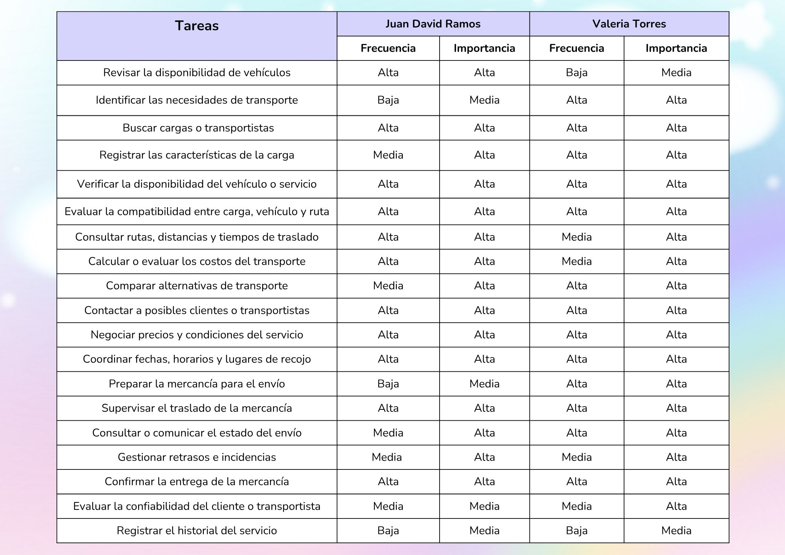
User Task Matrix: https://canva.link/ublc7myvirh3hob
Análisis de tareas:
Al comparar ambos perfiles, observamos que las tareas con mayor frecuencia e importancia para el Emprendedor MYPE son la "Búsqueda de transportistas" y el "Monitoreo del envío", dado que de ello depende la satisfacción de su cliente final. Por su parte, para el Transportista, la "Búsqueda de carga de retorno" y la "Negociación de tarifas" son críticas, ya que impactan directamente en su rentabilidad.
Una coincidencia importante es que ambos segmentos dedican mucho esfuerzo a la "Coordinación de tiempos y recojo". La principal diferencia radica en el enfoque de seguridad: el emprendedor teme por el estado de su mercadería, mientras que el transportista teme la informalidad del pago o asaltos en ruta.
2.3.3 User Journey Mapping
A continuación se presentan las versiones As-Is de los User Journey Maps, es decir, el recorrido actual que experimenta cada usuario para lograr su objetivo sin la existencia de nuestra plataforma. Para el Transportista, se ilustra el viaje desde que finaliza un servicio hasta que intenta conseguir una carga de retorno para no viajar vacío. Para el Emprendedor MYPE, se ilustra el proceso desde que recibe un pedido hasta que logra coordinar y verificar la entrega del mismo.
User Persona 1: Juan David Ramos
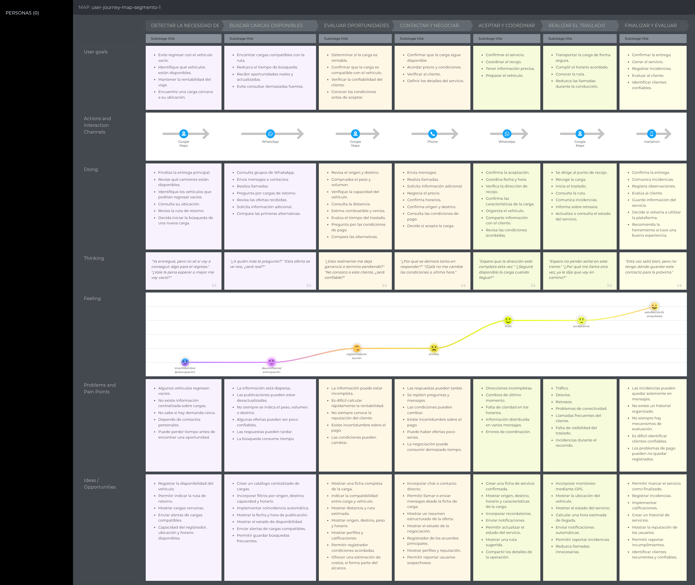
User Journey Map - Juan David Ramos: https://uxpressia.com/w/v8FzI/m/1H5VY
User Persona 2: Valeria Torres
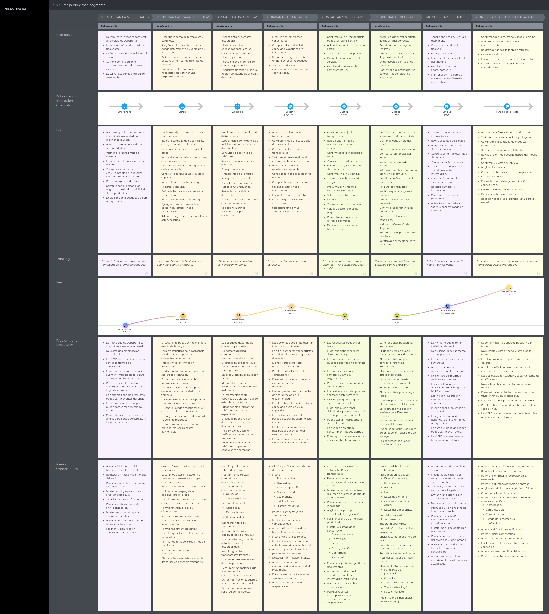
User Journey Map - Valeria Torres: https://uxpressia.com/w/v8FzI/m/rEbN7
2.3.4 Empathy Mapping
Para la elaboración de estos Empathy Maps, el equipo analizó las respuestas y el lenguaje corporal de los usuarios durante las entrevistas. Colocando al User Persona en el centro, mapeamos sus percepciones respondiendo a: ¿Qué está diciendo y haciendo en su día a día?, ¿Qué escucha de sus colegas o clientes?, y ¿Qué ve en su entorno laboral? Posteriormente, identificamos sus Pains (frustraciones por procesos manuales, pérdida de dinero, inseguridad) y sus Gains (lo que esperan lograr y cómo una solución tecnológica podría convencerlos al resolver sus problemas).
User Persona 1: Juan David Ramos
Empathy Map - Juan David Ramos: https://uxpressia.com/w/v8FzI/p/K9mve
User Persona 2: Valeria Torres
Empathy Map - Valeria Torres: https://uxpressia.com/w/v8FzI/p/SQmML
2.4. Big Picture Event Storming
El Big Picture Event Storming es un taller de diseño colaborativo orientado a explorar y comprender el dominio del negocio en su estado actual (As-Is). En esta sesión, el equipo exploró el landscape general del transporte de carga terrestre y la logística para pymes en Lima, identificando los eventos de negocio más representativos, los actores participantes, los sistemas o canales externos utilizados actualmente y, fundamentalmente, los puntos de dolor (pain points) y cuellos de botella operativos que surgen antes de la intervención de una plataforma digital.
A continuación, se presenta el esquema visual del Big Picture Event Storming:
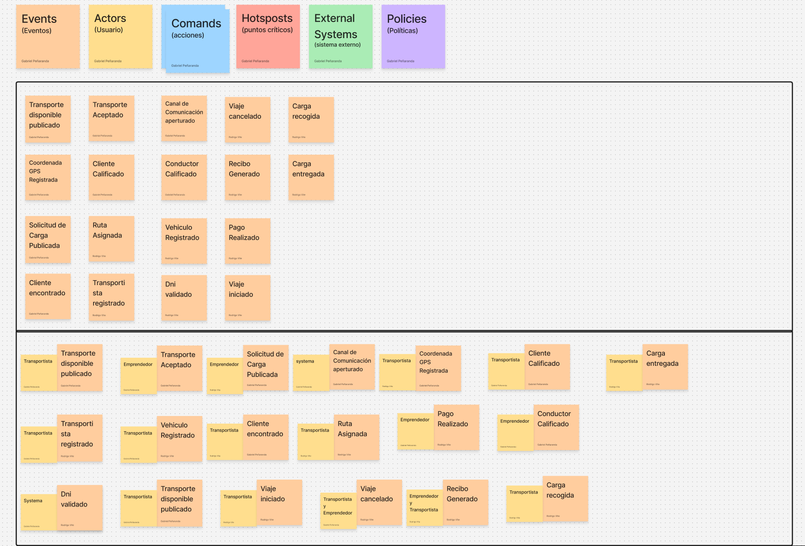
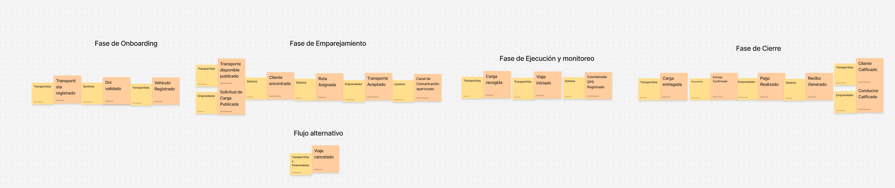
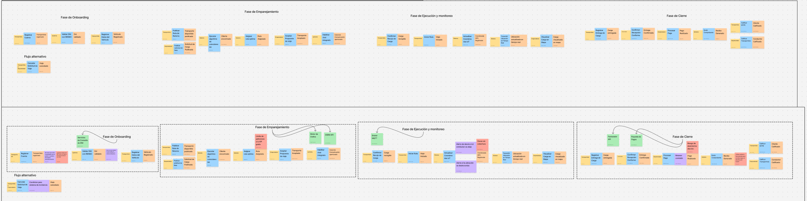
Big Picture Event Storming: https://www.figma.com/board/WxMU6oKF4Vo3Z5UQ5XZrkm/Sin-t%C3%ADtulo?node-id=0-1&t=yjmq4uC9nUQyFJMh-1
Narrativas de Negocio (As-Is)
A partir de la exploración del dominio actual, se han derivado las siguientes narrativas principales que reflejan el funcionamiento operativo cotidiano y los problemas reales que enfrentan los actores involucrados:
Narrativa 1: La Búsqueda Informal y el Retorno Vacío (Perspectiva del Transportista)
Joaquín culmina la descarga de un flete de abarrotes en el Centro de Lima y se estaciona en la vía pública para evaluar su viaje de regreso hacia su base en La Molina. Con el objetivo de no regresar con la tolva vacía y perder dinero en combustible y peajes, abre su teléfono móvil y revisa manualmente múltiples grupos de WhatsApp de transportistas, además de realizar llamadas directas a conocidos y comerciantes habituales. Tras esperar cerca de una hora entre mensajes dispersos, tarifas no estandarizadas y solicitudes incompatibles con la capacidad de su vehículo, Joaquín no logra concretar ningún flete. Frustrado por el tiempo perdido y el tráfico acumulado en la Vía de Evitamiento, enciende el camión y retorna con la unidad vacía, asumiendo el gasto operativo con los ingresos obtenidos únicamente en el viaje de ida.
Narrativa 2: Coordinación Fragmentada e Incertidumbre en el Despacho (Perspectiva de la MYPE)
Jannet administra su emprendimiento de cosméticos en Ate y necesita trasladar urgentemente veinte paquetes de mercadería hacia diversos clientes en distritos vecinos. Al no contar con una flota de reparto propia, recurre a su proveedor de transporte habitual mediante llamadas y mensajes de WhatsApp. Sin embargo, el transportista le indica que sus unidades están ocupadas en otra ruta y no puede atenderla ese día. Ante la premura, Jannet solicita recomendaciones en grupos de comerciantes y contacta a un conductor desconocido. Tras negociar una tarifa de flete de manera informal y sin garantías claras, entrega los paquetes con alta preocupación, debiendo llamar repetidamente al conductor durante la tarde para saber si su mercadería sigue en camino o si ya fue entregada, careciendo de cualquier mecanismo de seguimiento en vivo.
Narrativa 3: Intermediación Abusiva y Riesgos en el Cobro (Fricción en Ruta)
Ariana, transportista independiente en San Juan de Lurigancho, termina un viaje de reparto interurbano y se acerca a una zona de descarga buscando conseguir carga hacia el norte de la ciudad. Un intermediario informal le ofrece conectarla con un comerciante que busca flete inmediato, pero le exige el pago de una comisión injusta solo por compartirle el número telefónico de contacto. Ariana acepta por necesidad de rentabilizar su retorno y se comunica con el cliente, acordando de palabra las condiciones del traslado y pactando un abono del 50% al cargar y el saldo contra entrega. Durante todo el trayecto hacia el punto de destino, Ariana experimenta la incertidumbre de no saber si el cliente cumplirá con cancelar el dinero restante al descargar, arriesgando su tiempo y el desgaste de su furgón en un entorno de alta desconfianza.
Narrativa 4: Retrasos y Falta de Visibilidad en Entregas Críticas (Punto de Dolor de la Distribución)
Almendra, encargada de operaciones en una pyme tecnológica en La Victoria, acumula pedidos de computadoras y repuestos para ser recogidos al finalizar la tarde por una empresa de carga tercerizada, con la promesa comercial de entregarlos a sus clientes finales en menos de 24 horas. Ante una congestión vehicular severa en las avenidas principales de Lima, el transportista toma desvíos imprevistos y se demora más de lo acordado, sin poder comunicarse oportunamente con Almendra por estar al volante. Almendra empieza a recibir llamadas y reclamos de clientes insatisfechos y se ve imposibilitada de darles una respuesta precisa sobre la hora de llegada o la ubicación exacta de los equipos de alto valor, evidenciando una grave falta de trazabilidad y comunicación estructurada en el servicio tradicional.
2.5. Ubiquitous Language
| Term (EN) |
Definición (ES) |
| Carrier (Transportista) |
Conductor independiente o dueño de una flota pequeña/mediana que ofrece espacio de carga disponible, especialmente en su viaje de retorno. Es el usuario del lado de la oferta. |
| Fleet (Flota) |
Conjunto de vehículos (de 1 a 5 unidades, según el perfil predominante) administrados por un mismo transportista. |
| Merchant (Emprendedor/Pyme) |
Dueño o gestor de una micro, pequeña o mediana empresa (comercial, manufacturera o agrícola) que necesita enviar mercadería sin contar con contratos fijos con grandes operadores logísticos. Es el usuario del lado de la demanda. |
| Shipment (Envío/Carga) |
Mercadería publicada por un Merchant que requiere ser trasladada de un punto de origen a un punto de destino dentro de Lima. |
| Empty Backhaul (Flete Vacío) |
Trayecto de retorno que realiza un Carrier sin mercadería a bordo, generando pérdida de rentabilidad (hasta 30%) y mayor huella de carbono. Es el problema central que resuelve Trazza. |
| Available Capacity (Espacio Disponible) |
Capacidad de carga ociosa que un Carrier publica en la plataforma, normalmente correspondiente a un viaje de retorno. |
| Match (Emparejamiento) |
Vinculación automática entre un Shipment publicado por un Merchant y la Available Capacity de un Carrier, generada por el Motor de emparejamiento con IA. |
| Route Optimization (Optimización de Ruteo) |
Cálculo del trayecto más eficiente entre el punto de recojo y el de entrega, mediante algoritmos como Dijkstra, TSP, Backtracking y BFS. |
| Cost Matrix (Matriz de Costos) |
Estructura de datos generada por el motor de optimización que compara distancias, tiempos y costos entre distintas combinaciones de rutas posibles. |
| Tracking (Monitoreo/Trazabilidad) |
Seguimiento en tiempo real de la ubicación y estado de la mercancía durante el trayecto, mediante GPS e integraciones IoT futuras. |
| External Settlement (Liquidación Externa) |
Principio de diseño por el cual Trazza no procesa pagos: toda transacción monetaria entre Carrier y Merchant se gestiona por canales externos a la app. |
3.1. User Stories y Epics
A partir del análisis de las entrevistas y el modelo de negocio, se identifica que la plataforma actúa como un nexo logístico entre Transportistas de Carga Terrestre, quienes enfrentan pérdidas de rentabilidad por fletes de retorno vacíos, y Pequeños y Medianos Emprendedores, que buscan envíos más económicos, seguros y directos.
Para estructurar el desarrollo de esta solución, se han definido grandes iniciativas (Epics) que abarcan desde el pilar fundamental de la gestión de identidad y atracción de usuarios (mediante el Landing Page y la API RESTful), hasta el corazón del negocio (publicación de carga y monitoreo).
A continuación se presenta el desglose de User Stories agrupadas por sus respectivas Epics. Se ha priorizado el flujo básico de registro y autenticación (Login/Register), así como requerimientos técnicos para desarrolladores y de marketing para visitantes, utilizando la estructura de criterios de aceptación Given-When-Then en tercera persona y sin mención a componentes específicos de interfaz.
Epics
| Epic / Story |
ID |
Título |
Descripción |
Criterios de Aceptación |
Relacionado con (Epic ID) |
| Epic |
EP01 |
Gestión de Identidad y Accesos |
Como administrador del sistema quiero gestionar el registro, la validación y la autenticación de usuarios para garantizar que el acceso a la plataforma sea seguro y personalizado según el rol. |
N/A |
- |
| Epic |
EP02 |
Publicación de Viajes y Carga |
Como administrador del sistema quiero que los usuarios puedan publicar viajes de retorno y solicitar envíos para generar coincidencias logísticas (match) en la plataforma. |
N/A |
- |
| Epic |
EP03 |
Búsqueda, Emparejamiento y Negociación (Match) |
Como administrador del sistema quiero que emprendedores y transportistas puedan encontrarse mutuamente y acordar las condiciones del viaje. |
N/A |
- |
| Epic |
EP04 |
Monitoreo en Tiempo Real y Estado de Carga |
Como administrador del sistema quiero que el progreso de cada viaje sea rastreado en tiempo real para brindar seguridad y transparencia a los involucrados. |
N/A |
- |
| Epic |
EP05 |
Reputación y Soporte |
Como administrador del sistema quiero implementar calificaciones y reportes para asegurar un ecosistema confiable y seguro entre los usuarios. |
N/A |
- |
| Epic |
EP06 |
Gestión de Perfil y Flotas |
Como administrador del sistema quiero que los usuarios puedan mantener su información comercial y vehicular actualizada para facilitar mejores coincidencias. |
N/A |
- |
User Stories
| Epic / Story |
ID |
Título |
Descripción |
Criterios de Aceptación |
Relacionado con (Epic ID) |
| Story |
US01 |
Registro de Transportista |
Como transportista de carga terrestre quiero registrar mis datos personales y los de mi vehículo en la plataforma para poder ofrecer mi disponibilidad en rutas de retorno. |
Escenario 1: Registro exitoso
Given que un transportista proporciona datos válidos y no registrados previamente.
When el sistema procesa la solicitud de registro.
Then el sistema crea la cuenta y confirma la operación exitosamente.
Escenario 2: Correo duplicado
Given que un transportista intenta registrarse con un correo ya existente.
When el sistema valida la información.
Then el sistema deniega el registro y notifica que el correo ya se encuentra en uso.
Escenario 3: Datos del vehículo incompletos
Given que un transportista omite la placa o la capacidad de su vehículo.
When el sistema evalúa la solicitud de registro.
Then el sistema detiene el proceso e indica los datos del vehículo que faltan. |
EP01 |
| Story |
US02 |
Registro de Emprendedor |
Como pequeño o mediano emprendedor quiero registrar los datos de mi empresa en la plataforma para poder buscar transportistas disponibles y coordinar envíos de mercadería. |
Escenario 1: Registro exitoso
Given que un emprendedor ingresa información válida de su negocio.
When el sistema procesa la solicitud de creación.
Then el sistema habilita el perfil de emprendedor y confirma el registro.
Escenario 2: Datos incompletos
Given que un emprendedor omite información obligatoria.
When el sistema evalúa la solicitud.
Then el sistema detiene el proceso y requiere que se completen los campos faltantes.
Escenario 3: Correo ya registrado
Given que un emprendedor intenta registrarse con un correo asociado a otra cuenta.
When el sistema valida la información.
Then el sistema deniega el registro y notifica que el correo ya se encuentra en uso. |
EP01 |
| Story |
US03 |
Inicio de Sesión de Usuario |
Como usuario registrado quiero iniciar sesión utilizando mis credenciales para acceder a las funcionalidades correspondientes a mi perfil. |
Escenario 1: Credenciales correctas
Given que un usuario registrado provee su correo y contraseña correctos.
When el sistema valida la autenticidad de los datos.
Then el sistema otorga acceso al entorno privado del usuario.
Escenario 2: Credenciales incorrectas
Given que un usuario registrado ingresa una contraseña errónea.
When el sistema verifica las credenciales.
Then el sistema deniega el acceso y alerta sobre el error de autenticación.
Escenario 3: Intentos fallidos consecutivos
Given que un usuario registrado supera el número máximo permitido de intentos fallidos de autenticación.
When el sistema registra un nuevo intento incorrecto.
Then el sistema bloquea temporalmente el acceso a la cuenta e informa el tiempo de espera. |
EP01 |
| Story |
US04 |
Landing Page: Propuesta para Transportistas |
Como visitante del segmento Transportista quiero visualizar los beneficios de la aplicación en el sitio web estático para comprender cómo me ayuda a rentabilizar mis viajes vacíos. |
Escenario 1: Visualización de beneficios
Given que un visitante del segmento Transportista accede al sitio web estático.
When el visitante navega a la sección dedicada a conductores.
Then el sistema despliega información clara sobre la reducción de fletes vacíos y el aumento de ingresos.
Escenario 2: Invitación al registro
Given que un visitante del segmento Transportista ya revisó los beneficios de la plataforma.
When el visitante manifiesta su intención de unirse.
Then el sistema lo dirige al proceso de registro de transportista. |
EP01 |
| Story |
US05 |
Landing Page: Propuesta para Emprendedores |
Como visitante del segmento Emprendedor quiero identificar cómo la plataforma asegura mis envíos en el sitio web estático para decidir registrarme con total confianza. |
Escenario 1: Identificación de seguridad
Given que un visitante del segmento Emprendedor explora la página de inicio.
When el visitante observa la sección de seguridad y monitoreo.
Then el sistema presenta detalles sobre el rastreo en tiempo real y la calificación de choferes.
Escenario 2: Acceso desde dispositivo móvil
Given que un visitante del segmento Emprendedor accede al sitio web estático desde un teléfono celular.
When el sitio carga el contenido de la propuesta de valor.
Then el sistema adapta la presentación al tamaño de la pantalla y mantiene legible toda la información. |
EP01 |
| Story |
US06 |
Autenticación de Usuarios vía API (RESTful API) |
Como Developer quiero un servicio de autenticación que valide credenciales y entregue un token para proteger de forma segura las rutas privadas de la API. |
Escenario 1: Autenticación exitosa
Given que un Developer envía credenciales válidas al servicio de autenticación.
When la API procesa la verificación en la base de datos.
Then la API responde con un código HTTP 200 OK y entrega un token JWT válido.
Escenario 2: Credenciales inválidas
Given que un Developer envía una contraseña incorrecta.
When la API realiza la validación.
Then la API responde con un código HTTP 401 Unauthorized y un mensaje de error estandarizado.
Escenario 3: Token vencido o ausente
Given que un Developer solicita un recurso privado con un token JWT expirado o sin token.
When la API valida el token de la solicitud.
Then la API rechaza la solicitud con un código HTTP 401 Unauthorized y no expone información del recurso. |
EP01 |
| Story |
US07 |
Registro de Usuarios vía API (RESTful API) |
Como Developer quiero un servicio de registro de nuevos usuarios que cifre las contraseñas antes de almacenarlas para garantizar la seguridad de la información en la base de datos. |
Escenario 1: Cifrado y almacenamiento
Given que un Developer envía un payload JSON válido para registrar un nuevo usuario.
When la API procesa la creación de la entidad.
Then la API cifra la contraseña de forma unidireccional, almacena el usuario y retorna un código HTTP 201 Created.
Escenario 2: Usuario ya existente
Given que un Developer envía un payload con un correo ya registrado.
When la API valida la unicidad del correo.
Then la API no crea el usuario y responde con un código HTTP 409 Conflict y un mensaje de error estandarizado.
Escenario 3: Payload inválido
Given que un Developer envía un payload JSON con campos obligatorios ausentes o con formato incorrecto.
When la API valida la estructura de los datos.
Then la API responde con un código HTTP 400 Bad Request e indica los campos con error. |
EP01 |
| Story |
US08 |
Publicación de Ruta de Retorno |
Como transportista de carga terrestre quiero publicar mi ruta de regreso y la capacidad disponible de mi vehículo para recibir solicitudes de carga compatibles. |
Escenario 1: Publicación exitosa
Given que un transportista autenticado provee un origen, destino y capacidad disponible.
When el sistema recibe la solicitud de publicación.
Then el sistema registra la ruta de retorno y la hace visible para los emparejamientos lógicos del sistema.
Escenario 2: Datos de ruta inválidos
Given que un transportista autenticado indica un origen igual al destino o una capacidad no válida.
When el sistema valida la solicitud de publicación.
Then el sistema rechaza la publicación e informa los datos que deben corregirse. |
EP02 |
| Story |
US09 |
Solicitud de Envío de Mercadería |
Como pequeño o mediano emprendedor quiero solicitar el envío de mis productos especificando peso y destino para encontrar transportistas con espacio libre en dicha ruta. |
Escenario 1: Creación de solicitud
Given que un emprendedor autenticado detalla las características de su mercadería y destino.
When el sistema procesa el requerimiento logístico.
Then el sistema almacena la solicitud e inicia la búsqueda de transportistas compatibles.
Escenario 2: Sin transportistas compatibles
Given que un emprendedor autenticado registró una solicitud sin transportistas disponibles en esa ruta.
When el sistema finaliza la búsqueda inicial.
Then el sistema mantiene la solicitud activa y notifica al emprendedor cuando aparezca una coincidencia. |
EP02 |
| Story |
US10 |
Sugerencias Automáticas de Carga |
Como transportista de carga terrestre quiero recibir sugerencias automáticas de carga compatibles con mi ruta de retorno para no viajar con el flete vacío. |
Escenario 1: Coincidencia encontrada
Given que un transportista tiene una ruta de retorno publicada.
When el sistema identifica una solicitud de envío con origen y destino coincidentes.
Then el sistema notifica al transportista con los detalles de la carga sugerida.
Escenario 2: Sin coincidencias
Given que un transportista tiene una ruta de retorno publicada y no existen solicitudes compatibles.
When el sistema evalúa las solicitudes vigentes.
Then el sistema mantiene la ruta activa en espera y evalúa nuevamente cuando se registre una solicitud nueva. |
EP03 |
| Story |
US11 |
Búsqueda Manual de Transportistas |
Como pequeño emprendedor quiero buscar transportistas disponibles especificando fechas y rutas para elegir la mejor opción. |
Escenario 1: Búsqueda exitosa
Given que un emprendedor ingresa origen y destino como criterios de búsqueda.
When el sistema procesa la búsqueda.
Then el sistema muestra una lista de transportistas con capacidad en esa ruta.
Escenario 2: Búsqueda sin resultados
Given que un emprendedor ingresa una ruta y fecha sin transportistas disponibles.
When el sistema procesa la búsqueda.
Then el sistema informa que no hay resultados y sugiere ampliar el rango de fechas o modificar la ruta. |
EP03 |
| Story |
US12 |
Aceptar Solicitud de Carga |
Como transportista de carga terrestre quiero aceptar una solicitud de carga sugerida para asegurar el viaje de retorno. |
Escenario 1: Aceptación exitosa
Given que un transportista visualiza una sugerencia de carga atractiva.
When el transportista confirma la aceptación.
Then el sistema notifica al emprendedor y cambia el estado de la solicitud a "En Negociación".
Escenario 2: Solicitud ya no disponible
Given que una solicitud fue tomada por otro transportista o cancelada por el emprendedor.
When el transportista intenta aceptarla.
Then el sistema rechaza la aceptación e informa que la solicitud ya no está disponible. |
EP03 |
| Story |
US13 |
Negociación y Propuesta de Tarifa |
Como pequeño emprendedor quiero proponer una tarifa por el envío al transportista para llegar a un acuerdo económico directo. |
Escenario 1: Propuesta enviada
Given que un emprendedor tiene una solicitud en estado "En Negociación".
When el emprendedor envía una propuesta económica.
Then el sistema notifica al transportista para que la acepte o rechace.
Escenario 2: Propuesta aceptada
Given que un transportista recibió una propuesta de tarifa.
When el transportista acepta la propuesta.
Then el sistema registra el acuerdo, cambia el estado de la solicitud a "Acordado" y notifica al emprendedor.
Escenario 3: Propuesta rechazada
Given que un transportista recibió una propuesta de tarifa.
When el transportista rechaza la propuesta o presenta una contrapropuesta.
Then el sistema notifica al emprendedor y mantiene la solicitud en "En Negociación". |
EP03 |
| Story |
US14 |
Consulta de Rutas Disponibles vía API (RESTful API) |
Como Developer quiero un servicio de consulta que devuelva las rutas de retorno disponibles filtradas por origen y destino para mostrar los resultados en la aplicación cliente. |
Escenario 1: Filtro exitoso
Given que un Developer envía una consulta con parámetros de origen y destino válidos.
When la API realiza la búsqueda en la base de datos.
Then la API responde con un código HTTP 200 OK y una lista JSON de rutas coincidentes.
Escenario 2: Sin rutas coincidentes
Given que un Developer envía una consulta con parámetros válidos sin rutas disponibles.
When la API realiza la búsqueda en la base de datos.
Then la API responde con un código HTTP 200 OK y una lista JSON vacía. |
EP03 |
| Story |
US15 |
Visualización de Ubicación en Vivo |
Como pequeño emprendedor quiero ver la ubicación de mi mercadería en tiempo real para tener tranquilidad durante el traslado. |
Escenario 1: Visualización activa
Given que un emprendedor tiene un envío en estado "En Tránsito".
When el emprendedor accede al detalle del envío.
Then el sistema muestra la ubicación actual del camión, actualizada en tiempo real.
Escenario 2: Señal GPS no disponible
Given que un envío está "En Tránsito" y el sistema deja de recibir coordenadas del vehículo.
When el emprendedor accede al detalle del envío.
Then el sistema muestra la última ubicación conocida e informa que la señal se perdió temporalmente. |
EP04 |
| Story |
US16 |
Confirmación de Recojo de Mercadería |
Como transportista de carga terrestre quiero marcar en la aplicación cuando haya recogido la carga para iniciar formalmente el monitoreo del viaje. |
Escenario 1: Inicio de viaje
Given que un transportista se encuentra en el punto de origen con la carga cargada.
When el transportista confirma el recojo.
Then el sistema cambia el estado del envío a "En Tránsito" y notifica al emprendedor.
Escenario 2: Envío no habilitado para recojo
Given que un envío fue cancelado o aún no tiene una tarifa acordada.
When el transportista intenta confirmar el recojo.
Then el sistema deniega la confirmación e informa el estado actual del envío. |
EP04 |
| Story |
US17 |
Confirmación de Entrega |
Como transportista de carga terrestre quiero confirmar que la mercadería ha sido entregada en el destino para finalizar el viaje y habilitar las calificaciones. |
Escenario 1: Fin de viaje
Given que un transportista llega al destino y descarga la mercadería.
When el transportista confirma la entrega.
Then el sistema cambia el estado a "Completado" e invita a ambas partes a calificarse.
Escenario 2: Envío que no está en tránsito
Given que un envío no se encuentra en estado "En Tránsito".
When el transportista intenta confirmar la entrega.
Then el sistema deniega la confirmación y mantiene el estado actual del envío. |
EP04 |
| Story |
US18 |
Registro de Ubicación GPS vía API (RESTful API) |
Como Developer quiero un servicio que reciba y actualice constantemente las coordenadas GPS de un viaje en curso para alimentar el seguimiento en vivo. |
Escenario 1: Actualización exitosa
Given que la aplicación móvil envía latitud y longitud válidas de un viaje en curso.
When la API procesa las coordenadas.
Then la API actualiza la base de datos y responde con un código HTTP 200 OK.
Escenario 2: Coordenadas inválidas
Given que la aplicación móvil envía coordenadas fuera del rango geográfico permitido o con formato incorrecto.
When la API valida los datos recibidos.
Then la API no actualiza la ubicación y responde con un código HTTP 400 Bad Request. |
EP04 |
| Story |
US19 |
Calificación del Transportista |
Como pequeño emprendedor quiero calificar de 1 a 5 estrellas al transportista tras finalizar un viaje para ayudar a construir su reputación en la plataforma. |
Escenario 1: Calificación registrada
Given que un envío acaba de ser marcado como "Completado".
When el emprendedor envía su puntuación y comentario.
Then el sistema suma la calificación al perfil del transportista y confirma la acción.
Escenario 2: Viaje no completado
Given que un envío aún no está en estado "Completado".
When el emprendedor intenta calificar al transportista.
Then el sistema deniega la calificación e informa que solo se puede calificar tras finalizar el viaje. |
EP05 |
| Story |
US20 |
Calificación del Cliente |
Como transportista de carga terrestre quiero calificar al emprendedor (cliente) según su nivel de cumplimiento y trato para alertar a otros conductores. |
Escenario 1: Calificación registrada
Given que un viaje fue "Completado".
When el transportista envía la calificación del cliente.
Then el sistema registra la nota en el perfil del emprendedor.
Escenario 2: Calificación duplicada
Given que el transportista ya calificó al emprendedor por ese viaje.
When el transportista intenta enviar una nueva calificación.
Then el sistema rechaza el envío e informa que el viaje ya fue calificado. |
EP05 |
| Story |
US21 |
Reportar Problemas con la Carga |
Como pequeño emprendedor quiero poder reportar un problema si mi mercadería llega dañada o incompleta para que la plataforma tome acciones de soporte. |
Escenario 1: Reporte enviado
Given que un emprendedor detecta una anomalía en su entrega.
When el emprendedor envía el reporte con la descripción del problema.
Then el sistema genera un ticket de soporte y notifica a los administradores.
Escenario 2: Reporte sin descripción
Given que un emprendedor intenta enviar un reporte sin detallar el problema.
When el sistema valida la información del reporte.
Then el sistema no genera el ticket y solicita completar la descripción. |
EP05 |
| Story |
US22 |
Registro de Calificaciones vía API (RESTful API) |
Como Developer quiero un servicio para registrar las calificaciones entre usuarios y recalcular el promedio general del perfil afectado. |
Escenario 1: Registro y recálculo
Given que un Developer envía un payload válido con la puntuación.
When la API registra la calificación.
Then la API actualiza el promedio del usuario y retorna un código HTTP 201 Created.
Escenario 2: Puntuación fuera de rango
Given que un Developer envía una puntuación menor a 1 o mayor a 5.
When la API valida el payload.
Then la API no registra la calificación y responde con un código HTTP 400 Bad Request. |
EP05 |
| Story |
US23 |
Registro de Nuevo Vehículo |
Como transportista de carga terrestre quiero añadir los datos de un nuevo camión a mi perfil (dimensiones, capacidad) para poder asignarlo a diferentes viajes. |
Escenario 1: Vehículo añadido
Given que un transportista accede a la gestión de su flota.
When el transportista ingresa la placa, modelo y capacidad del camión.
Then el sistema asocia el nuevo vehículo a su cuenta.
Escenario 2: Placa ya registrada
Given que un transportista ingresa una placa que ya existe en la plataforma.
When el sistema valida los datos del vehículo.
Then el sistema rechaza el registro e informa que la placa ya está asociada a otro vehículo. |
EP06 |
| Story |
US24 |
Historial de Envíos |
Como pequeño emprendedor quiero visualizar el historial de mis envíos pasados para llevar un control de mis operaciones logísticas. |
Escenario 1: Visualización de historial
Given que un emprendedor autenticado accede a su perfil.
When el emprendedor solicita ver sus viajes completados.
Then el sistema muestra una lista detallada de envíos pasados y sus costos.
Escenario 2: Sin envíos previos
Given que un emprendedor autenticado aún no tiene viajes completados.
When el emprendedor solicita ver su historial.
Then el sistema informa que no existen envíos registrados. |
EP06 |
| Story |
US25 |
Landing Page: Testimonios de Éxito |
Como visitante del segmento Emprendedor quiero leer testimonios de otros usuarios en el sitio web estático para validar la credibilidad de la plataforma. |
Escenario 1: Carga de testimonios
Given que un visitante navega por el sitio web estático.
When el visitante llega a la sección de testimonios.
Then el sistema despliega reseñas reales de usuarios satisfechos.
Escenario 2: Testimonios no disponibles
Given que aún no existen testimonios publicados.
When el visitante llega a la sección de testimonios.
Then el sistema omite la sección o muestra un mensaje indicando que próximamente habrá opiniones de usuarios. |
EP01 |
| Story |
US26 |
Validación de Identidad (KYC) |
Como administrador del sistema quiero requerir y validar el DNI de los transportistas durante su registro para garantizar un ecosistema seguro y confiable para los emprendedores. |
Escenario 1: Validación exitosa
Given que un transportista sube su documento de identidad.
When el sistema procesa la validación con la pasarela KYC.
Then el sistema otorga la insignia de "DNI Validado" al perfil del transportista.
Escenario 2: Documento no válido
Given que un transportista sube un documento ilegible, vencido o que no coincide con sus datos.
When el sistema procesa la validación con la pasarela KYC.
Then el sistema rechaza la validación, no otorga la insignia y solicita enviar un nuevo documento. |
EP01 |
| Story |
US27 |
Cancelación Temprana de Solicitud |
Como pequeño emprendedor quiero poder cancelar mi solicitud de viaje antes del recojo de mercadería para anular la operación si tengo un imprevisto de última hora. |
Escenario 1: Cancelación procesada
Given que el viaje aún no ha iniciado.
When el emprendedor solicita cancelar la solicitud.
Then el sistema anula el viaje, notifica al transportista y evalúa las políticas de compensación.
Escenario 2: Cancelación no permitida
Given que el envío ya se encuentra en estado "En Tránsito".
When el emprendedor solicita cancelar la solicitud.
Then el sistema deniega la cancelación e informa que el viaje ya fue iniciado. |
EP02 |
| Story |
US28 |
Gestión de Compensación (Lucro Cesante) |
Como transportista de carga terrestre quiero recibir una compensación económica si el cliente cancela un viaje cuando ya me encuentro en ruta, para resarcir los gastos generados (lucro cesante). |
Escenario 1: Cobro de compensación
Given que el transportista está en trayecto al punto de origen y el emprendedor cancela el viaje.
When el sistema procesa la cancelación.
Then el sistema debita una tasa básica al emprendedor y la acredita al transportista.
Escenario 2: Cancelación sin cargo
Given que el transportista aún no inició el trayecto al punto de origen y el emprendedor cancela el viaje.
When el sistema procesa la cancelación.
Then el sistema anula el viaje sin aplicar ninguna tasa y notifica al transportista. |
EP02 |
| Story |
US29 |
Mensajería Integrada (Chat) |
Como pequeño emprendedor quiero disponer de un canal de chat integrado en la plataforma para comunicarme con el transportista emparejado y coordinar rápidamente los pormenores del recojo. |
Escenario 1: Comunicación fluida
Given que el emprendedor tiene una solicitud aceptada por un transportista.
When el emprendedor accede al módulo de chat.
Then el sistema habilita una sala privada de mensajería entre ambos usuarios.
Escenario 2: Chat sin solicitud aceptada
Given que el emprendedor tiene una solicitud que ningún transportista ha aceptado.
When el emprendedor intenta iniciar una conversación.
Then el sistema no habilita la mensajería e informa que debe existir un transportista emparejado. |
EP03 |
| Story |
US30 |
Alerta de Desvío en Ruta |
Como pequeño emprendedor quiero recibir una notificación automática si el camión se desvía más de 2 kilómetros de la ruta planificada para estar alerta ante posibles riesgos o retrasos. |
Escenario 1: Disparo de alerta
Given que un viaje se encuentra en curso.
When el sistema detecta que las coordenadas GPS superan el umbral de desvío de la ruta original.
Then el sistema emite una notificación de advertencia al cliente.
Escenario 2: Desvío dentro del umbral
Given que un viaje se encuentra en curso.
When el sistema detecta que las coordenadas GPS se mantienen dentro del umbral de desvío permitido.
Then el sistema no emite ninguna alerta y continúa el monitoreo. |
EP04 |
| Story |
US31 |
Confirmación de Recepción y Pago |
Como pequeño emprendedor quiero confirmar la recepción conforme de la mercadería desde mi aplicación para validar el servicio y procesar el abono del flete correspondiente. |
Escenario 1: Recepción conforme
Given que el transportista ha marcado la carga como entregada.
When el emprendedor confirma la recepción conforme.
Then el sistema registra la conformidad, procesa el pago y da por finalizado el servicio.
Escenario 2: Recepción con observaciones
Given que el transportista ha marcado la carga como entregada y el emprendedor detecta daños o faltantes.
When el emprendedor indica que la recepción no es conforme.
Then el sistema retiene el pago, deriva el caso al proceso de reporte de problemas y notifica a los administradores. |
EP04 |
3.2. Impact Mapping
El Impact Mapping es una técnica visual y estratégica de planificación que conecta los objetivos del negocio digital con las características del producto de software a través de los actores y los comportamientos esperados. Permite alinear el desarrollo hacia la entrega de valor real, asegurando que cada funcionalidad implementada responda a una meta estratégica clara.
A continuación, se presenta el Impact Map unificado de Trazza, el cual articula los Business Goals (definidos bajo criterios SMART), los actores identificados a partir de los User Personas (Juan David Ramos y Valeria Torres), los impactos esperados en su comportamiento, los entregables (deliverables) de la plataforma y su posterior descomposición en historias de usuario:
Impact Mapping: https://uxpressia.com/w/v8FzI/i/yOY8J
3.3. Product Backlog
A continuación se presenta el Product Backlog del proyecto, ordenado según el valor de negocio que aporta cada funcionalidad. Se ha priorizado el flujo principal de generación de valor (Landing Page, Publicación de Carga, Búsqueda y Emparejamiento) por encima de las tareas estrictamente técnicas o de configuración de perfiles, garantizando así un enfoque centrado en el usuario y en la viabilidad del negocio logístico.
La estimación de esfuerzo se ha realizado utilizando Story Points basados en la serie de Fibonacci (1, 2, 3, 5, 8), considerando la complejidad técnica, la incertidumbre y el esfuerzo requerido para cada User Story.
| # Orden |
User Story Id |
Título |
Descripción |
Story Points |
| 1 |
US04 |
Landing Page: Propuesta para Transportistas |
Como visitante del segmento Transportista quiero visualizar los beneficios de la aplicación en el sitio web estático para comprender cómo me ayuda a rentabilizar mis viajes vacíos. |
2 |
| 2 |
US05 |
Landing Page: Propuesta para Emprendedores |
Como visitante del segmento Emprendedor quiero identificar cómo la plataforma asegura mis envíos en el sitio web estático para decidir registrarme con total confianza. |
2 |
| 3 |
US25 |
Landing Page: Testimonios de Éxito |
Como visitante del segmento Emprendedor quiero leer testimonios de otros usuarios en el sitio web estático para validar la credibilidad de la plataforma. |
2 |
| 4 |
US08 |
Publicación de Ruta de Retorno |
Como transportista de carga terrestre quiero publicar mi ruta de regreso y la capacidad disponible de mi vehículo para recibir solicitudes de carga compatibles. |
5 |
| 5 |
US09 |
Solicitud de Envío de Mercadería |
Como pequeño o mediano emprendedor quiero solicitar el envío de mis productos especificando peso y destino para encontrar transportistas con espacio libre en dicha ruta. |
5 |
| 6 |
US10 |
Sugerencias Automáticas de Carga |
Como transportista de carga terrestre quiero recibir sugerencias automáticas de carga compatibles con mi ruta de retorno para no viajar con el flete vacío. |
5 |
| 7 |
US11 |
Búsqueda Manual de Transportistas |
Como pequeño emprendedor quiero buscar transportistas disponibles especificando fechas y rutas para elegir la mejor opción. |
5 |
| 8 |
US12 |
Aceptar Solicitud de Carga |
Como transportista de carga terrestre quiero aceptar una solicitud de carga sugerida para asegurar el viaje de retorno. |
5 |
| 9 |
US27 |
Cancelación Temprana de Solicitud |
Como pequeño emprendedor quiero poder cancelar mi solicitud de viaje antes del recojo de mercadería para anular la operación si tengo un imprevisto de última hora. |
5 |
| 10 |
US13 |
Negociación y Propuesta de Tarifa |
Como pequeño emprendedor quiero proponer una tarifa por el envío al transportista para llegar a un acuerdo económico directo. |
5 |
| 11 |
US29 |
Mensajería Integrada (Chat) |
Como pequeño emprendedor quiero disponer de un canal de chat integrado en la plataforma para comunicarme con el transportista emparejado y coordinar rápidamente los pormenores del recojo. |
8 |
| 12 |
US15 |
Visualización de Ubicación en Vivo |
Como pequeño emprendedor quiero ver la ubicación de mi mercadería en tiempo real para tener tranquilidad durante el traslado. |
8 |
| 13 |
US16 |
Confirmación de Recojo de Mercadería |
Como transportista de carga terrestre quiero marcar en la aplicación cuando haya recogido la carga para iniciar formalmente el monitoreo del viaje. |
5 |
| 14 |
US17 |
Confirmación de Entrega |
Como transportista de carga terrestre quiero confirmar que la mercadería ha sido entregada en el destino para finalizar el viaje y habilitar las calificaciones. |
5 |
| 15 |
US30 |
Alerta de Desvío en Ruta |
Como pequeño emprendedor quiero recibir una notificación automática si el camión se desvía más de 2 kilómetros de la ruta planificada para estar alerta ante posibles riesgos o retrasos. |
8 |
| 16 |
US31 |
Confirmación de Recepción y Pago |
Como pequeño emprendedor quiero confirmar la recepción conforme de la mercadería desde mi aplicación para validar el servicio y procesar el abono del flete correspondiente. |
8 |
| 17 |
US01 |
Registro de Transportista |
Como transportista de carga terrestre quiero registrar mis datos personales y los de mi vehículo en la plataforma para poder ofrecer mi disponibilidad en rutas de retorno. |
3 |
| 18 |
US02 |
Registro de Emprendedor |
Como pequeño o mediano emprendedor quiero registrar los datos de mi empresa en la plataforma para poder buscar transportistas disponibles y coordinar envíos de mercadería. |
3 |
| 19 |
US03 |
Inicio de Sesión de Usuario |
Como usuario registrado quiero iniciar sesión utilizando mis credenciales para acceder a las funcionalidades correspondientes a mi perfil. |
3 |
| 20 |
US26 |
Validación de Identidad (KYC) |
Como administrador del sistema quiero requerir y validar el DNI de los transportistas durante su registro para garantizar un ecosistema seguro y confiable para los emprendedores. |
8 |
| 21 |
US28 |
Gestión de Compensación (Lucro Cesante) |
Como transportista de carga terrestre quiero recibir una compensación económica si el cliente cancela un viaje cuando ya me encuentro en ruta, para resarcir los gastos generados (lucro cesante). |
8 |
| 22 |
US19 |
Calificación del Transportista |
Como pequeño emprendedor quiero calificar de 1 a 5 estrellas al transportista tras finalizar un viaje para ayudar a construir su reputación en la plataforma. |
2 |
| 23 |
US20 |
Calificación del Cliente |
Como transportista de carga terrestre quiero calificar al emprendedor (cliente) según su nivel de cumplimiento y trato para alertar a otros conductores. |
2 |
| 24 |
US21 |
Reportar Problemas con la Carga |
Como pequeño emprendedor quiero poder reportar un problema si mi mercadería llega dañada o incompleta para que la plataforma tome acciones de soporte. |
2 |
| 25 |
US23 |
Registro de Nuevo Vehículo |
Como transportista de carga terrestre quiero añadir los datos de un nuevo camión a mi perfil (dimensiones, capacidad) para poder asignarlo a diferentes viajes. |
3 |
| 26 |
US24 |
Historial de Envíos |
Como pequeño emprendedor quiero visualizar el historial de mis envíos pasados para llevar un control de mis operaciones logísticas. |
5 |
| 27 |
US06 |
Autenticación de Usuarios vía API (RESTful API) |
Como Developer quiero un servicio de autenticación que valide credenciales y entregue un token para proteger de forma segura las rutas privadas de la API. |
5 |
| 28 |
US07 |
Registro de Usuarios vía API (RESTful API) |
Como Developer quiero un servicio de registro de nuevos usuarios que cifre las contraseñas antes de almacenarlas para garantizar la seguridad de la información en la base de datos. |
5 |
| 29 |
US14 |
Consulta de Rutas Disponibles vía API (RESTful API) |
Como Developer quiero un servicio de consulta que devuelva las rutas de retorno disponibles filtradas por origen y destino para mostrar los resultados en la aplicación cliente. |
5 |
| 30 |
US18 |
Registro de Ubicación GPS vía API (RESTful API) |
Como Developer quiero un servicio que reciba y actualice constantemente las coordenadas GPS de un viaje en curso para alimentar el seguimiento en vivo. |
5 |
| 31 |
US22 |
Registro de Calificaciones vía API (RESTful API) |
Como Developer quiero un servicio para registrar las calificaciones entre usuarios y recalcular el promedio general del perfil afectado. |
5 |
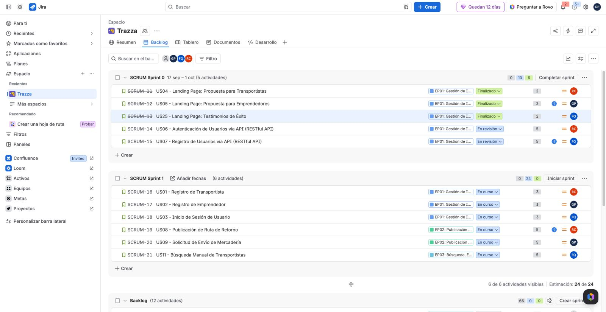
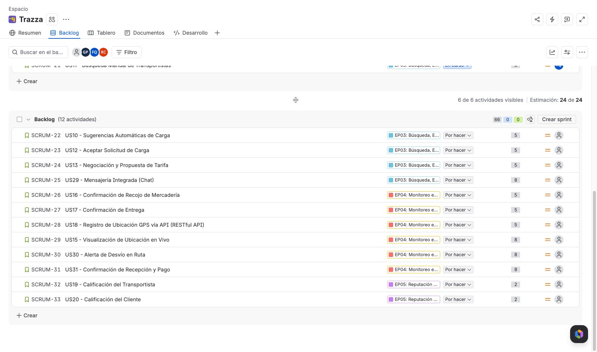
Jira Product Backlog: https://trazza.atlassian.net/jira/software/projects/SCRUM/boards/1/backlog?atlOrigin=eyJpIjoiNGVmMmVmN2MxM2VlNDY4NmI5ODdjZjllY2JlMzY2ZjkiLCJwIjoiaiJ9
4.1. Style Guidelines
En esta sección, como equipo de estudiantes de 5to ciclo de Ingeniería de Software de la UPC, hemos establecido las bases para contar con un repositorio central y organizado de uso común (nuestro Design System). Nuestro objetivo es mantener una presentación visual consistente, profesional y enfocada que transmita fielmente la misión de Trazza: revolucionar y mejorar los sistemas de rutas vehiculares a nivel nacional, brindando seguridad, rentabilidad y eficiencia tanto a transportistas como a emprendedores.
A continuación, detallamos las guías generales y específicas para los entornos web, asegurando que la interfaz refleje la confiabilidad y precisión que nuestro rubro logístico exige.
4.1.1. General Style Guidelines
Nuestras decisiones sobre el estilo general se basan en principios de usabilidad orientados al trabajo operativo y logístico. Los elementos deben transmitir confianza inmediata, dinamismo y eficiencia.
A. Branding y Tono de Comunicación
El branding de Trazza busca establecer una conexión de confianza con usuarios que dependen de nosotros para su sustento económico. Por ello, hemos definido nuestro tono de comunicación con las siguientes dimensiones:
- Ligeramente Formal (Formal vs. Casual): Tratamos temas serios como dinero, rutas seguras y mercadería valiosa, pero manteniendo un vocabulario accesible para usuarios con distintos niveles de alfabetización digital.
- Serio y Profesional (Divertido vs. Serio): La logística no es un juego. La eficiencia de las entregas y la seguridad de las rutas son nuestra mayor promesa de valor.
- Altamente Respetuoso (Respetuoso vs. Irreverente): Valoramos profundamente el esfuerzo de los conductores de camiones en las carreteras y el arduo trabajo de los emprendedores MYPE.
- Sereno y Directo (Entusiasta vs. Sereno): La plataforma debe transmitir calma, control y dar respuestas claras, especialmente en situaciones de estrés (ej. desvíos de ruta, cancelaciones o tráfico).
B. Colors (Paleta de Colores)
Los colores seleccionados reflejan nuestra misión tecnológica: el azul profundo transmite seguridad corporativa y solidez, el verde indica confirmación (viajes completados, rutas óptimas), y los tonos oscuros garantizan una correcta legibilidad en cabinas de camiones (sometidas a luz solar intensa o a viajes nocturnos).
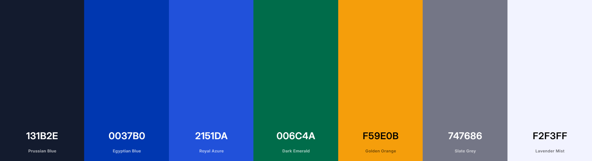
- Primary Colors (Azules y Oscuros):
#131B2E, #434655, #0037B0. Utilizados para la identidad core, menús de navegación, textos principales (evitando el negro absoluto puro) y acciones primarias.
- Secondary & Accent (Verdes y Naranjas):
#006C4A, #85F8C4 (Éxito, tarifas aceptadas y rutas sin desviaciones), #F59E0B (Alertas IoT, espera de carga y desvíos de más de 2km).
- Backgrounds & Neutrals:
#FFFFFF, #F2F3FF, #EAEDFF, #747686. Fondos limpios para separar las zonas del mapa de los paneles de administración y formularios de solicitudes.
C. Typography (Tipografía)
Nuestra tipografía principal es Plus Jakarta Sans. Es una fuente geométrica, moderna y extremadamente nítida, ideal para facilitar el escaneo rápido de datos críticos como coordenadas GPS, dimensiones de camiones, placas y montos de dinero.
Plus Jakarta Sans
Títulos y Encabezados (H1): ExtraBold (800) | Tamaño: 48px | Line-height: 60px | Letter-spacing: -1.2px
Cuerpo de texto: Regular (400) | Tamaño: 16px | Interlineado relajado para legibilidad en listas de requerimientos y chats de coordinación.
D. Spacing y Geometría
Hemos implementado un sistema de espaciado basado en el múltiplo de 8px (8, 16, 24, 32, 48, etc.). Esta escala matemática otorga un ritmo visual organizado, emulando la precisión de un sistema de almacenes y rutas milimétricas. Los Border-radius de botones y tarjetas interactivas se han fijado en 8px para dar una apariencia moderna pero estructurada y firme.
4.1.2. Web Style Guidelines
El entorno web de Trazza está concebido primariamente para el segmento Emprendedor (MYPE), quien accederá desde un escritorio o tablet en su tienda/almacén para realizar búsquedas, despachar carga y monitorear el mapa en tiempo real de múltiples camiones a la vez.
- Layout y Grid Responsivo: Empleamos una grilla fluida (Flexbox y CSS Grid) de 12 columnas. Para las vistas de monitoreo, el componente del mapa interactivo ocupa proporciones de
7/12 o 8/12 del ancho total de la pantalla, dando la jerarquía visual necesaria al core del sistema (el seguimiento satelital de la ruta vehicular).
- Jerarquía y Profundidad (Sombras): Para los contenedores de tarjetas de envíos activos se utiliza una sombra paralela muy sutil (ej.
box-shadow: 0 4px 12px rgba(19, 27, 46, 0.08)). Esto permite "elevar" las tarjetas de información sobre el fondo grisáceo pálido (#F2F3FF), guiando el ojo del usuario hacia las tareas pendientes o en negociación sin sobrecargar la vista.
- Interacción y Feedback (Hover/Active states): Dado que coordinar fletes implica compromisos económicos, las acciones de usuario están altamente retroalimentadas. Los botones primarios (ej. "Aceptar Cotización") transicionan suavemente del azul base (
#0037B0) al azul brillante (#2151DA), y utilizan punteros claros para confirmar la affordance antes de realizar cualquier cambio irreversible en la base de datos de rutas.
En esta sección se definen las decisiones y fundamentos que orientan la organización del contenido dentro de las experiencias web de Trazza, tanto en el Landing Page como en la Web Application. El objetivo principal es facilitar la adaptación de los usuarios, como transportistas independientes y emprendedores MYPE, permitiéndoles acceder de manera rápida y sencilla a la información de sus rutas, subastas de carga, telemetría y liquidaciones. Para ello, se plantea una estructuración lógica basada en sistemas de organización, etiquetado, búsqueda y navegación, que optimizan la experiencia de uso y reducen el esfuerzo cognitivo.
4.2.1. Organization Systems.
Para la interfaz principal de Trazza, tanto en el dashboard web como en su versión móvil, se ha optado por un sistema de organización que prioriza el acceso rápido a la información crítica de la operación logística. Dado que la plataforma está orientada a la optimización de fletes de retorno y la reducción de pérdidas, se busca que transportistas y emprendedores puedan comprender de forma inmediata el estado general del sistema y tomar decisiones de emparejamiento con el menor esfuerzo posible.
Se adopta una organización jerárquica, ya que permite estructurar la información según su nivel de importancia e inmediatez. Este enfoque facilita que la capa superior muestre métricas clave (como rutas frecuentes activas, retornos programados o tasa de ocupación), mientras que los niveles inferiores agrupan información detallada como corredores habituales, matches sugeridos o el historial de liquidaciones. Complementariamente, se emplea una organización secuencial en procesos críticos que requieren una guía paso a paso, como la publicación de capacidad ociosa, la publicación de un shipment o el wireflow de 8 estados del carrier.
En cuanto a la categorización del contenido, el sistema agrupa la información en función de objetos de negocio y criterios específicos mediante las siguientes modalidades:
| Criterio de Organización |
Aplicación en Trazza |
| Jerárquica (Visual hierarchy) |
Métricas clave e indicadores de rendimiento ubicados en la capa superior del Panel de Control por encima del detalle operativo. |
| Secuencial (Step-by-step) |
Wireflow de publicación de retorno, publicación de envío (Shipment) y confirmación de match. |
| Matricial |
Tabla comparativa de soluciones en el Landing Page cruzando dimensiones frente a la competencia. |
| Cronológica |
Historial de matches completados, timeline de retornos programados y tracking en tiempo real del trayecto sobre el mapa. |
| Por audiencia (Rol) |
Vistas diferenciadas para Carrier y Merchant mediante el selector de modo (Modo Transportista / Modo Emprendedor) en la barra superior. |
4.2.2. Labeling Systems.
Esta sección se centra en la forma en que se nombran los grupos de información dentro de Trazza. El objetivo es que las etiquetas sean precisas, consistentes y alineadas al tono de comunicación serio, respetuoso y directo definido en el Style Guide (sección 4.1). En un contexto logístico, es fundamental que el usuario comprenda de inmediato el significado de cada sección para evitar errores en las operaciones de carga.
Se han priorizado etiquetas claras y estandarizadas en español, reservando en inglés únicamente los términos del Ubiquitous Language del dominio (Carrier, Merchant, Shipment, Match) cuando se referencian internamente en el diseño técnico. A continuación se detallan las etiquetas principales:
Landing Page
| Etiqueta |
Descripción / Asociación en la mente del visitante |
| Inicio |
Sección principal de bienvenida y acceso a la propuesta de valor. |
| Cómo funciona |
Explicación del flujo de 3 pasos (publicación, matching automático, aceptación y monitoreo). |
| Beneficios |
Ventajas segmentadas por rol (sin comisión, motor de IA, monitoreo IoT/GPS, calificación bilateral). |
| Testimonios |
Validación social con casos reales de carriers y merchants. |
| Contacto |
Vía de comunicación directa con el equipo Trazza. |
| Soy Transportista / Soy Emprendedor |
Par de CTAs que segmentan al visitante y dirigen a su flujo correspondiente en la Web Application. |
| Etiqueta |
Asociación en la mente del usuario |
| Panel de Control |
Vista general de indicadores y estado de la operación activa. |
| Rutas y Retornos |
Gestión de corredores habituales y programación de retornos vacíos. |
| Subastas de Carga |
Mercado spot de lotes disponibles para pujar o consolidar. |
| Telemetría en Vivo |
Seguimiento GPS/IoT del viaje en curso y alertas de desvío. |
| Liquidaciones y Pagos |
Registro y trazabilidad de los montos acordados externamente (External Settlement). |
| Métricas de Flota |
Indicadores agregados de desempeño, ahorro de combustible y sostenibilidad. |
Las etiquetas de la navegación principal no exceden de dos a tres palabras, manteniéndose simples y fáciles de escanear tanto en el sidebar de escritorio como en el menú colapsable de la versión Mobile Web.
En esta sección se definen los SEO Tags y Meta Tags que serán implementados en las principales páginas de la experiencia de Trazza, tanto en el Landing Page como en la Web Application. Estos elementos permiten mejorar el posicionamiento del producto en motores de búsqueda y facilitar su descubrimiento por parte de transportistas independientes, dueños de flotas y emprendedores MYPE.
Landing Page
| Elemento |
Valor |
| Title |
Trazza | Conecta tus Retornos Vacíos con Carga Real en Lima |
| Meta Description |
Plataforma logística que conecta transportistas con capacidad ociosa y emprendedores que necesitan enviar carga en Lima, mediante un motor de emparejamiento con IA, sin comisiones por transacción. |
| Meta Keywords |
fletes vacíos Lima, transporte de carga terrestre, matchmaking logístico, optimización de rutas, transportistas independientes, envíos para pymes, trazabilidad GPS |
| Author |
Equipo StackRoot - UPC Ingeniería de Software |
Web Application
| Elemento |
Valor |
| Title |
Panel de Control | Trazza |
| Meta Description |
Gestiona tus rutas de retorno, encuentra cargas compatibles y monitorea tus envíos en tiempo real con Trazza. |
| Meta Keywords |
panel transportista, gestión de retornos, matching de carga, monitoreo GPS, dashboard logístico |
| Author |
Equipo StackRoot - UPC Ingeniería de Software |
4.2.4. Searching Systems.
En esta sección se describen los mecanismos de búsqueda que ofrece Trazza para ayudar al usuario a encontrar información dentro del sistema, evitando que se sienta perdido frente al volumen de lotes, rutas y liquidaciones generadas en la operación diaria.
Opciones de búsqueda
- Búsqueda de lotes de carga disponibles (Subastas de Carga) por código de lote, cliente o zona.
- Búsqueda de corredores y rutas habituales registradas por el carrier.
- Búsqueda dentro del historial de liquidaciones por código, cliente o distrito.
- Búsqueda de carriers disponibles desde la perspectiva del merchant.
Filtros de búsqueda
| Filtro |
Descripción |
| Corredor / Zona |
Permite acotar resultados a un corredor logístico específico (ej. Corredor Sur, Gamarra/Textil). |
| Tipo de carga |
Filtra por naturaleza de la mercancía (alimentos, carga frágil, textiles, etc.). |
| Estado |
Distingue entre lotes activos, adjudicados, liquidados o en custodia. |
| Tiempo restante |
Ordena las subastas o retornos por cercanía de cierre. |
| Fecha / Periodo |
Acota el historial de retornos o liquidaciones a un rango de tiempo específico. |
Presentación de resultados y características
- Los resultados se muestran en tarjetas (cards) o filas de tabla, ordenadas por defecto por relevancia (menor desvío y mayor coincidencia con el Motor de IA).
- Cada resultado incluye información mínima esencial para decidir sin abrir el detalle: ruta (origen → destino), volumen/peso, distancia estimada y ganancia neta sugerida.
- Se utilizan chips e indicadores visuales de color para diferenciar estados críticos (urgente, en curso, completado).
- El sistema permite búsquedas rápidas dentro de cada módulo, reduciendo la sobrecarga de información y facilitando la identificación de oportunidades con ventanas de tiempo crítico.
4.2.5. Navigation Systems.
En esta sección se describen las acciones y técnicas de navegación que permiten guiar a los usuarios a través del Landing Page y la Web Application de Trazza, facilitando el cumplimiento de sus objetivos e interacción satisfactoria con el producto.
Tipos de navegación
| Tipo |
Descripción |
| Navegación global |
Menú principal del Landing Page y rutas de entrada por segmento (Soy Transportista / Soy Emprendedor). |
| Navegación local (Sidebar) |
Menú lateral fijo de la Web Application con acceso directo a Panel de Control, Rutas y Retornos, Subastas de Carga, Telemetría en Vivo, Liquidaciones y Pagos, y Métricas de Flota. |
| Navegación jerárquica (Breadcrumb) |
Ruta de migas de pan que ubica al usuario dentro del flujo activo (ej. Inicio > Envíos Activos > En Ruta GPS #TRZ-9104). |
| Navegación contextual |
Acciones disponibles según el estado del elemento (ej. "Aceptar Carga Inmediata", "Confirmar Entrega y Descarga en Destino"). |
| Navegación por rol |
Selector superior (Modo Transportista / Modo Emprendedor) que reconfigura el contenido del sidebar y panel de control. |
Recorrido del usuario
- En el Landing Page: Inicio → Cómo funciona → Beneficios → Tabla comparativa / Validación de mercado → Selección de segmento (CTA) → Registro en la Web Application.
- En la Web Application (Carrier): Auth Gateway → Panel de Control → Publicar Capacidad → Match Results → Inspección de carga → Telemetría en Vivo → Cierre de servicio → Auditoría/Historial.
- En la Web Application (Merchant): Auth Gateway → Panel de Control → Publicación de Shipment → Revisión de ofertas disponibles → Seguimiento del envío → Confirmación de entrega.
Características del sistema
- Permite una navegación clara y estructurada, manteniendo consistencia entre el Landing Page y la Web Application mediante redirecciones directas de los CTAs.
- Facilita el acceso directo a los módulos principales mediante un sidebar persistente, sin superar un nivel de profundidad para las funciones críticas.
- Reduce la cantidad de pasos necesarios para publicar capacidad o aceptar cargas sugeridas por el motor de IA.
- Se adapta de forma fluida a diferentes dispositivos, desde pantallas de escritorio de 1440px hasta layouts de una sola columna en dispositivos móviles de 390px.
4.3. Landing Page UI Design.
En esta sección se presenta la propuesta de diseño de interfaz de usuario para el landing page de Trazza en sus versiones desktop y mobile. El objetivo es materializar las decisiones de arquitectura de la información y los lineamientos visuales en una experiencia digital clara, estructurada y orientada a resolver la problemática de los fletes vacíos en Lima Metropolitana.
A través de este diseño, se busca captar la atención de nuestros segmentos objetivo y guiarlos de manera progresiva desde el primer impacto visual hasta la conversión final, asegurando una interacción intuitiva en cada etapa del recorrido.
4.3.1. Landing Page Wireframe.
Explicación para Desktop
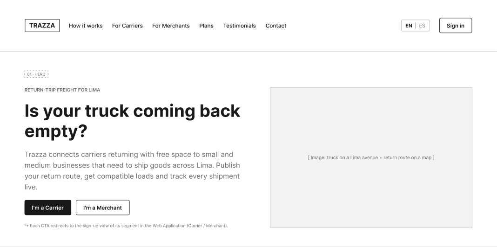
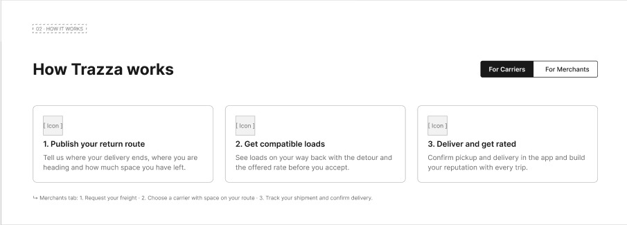
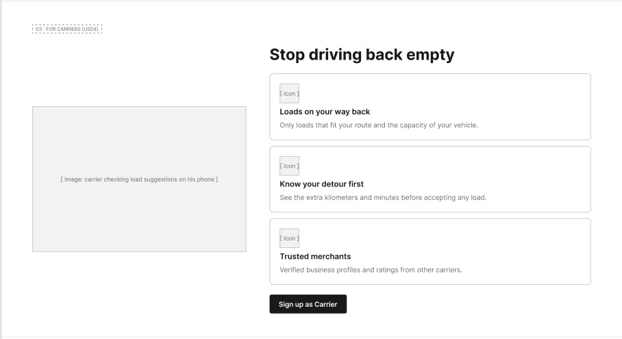
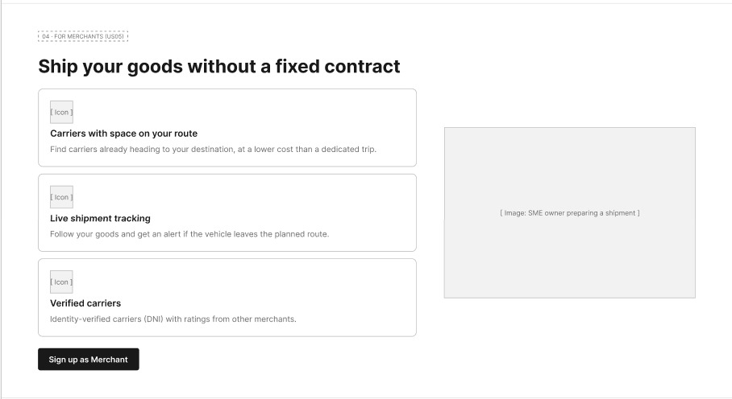
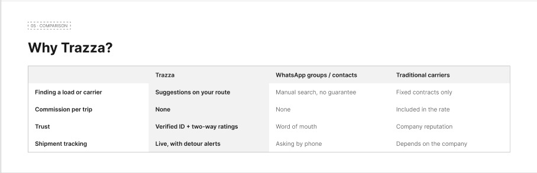
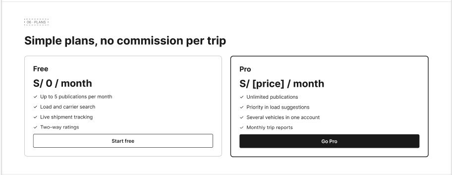
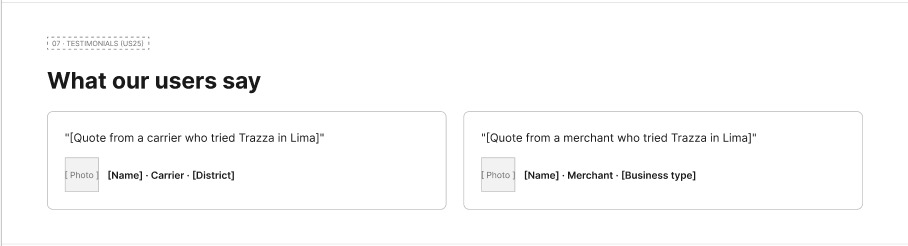
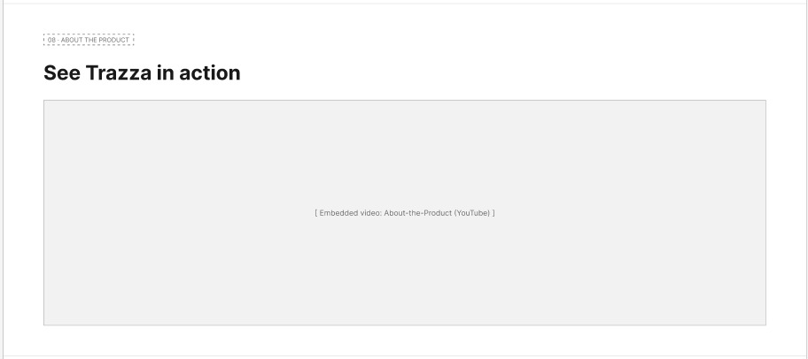
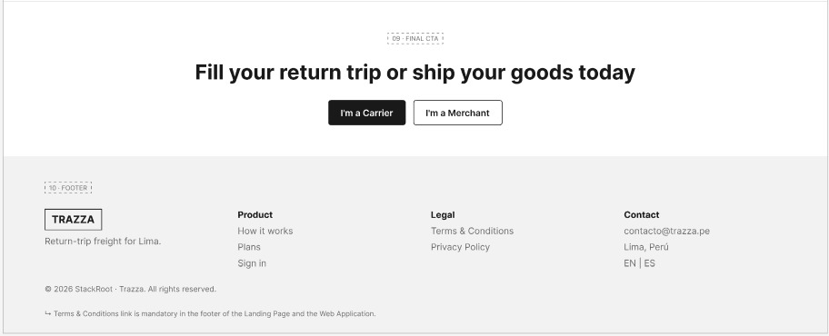
El diseño esquemático de la versión de escritorio está estructurado para guiar al usuario a través de un recorrido ordenado y persuasivo. Al abrir la página, se muestra una barra superior con el logotipo de Trazza, enlaces directos a las secciones principales y dos botones de llamada a la acción segmentados para transportistas y emprendedores. En el bloque principal se ubica el título enfocado en la logística inversa y la reducción de pérdidas operativas, junto con un espacio reservado para visualizar la ruta y el mapa.
A medida que el usuario baja en la página, encuentra la sección de funcionamiento en tres pasos detallados, seguida de dos bloques de beneficios segmentados por rol: uno dirigido a emprendedores (merchants), que destaca el ahorro en envíos y la trazabilidad de su carga, y otro dirigido a transportistas (carriers), que resalta el aprovechamiento de los retornos vacíos, el motor de IA y el monitoreo por GPS. Más abajo se incluye una tabla comparativa frente a los métodos tradicionales e informales, la sección de planes con las alternativas de suscripción disponibles y las tarjetas con casos de éxito de usuarios reales en Lima. Finalmente, la página presenta un bloque reservado para el video demostrativo del servicio y cierra con un pie de página corporativo que reúne los enlaces legales, de soporte y contacto.
Explicación para Mobile
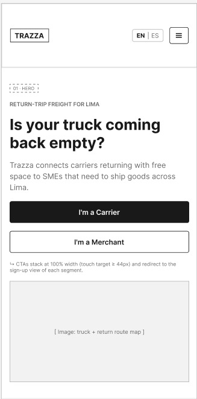
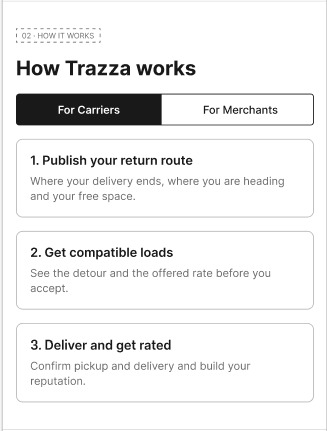
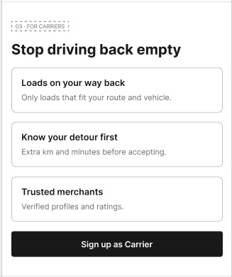
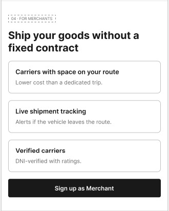
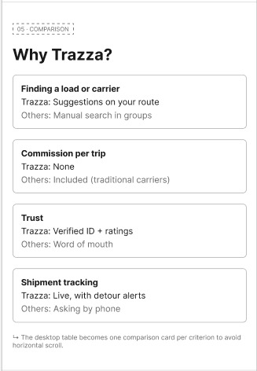
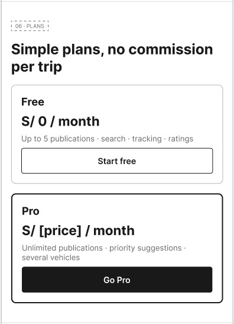
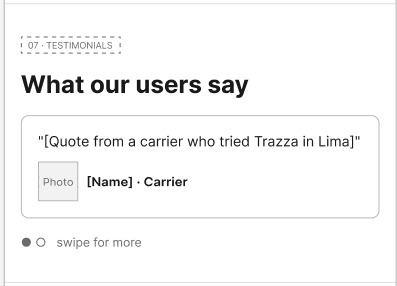
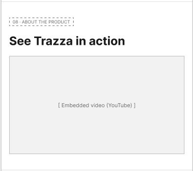
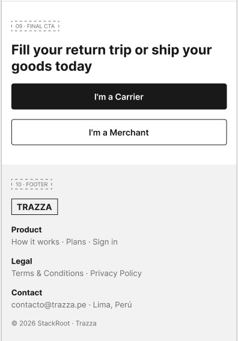
El wireframe de la versión móvil conserva el mismo orden de contenidos que la versión de escritorio, pero lo reorganiza en un layout de una sola columna pensado para pantallas de 390px. La barra de navegación se resume en el logotipo y un menú colapsable, mientras que los botones de llamada a la acción para transportistas y emprendedores se apilan verticalmente para facilitar su pulsación. Los pasos de funcionamiento, los bloques de beneficios para merchants y carriers, la tabla comparativa, los planes y los testimonios se transforman en tarjetas apiladas que se recorren con un desplazamiento vertical continuo, terminando con el espacio del video y un pie de página compacto.
4.3.2. Landing Page Mock-up.
Explicación para Desktop
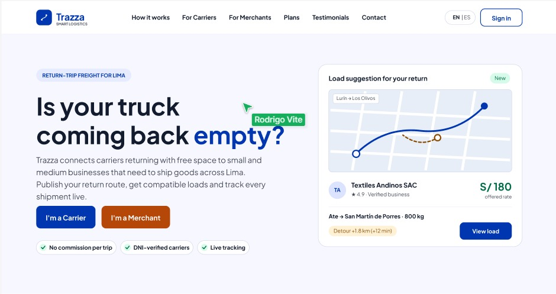
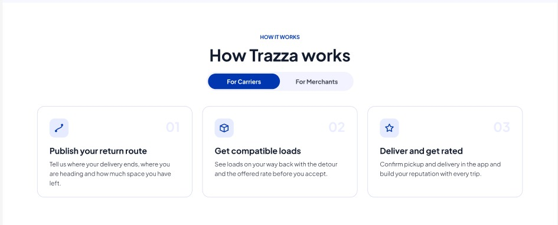
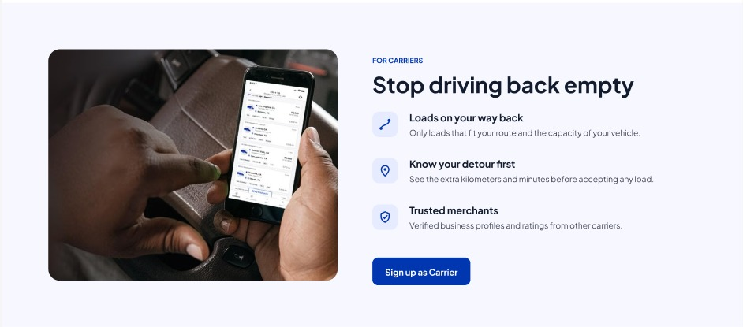
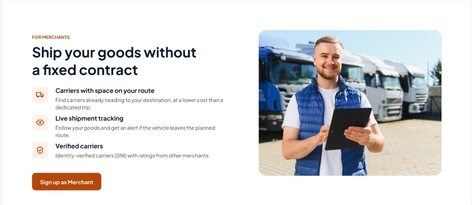
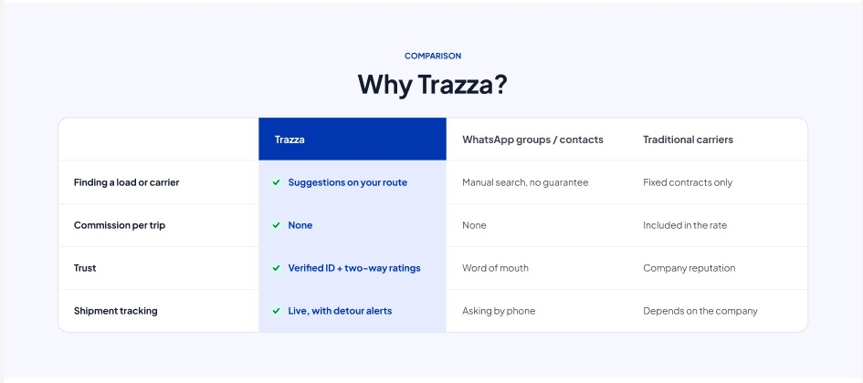
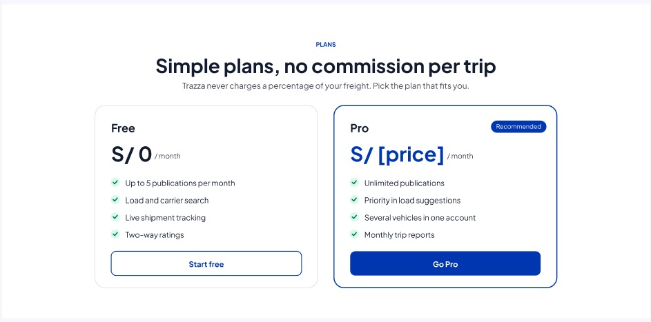
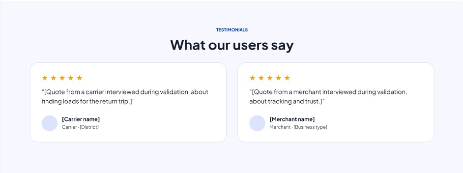
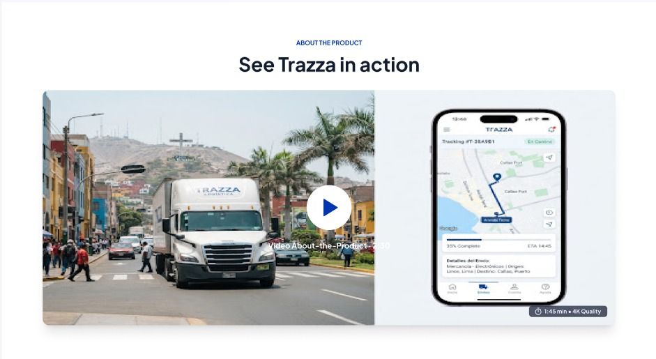
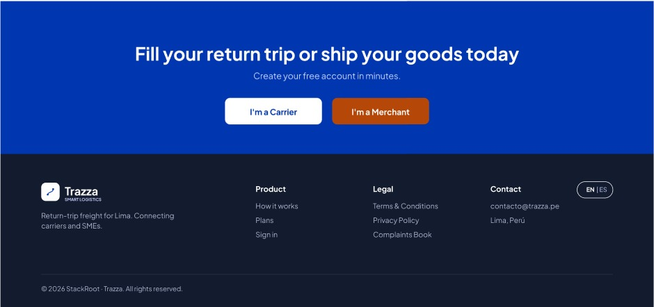
El diseño visual de la landing page aplica los lineamientos del Design System de Trazza, utilizando la paleta de colores corporativa y una tipografía limpia y legible. La interfaz inicia con el bloque principal que integra un panel interactivo de rastreo en tiempo real, acompañado de los accesos rápidos y métricas de confianza que respaldan la propuesta de valor de la plataforma.
En las siguientes secciones se muestran de forma visual el flujo operativo en tres pasos y los beneficios diferenciados para emprendedores y transportistas, cada uno con iconografía y tarjetas propias que refuerzan la segmentación por rol. A continuación se presentan la tabla comparativa de mercado con sus respectivos contrastes, la sección de planes con las características de cada alternativa y las opiniones de transportistas y emprendedores. El recorrido finaliza con un bloque con la demostración en video del motor de emparejamiento y el pie de página institucional, asegurando una experiencia profesional y orientada por completo a la conversión.
Explicación para Mobile
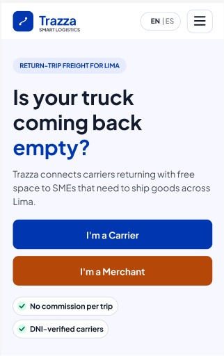
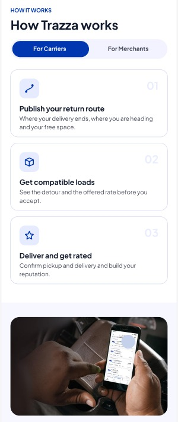
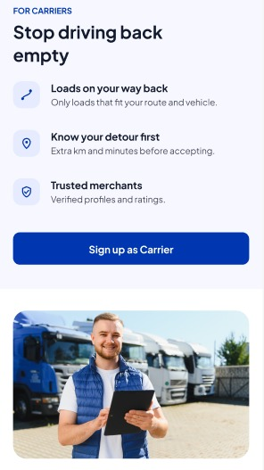
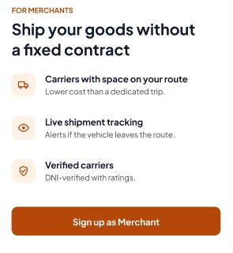
La adaptación móvil de los mockups reorganiza la estructura en una interfaz fluida a una sola columna, priorizando elementos táctiles de fácil acceso, menús desplegables optimizados y tarjetas compactas que garantizan una lectura ágil para transportistas y emprendedores directamente desde sus smartphones. Los bloques de beneficios por rol, la tabla comparativa y los planes se presentan en tarjetas verticales que mantienen la jerarquía visual de la versión de escritorio sin sacrificar legibilidad.
4.4. Web Applications UX/UI Design.
El diseño de la experiencia de usuario (UX) y de la interfaz (UI) de la Web Application de Trazza se ha centrado en tareas cortas y frecuentes. El transportista (Carrier) utiliza la aplicación principalmente desde su celular, entre una entrega y otra, para publicar su ruta de retorno y conseguir una carga compatible; el emprendedor MYPE (Merchant) la utiliza desde la computadora de su negocio o desde el celular para solicitar fletes, elegir un transportista confiable y seguir su envío. Por ello, cada vista tiene una sola acción principal claramente visible, la información necesaria para decidir (desvío, tarifa ofrecida y reputación) aparece sin necesidad de abrir el detalle, y el estado de cada viaje o envío se comunica mediante un stepper (Matched -> Picked up -> In transit -> Delivered).
La UI se basa en Material Design y se implementa con PrimeVue, aplicando el Design System de la startup definido en la sección 4.1: tipografía Plus Jakarta Sans, color primario #0037B0, texto #131B2E, verde #006C4A para estados completados y tarifas, y ámbar para alertas de desvío. La experiencia es responsive (Desktop 1280 px y Mobile 390 px), el idioma por defecto es inglés con soporte para español latinoamericano (i18n), y los estados nunca se comunican solo con color, sino también con texto e íconos (a11y).
Los diseños se organizan según los User Goals de los dos User Personas:
| User Goal |
User Persona |
User Stories relacionadas |
| UG0. Acceder a la plataforma (registro e inicio de sesión) |
Juan David Ramos (Carrier) / Valeria Torres (Merchant) |
US01, US02, US03 |
| UG1. Publicar una ruta de retorno y asegurar una carga compatible |
Juan David Ramos (Carrier) |
US08, US10, US12, US13 |
| UG2. Ejecutar un viaje desde el recojo hasta la entrega |
Juan David Ramos (Carrier) |
US16, US17, US18, US20, US24 |
| UG3. Solicitar un flete y cerrar un acuerdo con un transportista |
Valeria Torres (Merchant) |
US09, US11, US13 |
| UG4. Seguir un envío y confirmar su entrega |
Valeria Torres (Merchant) |
US15, US19, US21, US29, US30, US31 |
| UG5. Gestionar vehículos y suscripción |
Ambos |
US23, Plan & Billing |
4.4.1. Web Applications Wireframes.
En esta sección se presentan los wireframes de la Web Application de Trazza para Desktop Web Browser (1280 px) y Mobile Web Browser (390 px), elaborados en Figma. Estos modelos de baja fidelidad establecen la arquitectura de la información, la jerarquía visual y la ubicación de las acciones principales de cada vista, sin la distracción del color ni de los elementos gráficos finales. Se incluyen también los estados alternativos (errores de validación, estados vacíos y diálogos de advertencia), que luego se utilizan en los wireflows y user flows. En la versión mobile, el sidebar se reemplaza por un menú tipo drawer, los formularios pasan a una sola columna, las tablas se convierten en cards, los diálogos se muestran como bottom sheets y las acciones principales ocupan todo el ancho con un área táctil mínima de 44 px.
Permitir que transportistas y emprendedores se registren eligiendo su rol e inicien sesión de forma segura.
La arquitectura de información sigue un modelo lineal que guía al usuario paso a paso. En el registro, el rol (Carrier o Merchant) aparece primero y viene preseleccionado desde el CTA del Landing Page ("I'm a Carrier" / "I'm a Merchant"), de modo que la experiencia es consistente entre ambos productos. Los campos obligatorios se marcan con asterisco, y los errores se muestran debajo del campo con ícono y texto, sin depender solo del color.
Pantallas de flujo
- Sign in: formulario de correo y contraseña, con enlace para recuperar la contraseña y acceso al registro de cada segmento.
- Sign up: selección del rol, datos personales, DNI (Carrier) o RUC (Merchant), contraseña y aceptación de los Terms & Conditions.
- Unhappy path: correo ya registrado, con el mensaje de error debajo del campo.
Desktop
Mobile
User Goal 1: Publicar una ruta de retorno y asegurar una carga compatible
Permitir que el transportista publique su viaje de regreso y encuentre una carga que encaje con su ruta y su capacidad, para no regresar vacío.
El Dashboard del transportista prioriza su próximo viaje de retorno y las nuevas sugerencias de carga; la acción principal "Publish return route" está siempre visible. El formulario de publicación sigue un orden secuencial (origen -> destino -> horario -> vehículo -> capacidad -> desvío máximo) que refleja la forma en que el transportista piensa su viaje. En Load Suggestions se aplica el principio de proximidad: cada card agrupa ruta, peso, desvío y tarifa ofrecida, de modo que el usuario puede decidir sin abrir el detalle. En el detalle de la carga, el panel de decisión (aceptar, contraofertar o rechazar) se diferencia con un borde destacado, y el teléfono del emprendedor solo se muestra después de confirmar el match, para que el acuerdo se mantenga dentro de Trazza.
Pantallas de flujo
- Carrier Dashboard: resumen con KPIs, próximo viaje de retorno y nuevas sugerencias de carga.
- Publish Return Route: formulario de la ruta de retorno con vista previa del recorrido.
- Publish Return Route - error: la capacidad ingresada supera la del vehículo; error en línea y botón deshabilitado.
- Load Suggestions: cargas compatibles ordenadas por menor desvío, junto al mapa.
- Load Suggestions - empty state: no hay cargas compatibles; se invita a editar la ruta y se notificará después.
- Load Detail and Offer: detalle de la carga, reputación del emprendedor, desvío y tarifa; opción de aceptar o contraofertar.
- Load Detail - offer sent: nuevo estado tras aceptar, a la espera de la confirmación del emprendedor.
Desktop
Mobile
User Goal 2: Ejecutar un viaje desde el recojo hasta la entrega
Permitir que el transportista confirme el recojo y la entrega desde la aplicación, para que el emprendedor pueda seguir el viaje y el transportista construya su reputación.
La vista Active Trip se organiza alrededor de un stepper de cuatro estados, y en cada estado existe una sola acción principal ("Confirm pickup" o "Confirm delivery"), lo que reduce la carga cognitiva mientras el transportista está en ruta. El mapa ocupa la mayor parte de la pantalla y el panel lateral muestra solo la información del siguiente punto. Para prevenir errores, si el transportista confirma la entrega lejos del destino, el sistema muestra una advertencia antes de registrar la acción. Al finalizar, un diálogo permite calificar al emprendedor una sola vez por viaje.
Pantallas de flujo
- Active Trip - matched: viaje confirmado; la acción principal es "Confirm pickup".
- Active Trip - in transit: ubicación compartida desde el celular, hora estimada de llegada y "Confirm delivery".
- Active Trip - far from destination: advertencia cuando el transportista está a más de 1 km del punto de entrega.
- Rate Merchant: diálogo para calificar al emprendedor (1 a 5 estrellas, etiquetas y comentario).
- Trip History: historial cronológico de viajes con búsqueda y filtros por fecha y estado.
Desktop
Mobile
User Goal 3: Solicitar un flete y cerrar un acuerdo con un transportista
Permitir que el emprendedor publique su solicitud de flete, encuentre transportistas que ya van hacia su destino y acuerde la tarifa dentro de la plataforma.
El Dashboard del emprendedor destaca el envío en tránsito y las solicitudes abiertas, con la acción principal "New freight request". El formulario agrupa la información en bloques (direcciones, horario, carga y tarifa opcional) y valida en línea los campos obligatorios. En Find Carriers, cada transportista se presenta con su calificación, verificación de DNI, capacidad libre y el desvío que implica su carga. La vista Offers centraliza las respuestas de los transportistas en una tabla con estados (Accepted, Counteroffer, Pending), reemplazando la coordinación por WhatsApp con oferta y contraoferta dentro de Trazza.
Pantallas de flujo
- Merchant Dashboard: envío en tránsito, KPIs y solicitudes de flete abiertas.
- New Freight Request: formulario de la solicitud con mapa y resumen.
- New Freight Request - error: campo obligatorio vacío; la solicitud no se publica.
- Find Carriers: transportistas con espacio libre en la ruta, con filtros por vehículo, capacidad y calificación.
- Offers: ofertas y contraofertas de cada transportista, con panel para contraofertar.
- Offers - match confirmed: nuevo estado tras confirmar el match; las demás ofertas se cierran.
Desktop
Mobile
User Goal 4: Seguir un envío y confirmar su entrega
Permitir que el emprendedor siga su envío en tiempo real, reciba alertas si el vehículo se desvía y confirme que la mercadería llegó en buen estado.
En Shipment Tracking, la alerta de desvío aparece fija en la parte superior con ícono, texto y color de advertencia, de modo que es perceptible incluso para usuarios con dificultades para distinguir colores. El mapa muestra la ruta planificada con línea punteada y la posición actual del vehículo, y el panel lateral incluye la tarjeta del transportista, una línea de tiempo y el enlace de seguimiento de solo lectura para el cliente final. La confirmación de entrega se resuelve con un diálogo de dos opciones claras ("Yes, confirm delivery" / "No, report an incident"), y el reporte de incidencias permite adjuntar fotos dentro de las 48 horas posteriores a la entrega.
Pantallas de flujo
- Shipment Tracking: mapa en vivo, alerta de desvío mayor a 2 km, línea de tiempo y enlace para compartir.
- Confirm Delivery: diálogo para confirmar que la mercadería llegó completa y en buen estado.
- Report Incident: formulario de incidencia con tipo, descripción y fotos.
- Rate Carrier: diálogo para calificar al transportista.
- Shipment History: historial de envíos con búsqueda y filtros.
Desktop
Mobile
User Goal 5: Gestionar vehículos y suscripción
Permitir que el transportista registre sus vehículos (cuya capacidad limita las cargas sugeridas) y que ambos usuarios gestionen su plan de suscripción.
My Vehicles presenta cada vehículo en una card con su placa, tipo de carrocería y capacidad, y el formulario de registro valida que la placa no esté duplicada. Plan & Billing muestra el plan actual con una barra de uso, la opción de mejorar al plan Pro y el historial de pagos. Se deja explícito que Trazza solo cobra su propia suscripción: no cobra comisión por flete ni procesa pagos entre transportista y emprendedor.
Pantallas de flujo
- My Vehicles: lista de vehículos y formulario de registro, con error por placa duplicada.
- Plan & Billing: plan actual, uso del mes, upgrade a Pro, método de pago e historial de facturación.
Desktop
Mobile
4.4.2. Web Applications Wireflow Diagrams.
El Wireflow combina la estructura de los wireframes con la lógica de un diagrama de flujo. Permite visualizar no solo qué elementos hay en cada pantalla, sino cómo el usuario se desplaza entre ellas para completar un objetivo. Para Trazza se elaboró un wireflow por cada User Goal principal, tanto en Desktop como en Mobile. Cada diagrama incluye el User Goal redactado, el User Persona, los pasos numerados con la acción que lleva al siguiente paso, los cambios de estado de una misma pantalla como un nuevo wireframe, y los caminos alternativos (unhappy paths) con líneas punteadas.
User Goal 1: Publicar una ruta de retorno y asegurar una carga compatible
User goal: As a carrier, I want to publish my return route and secure a compatible load, so that I don’t drive back empty.
Juan David termina una entrega en Lurín y, desde el Dashboard, selecciona "Publish return route". En el formulario ingresa dónde termina su entrega, su base, el horario, el vehículo y la capacidad libre; si la capacidad supera la del vehículo, el formulario muestra un error en línea y él lo corrige. Al publicar, Trazza muestra las cargas sugeridas dentro de su desvío máximo; si no hay ninguna, un estado vacío lo invita a editar la ruta. Abre una carga, revisa la calificación del emprendedor, el desvío (+1.8 km) y la tarifa ofrecida, y la acepta. El panel cambia a "Offer sent" y, cuando el emprendedor confirma, el viaje aparece en Active Trip en estado "Matched".
Desktop
Mobile
El happy path
Inicio => Juan David se encuentra en el Carrier Dashboard.
Acción => Presiona el botón principal "+ Publish return route".
Ingreso de datos => Completa origen, destino, horario, vehículo y una capacidad válida (1,200 kg).
Confirmación => Presiona "Publish route" y el sistema muestra Load Suggestions.
Selección => Elige la carga de Textiles Andinos SAC (desvío +1.8 km, S/ 180) y presiona "View detail".
Decisión => Revisa la reputación del emprendedor y presiona "Accept S/ 180"; el panel cambia a "Offer sent".
Fin del flujo => El emprendedor confirma el match y el viaje aparece en Active Trip en estado "Matched".
User Goal 2: Ejecutar un viaje desde el recojo hasta la entrega
User goal: As a carrier, I want to confirm pickup and delivery in the app, so that the merchant can follow the trip and I can build my reputation.
Al llegar al punto de recojo, Juan David presiona "Confirm pickup" y el viaje pasa a "In transit": el stepper avanza, se notifica al emprendedor y el navegador del celular comienza a enviar la ubicación del vehículo. Al descargar en destino presiona "Confirm delivery"; si se encuentra a más de 1 km del punto de entrega, el sistema le muestra una advertencia antes de registrar la acción. El viaje pasa a "Delivered", un diálogo le pide calificar al emprendedor y, finalmente, el viaje aparece en Trip History.
Desktop
Mobile
El happy path
Inicio => Juan David abre Active Trip con el viaje en estado "Matched".
Acción => En el punto de recojo presiona "Confirm pickup"; el viaje cambia a "In transit".
Seguimiento => La ubicación se comparte desde su celular mientras se dirige al destino.
Confirmación => En el punto de entrega presiona "Confirm delivery".
Calificación => En el diálogo califica al emprendedor con 4 estrellas y presiona "Submit rating".
Fin del flujo => El viaje aparece en Trip History con estado "Delivered".
User Goal 3: Solicitar un flete y cerrar un acuerdo con un transportista
User goal: As a merchant, I want to request freight and agree on a rate with a reliable carrier, so that my goods are shipped at a lower cost.
Valeria parte de su Dashboard y selecciona "New freight request". Completa direcciones, horario, tipo de carga, peso y, opcionalmente, una tarifa; si falta un campo obligatorio, la solicitud no se publica y el campo se resalta. Luego busca transportistas que ya van hacia su destino y le envía una oferta a Juan David. En Offers ve cada respuesta (aceptada, contraoferta o pendiente) y puede aceptar, contraofertar o rechazar sin salir de Trazza. Al confirmar el match, las demás ofertas se cierran y ambas partes pueden ver el contacto del otro.
Desktop
Mobile
El happy path
Inicio => Valeria se encuentra en el Merchant Dashboard.
Acción => Presiona "+ New freight request".
Ingreso de datos => Completa pickup, delivery, horario, tipo de carga y peso.
Publicación => Presiona "Publish request".
Búsqueda => En Find Carriers elige a Juan David (4.8 estrellas, 1,200 kg libres) y presiona "Send offer".
Decisión => En Offers ve que Juan David aceptó S/ 180 y presiona "Confirm match".
Fin del flujo => El match queda confirmado, las demás ofertas se cierran y se habilita el seguimiento.
User Goal 4: Seguir un envío y confirmar su entrega
User goal: As a merchant, I want to follow my shipment live and confirm it arrived in good condition, so that I feel safe using carriers I don’t know.
Mientras el envío está en tránsito, Valeria lo sigue en Shipment Tracking y puede compartir un enlace de solo lectura con su cliente. Si el vehículo se aleja más de 2 km de la ruta planificada, aparece una alerta en la parte superior y se le notifica. Cuando el transportista marca el envío como entregado, un diálogo le pregunta si la mercadería llegó completa. Si llegó bien, confirma y califica al transportista, y el envío pasa a Shipment History. Si algo salió mal, elige "No, report an incident" y completa el formulario de incidencia.
Desktop
Mobile
El happy path
Inicio => Valeria abre Shipment Tracking con el envío SH-3310 en tránsito.
Seguimiento => Revisa la ubicación del vehículo y comparte el enlace con su cliente.
Notificación => El transportista marca el envío como entregado y aparece el diálogo de confirmación.
Confirmación => Valeria presiona "Yes, confirm delivery".
Calificación => Califica a Juan David y presiona "Submit rating".
Fin del flujo => El envío aparece en Shipment History con estado "Delivered".
4.4.3. Web Applications Mock-ups.
Los mock-ups reflejan la identidad visual final de Trazza en alta fidelidad y aplican el Design System definido en la sección 4.1 sobre la misma estructura de los wireframes. Se presentan organizados por módulo de la Web Application, en sus versiones Desktop y Mobile.
Mock-ups Desktop
Acceso (Sign in / Sign up)
Carrier - Dashboard y rutas de retorno
Carrier - Sugerencias de carga y ofertas
Carrier - Viaje activo, historial y vehículos
Merchant - Dashboard, solicitudes de flete y búsqueda de transportistas
Merchant - Ofertas
Merchant - Seguimiento del envío e historial
Plan & Billing
Los mock-ups de escritorio presentan un sistema visual limpio y consistente: fondo claro #F7F8FF, cards blancas con sombra sutil, títulos en Plus Jakarta Sans Bold con #131B2E y acciones primarias en azul #0037B0. La arquitectura de información se organiza mediante un sidebar persistente con los módulos de cada rol, donde el ítem activo se resalta con fondo azul claro y un indicador lateral, y un topbar con breadcrumb, selector de idioma EN | ES, notificaciones y usuario. Las tarifas se muestran en verde #006C4A, los desvíos en chips ámbar y los estados (Accepted, Pending, Delivered, Cancelled) en chips que combinan texto y color.
En cuanto a usabilidad e inclusión, la interfaz prioriza la prevención de errores y la retroalimentación constante. Las acciones irreversibles, como confirmar un match o una entrega, se protegen con diálogos de confirmación; la alerta de desvío combina ícono, texto y color; y la acción positiva se diferencia de la negativa (botón azul frente a botón con borde rojo en "Report an incident"). Todos los textos cumplen un contraste mínimo de 4.5:1 (WCAG 2.1 AA).
Mock-ups Mobile
Acceso y menús de navegación
Carrier - Dashboard y rutas de retorno
Carrier - Sugerencias de carga y ofertas
Carrier - Viaje activo, historial y vehículos
Merchant - Dashboard, solicitudes de flete y búsqueda de transportistas
Merchant - Ofertas
Merchant - Seguimiento del envío e historial
Plan & Billing
La versión mobile mantiene la coherencia con el diseño de escritorio y usa los mismos tokens de color, tipografía y componentes. La arquitectura de información se adapta a pantallas pequeñas reemplazando el sidebar por un menú tipo drawer, accesible desde el app bar, y ordenando el contenido en una sola columna: el mapa se ubica sobre la lista, los KPIs se organizan en una grilla de 2 × 2 y las tablas se convierten en cards. Las acciones principales ocupan todo el ancho de la pantalla, con un área táctil mínima de 44 px, lo que facilita la interacción con una sola mano, por ejemplo cuando el transportista está junto a su vehículo.
A nivel interactivo se priorizan patrones propios del entorno móvil: las confirmaciones, calificaciones y advertencias se muestran como bottom sheets que no hacen perder el contexto, la alerta de desvío permanece fija en la parte superior y el enlace de seguimiento se comparte mediante el menú nativo del teléfono. Este enfoque responde a las limitaciones del dispositivo y ofrece una navegación intuitiva, retroalimentación constante y un diseño accesible para distintos tipos de usuarios.
4.4.4. Web Applications User Flow Diagrams.
Mientras que el wireflow se enfoca en las pantallas, el User Flow se centra en el proceso de toma de decisiones del usuario. Para cada User Goal se elaboró un User Flow con los mock-ups de la aplicación, en Desktop y en Mobile, que muestra el camino esperado (happy path) con línea continua y los caminos alternativos (unhappy paths) con línea punteada roja; cada flecha indica la condición que la activa. Esto permite identificar posibles fricciones y asegurar que el sistema responda de forma coherente en cada punto de decisión.
User Goal 1: Publicar una ruta de retorno y asegurar una carga compatible
Como transportista independiente, Juan David Ramos quiere publicar su ruta de retorno y conseguir una carga compatible para no regresar con el camión vacío.
En este escenario, Juan David publica su ruta desde el Dashboard. El flujo valida que la capacidad ingresada no supere la del vehículo y, después de publicar, muestra solo las cargas que están dentro de su desvío máximo. En el detalle de la carga decide si acepta la tarifa, envía una contraoferta o la rechaza; el viaje se crea cuando el emprendedor confirma el match.
Desktop
Mobile
El happy path: Carga asegurada
Inicio => Juan David se encuentra en el Carrier Dashboard.
Acción => Presiona "+ Publish return route".
Ingreso de datos => Completa la ruta Lurín -> Los Olivos con una capacidad libre de 1,200 kg, menor a la del vehículo.
Decisión => El sistema encuentra 3 cargas compatibles y Juan David abre la de Textiles Andinos SAC.
Confirmación => Presiona "Accept S/ 180" y el panel cambia a "Offer sent".
Fin del flujo => El emprendedor confirma el match y el viaje aparece como "Matched" en Active Trip.
El unhappy path: Capacidad mayor a la del vehículo
Inicio => Juan David completa el formulario de la ruta de retorno.
Ingreso de datos => Escribe 4,000 kg de capacidad libre en un vehículo de 3,500 kg.
Validación => El sistema muestra el error "Capacity cannot exceed 3,500 kg" y deshabilita "Publish route".
Fin del flujo => Juan David corrige la capacidad y vuelve al formulario para publicar.
El unhappy path: Sin cargas compatibles
Inicio => Juan David publica su ruta de retorno.
Validación => El sistema no encuentra cargas dentro del desvío máximo.
Notificación => Se muestra el estado vacío "No loads match your route yet".
Fin del flujo => Juan David edita la ruta (por ejemplo, aumenta el desvío máximo) o espera la notificación de una nueva carga.
User Goal 2: Ejecutar un viaje desde el recojo hasta la entrega
Como transportista, Juan David Ramos quiere confirmar el recojo y la entrega desde la aplicación para que el emprendedor pueda seguir el viaje y él construya su reputación.
En este escenario, Juan David avanza el viaje con una sola acción por estado. Al confirmar la entrega, el sistema verifica su ubicación respecto al punto de entrega y, si está lejos, le pide confirmar antes de registrar la acción. Al terminar, califica al emprendedor.
Desktop
Mobile
El happy path: Viaje completado
Inicio => Juan David abre Active Trip con el viaje en estado "Matched".
Acción => En el punto de recojo presiona "Confirm pickup".
Seguimiento => El viaje pasa a "In transit" y se comparte su ubicación.
Confirmación => En el punto de entrega presiona "Confirm delivery".
Calificación => Califica al emprendedor y presiona "Submit rating".
Fin del flujo => El viaje aparece en Trip History como "Delivered".
El unhappy path: Confirmación lejos del destino
Inicio => Juan David presiona "Confirm delivery" antes de llegar al punto de entrega.
Validación => El sistema detecta que está a 1.6 km del destino.
Advertencia => Se muestra el diálogo "You seem to be 1.6 km away from the delivery point".
Fin del flujo => Juan David presiona "Go back" y regresa al viaje en curso, o "Confirm anyway" si la mercadería ya fue recibida.
User Goal 3: Solicitar un flete y cerrar un acuerdo con un transportista
Como emprendedora MYPE, Valeria Torres quiere solicitar un flete y acordar la tarifa con un transportista confiable para enviar su mercadería a menor costo.
En este escenario, Valeria crea una solicitud de flete, busca transportistas que ya van hacia su destino y gestiona sus respuestas en Offers. Puede aceptar, contraofertar o rechazar cada oferta, y al confirmar un match las demás se cierran automáticamente.
Desktop
Mobile
El happy path: Match confirmado
Inicio => Valeria se encuentra en el Merchant Dashboard.
Acción => Presiona "+ New freight request".
Ingreso de datos => Completa todos los campos obligatorios y presiona "Publish request".
Búsqueda => En Find Carriers envía una oferta a Juan David.
Decisión => En Offers ve que Juan David aceptó y presiona "Confirm match".
Fin del flujo => El match se confirma y se habilita el seguimiento del envío.
El unhappy path: Campo obligatorio vacío
Inicio => Valeria completa la solicitud de flete.
Acción => Presiona "Publish request" sin ingresar la dirección de entrega.
Validación => El sistema resalta el campo con el mensaje "Enter the delivery address".
Fin del flujo => Valeria completa el campo y publica la solicitud.
El unhappy path: Contraoferta del transportista
Inicio => En Offers, Carlos Mendoza propone S/ 200 en lugar de S/ 180.
Decisión => Valeria abre el panel de contraoferta.
Acción => Propone S/ 190 y presiona "Send".
Fin del flujo => La oferta vuelve al transportista y Offers muestra el nuevo estado.
User Goal 4: Seguir un envío y confirmar su entrega
Como emprendedora MYPE, Valeria Torres quiere seguir su envío en tiempo real y confirmar que llegó en buen estado para sentirse segura al trabajar con transportistas que no conoce.
En este escenario, Valeria sigue el envío en el mapa y recibe una alerta si el vehículo se aleja más de 2 km de la ruta planificada. Cuando el transportista marca la entrega, decide si confirma la recepción o reporta una incidencia.
Desktop
Mobile
El happy path: Entrega confirmada
Inicio => Valeria abre Shipment Tracking con el envío en tránsito.
Seguimiento => Comparte el enlace de seguimiento con su cliente.
Notificación => El transportista marca el envío como entregado.
Confirmación => Valeria presiona "Yes, confirm delivery".
Calificación => Califica a Juan David y presiona "Submit rating".
Fin del flujo => El envío aparece en Shipment History como "Delivered".
El unhappy path: Mercadería con daños
Inicio => Valeria recibe el diálogo de confirmación de entrega.
Decisión => Las cajas llegaron mojadas y presiona "No, report an incident".
Ingreso de datos => Selecciona "Damaged goods", describe el problema y adjunta fotos.
Fin del flujo => Presiona "Send report"; el soporte de Trazza y ambas partes son notificados.
El unhappy path: Desvío de ruta
Inicio => El vehículo se aleja 2.4 km de la ruta planificada.
Notificación => Shipment Tracking muestra la alerta de desvío y Valeria recibe una notificación.
Fin del flujo => La alerta desaparece cuando el vehículo vuelve a la ruta.
4.5. Web Applications Prototyping
Mediante el prototipo interactivo en Figma, simulamos el comportamiento operativo de Trazza antes de iniciar la etapa de desarrollo. Esto permite recrear flujos clave, como la publicación de rutas de retorno, el emparejamiento de cargas y el seguimiento de envíos, con el fin de evaluar la experiencia de usuario y comprobar que tanto transportistas como emprendedores puedan interactuar con la plataforma de forma fluida.
Versión Desktop
web-applications-prototyping-desktop.mp4
Versión Mobile
web-applications-prototyping-mobile.mp4
4.6. Domain-Driven Software Architecture
4.6.1. Design-Level Event Storming
Enlace de Figma: Event Storming
A continuación se detallan las entidades principales de Trazza, organizadas por Bounded Context, distinguiendo cuáles actúan como Raíz de Agregado (Aggregate Root) y cuáles son entidades hijas o Value Objects asociados:
1. Contexto: IAM & Perfiles (Identity & Profile Management)
- Usuario (Aggregate Root):
- PerfilTransportista (Entidad / Aggregate Root):
- Vehiculo (Entidad dentro del agregado o Aggregate Root de Flota):
- PerfilEmprendedor (Entidad / Aggregate Root):
2. Contexto: Matchmaking & Routing (Core Domain)
- RutaRetorno (Aggregate Root):
- SolicitudEnvio (Aggregate Root):
- PropuestaMatch / Negociacion (Aggregate Root):
3. Contexto: Service Execution & Monitoring (IoT & Tránsito)
- ViajeLogistico / Shipment (Aggregate Root):
- Incidencia (Entidad hija dentro de ViajeLogistico):
4. Contexto: Payment & Billing (Pagos)
- TransaccionPago (Aggregate Root):
- Comprobante (Entidad / Aggregate Root):
5. Contexto: Loyalty & Reputation (Calificaciones)
- Calificacion (Aggregate Root):
4.6.2. Software Architecture Context Diagram
A continuación se presenta el Context Diagram (Nivel 1), el cual ilustra de manera global la interacción de Trazza Platform con sus actores y sistemas externos.
Diagram key
4.6.3. Software Architecture Container Diagrams
Haciendo un acercamiento, el Container diagram (Nivel 2) detalla las aplicaciones principales que conforman el sistema y cómo se comunican entre sí.
Diagram key
4.6.4. Software Architecture Components Diagrams
A continuación se detalla la arquitectura interna de los dos contenedores principales de la plataforma Trazza, ilustrando cómo las responsabilidades se distribuyen a nivel de código fuente.
4.6.4.1. Frontend Web Application Components
Diagram key
4.6.4.2. API Application Components (Matchmaking Core)
Diagram key
4.7. Software Object-Oriented Design
En esta sección se presenta el diseño orientado a objetos de Trazza, considerando los principios de Domain-Driven Design (DDD) definidos para la arquitectura del sistema. El diseño de clases representa las principales entidades, objetos de valor, servicios y componentes de las capas Domain, Application, Infrastructure y Presentation.
La estructura del diseño se organiza de acuerdo con los bounded contexts identificados para la plataforma: IAM & Profiles, Matchmaking & Routing, Service Execution & Monitoring, Payment & Billing y Loyalty & Reputation. Esta organización permite mantener separadas las responsabilidades de cada contexto y representar las relaciones existentes entre los principales elementos del dominio.
Asimismo, se presenta el Class Dictionary, donde se detallan los atributos, tipos de datos, métodos y responsabilidades de las principales clases del sistema.
4.7.1. Class Diagrams
IAM & Profiles
Matchmaking & Routing
Service Execution & Monitoring
Loyalty & Reputation
Payment & Billing
4.7.2. Class Dictionary
A continuación se presenta el diccionario de clases en formato markdown, organizado por bounded context. Para cada clase se indican su capa y estereotipo, sus atributos con sus tipos y sus métodos con una breve descripción. Los constructores no se listan.
IAM & Profiles Bounded Context
UserRole
Capa: Domain · Estereotipo: enum
| Valores |
Descripción |
| CARRIER |
Transportista de carga terrestre. |
| MERCHANT |
Pequeño o mediano emprendedor. |
| ADMIN |
Administrador del sistema. |
User
Capa: Domain · Estereotipo: entity
| Atributos |
Tipos |
| id |
Number|null |
| email |
string |
| role |
UserRole |
CarrierProfile
Capa: Domain · Estereotipo: entity
| Atributos |
Tipos |
| id |
Number|null |
| userId |
Number |
| fullName |
string |
| dni |
string |
| phone |
string |
| identityValidated |
boolean |
MerchantProfile
Capa: Domain · Estereotipo: entity
| Atributos |
Tipos |
| id |
Number|null |
| userId |
Number |
| businessName |
string |
| ruc |
string |
| businessType |
string |
| address |
string |
Vehicle
Capa: Domain · Estereotipo: entity
| Atributos |
Tipos |
| id |
Number|null |
| carrierProfileId |
Number |
| plate |
string |
| model |
string |
| capacityKg |
Number |
| dimensions |
string |
SignInCommand
Capa: Domain · Estereotipo: command
| Atributos |
Tipos |
| email |
string |
| password |
string |
SignUpCommand
Capa: Domain · Estereotipo: command
| Atributos |
Tipos |
| email |
string |
| password |
string |
| role |
UserRole |
SignInResource
Capa: Infrastructure · Estereotipo: resource
| Atributos |
Tipos |
| id |
Number |
| email |
string |
| role |
string |
| token |
string |
SignUpResource
Capa: Infrastructure · Estereotipo: resource
| Atributos |
Tipos |
| message |
string |
UserAssembler
Capa: Infrastructure · Estereotipo: assembler
| Métodos |
Descripción |
toEntityFromResource(resource): User |
Convierte un recurso recibido de la API en una entidad de dominio User. |
toEntitiesFromResponse(response): User[] |
Convierte la respuesta de la API (lista de recursos) en una lista de entidades User. |
CarrierProfileAssembler
Capa: Infrastructure · Estereotipo: assembler
| Métodos |
Descripción |
toEntityFromResource(resource): CarrierProfile |
Convierte un recurso recibido de la API en una entidad de dominio CarrierProfile. |
MerchantProfileAssembler
Capa: Infrastructure · Estereotipo: assembler
| Métodos |
Descripción |
toEntityFromResource(resource): MerchantProfile |
Convierte un recurso recibido de la API en una entidad de dominio MerchantProfile. |
VehicleAssembler
Capa: Infrastructure · Estereotipo: assembler
| Métodos |
Descripción |
toEntityFromResource(resource): Vehicle |
Convierte un recurso recibido de la API en una entidad de dominio Vehicle. |
toEntitiesFromResponse(response): Vehicle[] |
Convierte la respuesta de la API (lista de recursos) en una lista de entidades Vehicle. |
SignInAssembler
Capa: Infrastructure · Estereotipo: assembler
| Métodos |
Descripción |
toResourceFromResponse(response): SignInResource |
Convierte la respuesta de la API en un recurso SignInResource. |
SignUpAssembler
Capa: Infrastructure · Estereotipo: assembler
| Métodos |
Descripción |
toResourceFromResponse(response): SignUpResource |
Convierte la respuesta de la API en un recurso SignUpResource. |
IamApi
Capa: Infrastructure
| Atributos |
Tipos |
| baseUrl |
string |
| Métodos |
Descripción |
signIn(signInRequest): Promise |
Envía las credenciales al endpoint de inicio de sesión y retorna la respuesta con el token JWT. |
signUp(signUpRequest): Promise |
Envía los datos de registro al endpoint de creación de cuenta. |
getCarrierProfile(userId): Promise |
Obtiene el perfil de transportista asociado a un usuario. |
getMerchantProfile(userId): Promise |
Obtiene el perfil de emprendedor asociado a un usuario. |
updateProfile(resource): Promise |
Actualiza los datos del perfil del usuario. |
getVehicles(carrierProfileId): Promise |
Obtiene los vehículos registrados por un transportista. |
createVehicle(resource): Promise |
Registra un nuevo vehículo en el perfil de un transportista. |
validateIdentity(resource): Promise |
Envía el DNI y el documento del transportista al servicio de validación de identidad (KYC). |
authenticationGuard
Capa: Infrastructure · Estereotipo: guard
| Métodos |
Descripción |
authenticationGuard(to, from): object|boolean |
Protege las rutas privadas: permite la navegación solo si hay una sesión activa y redirige al inicio de sesión en caso contrario. |
iamInterceptor
Capa: Infrastructure · Estereotipo: interceptor
| Métodos |
Descripción |
iamInterceptor(config): AxiosRequestConfig |
Adjunta el token JWT de la sesión actual a cada solicitud HTTP saliente. |
IamStore
Capa: Application · Estereotipo: store
| Atributos |
Tipos |
| currentUser |
User|null |
| carrierProfile |
CarrierProfile|null |
| merchantProfile |
MerchantProfile|null |
| vehicles |
Vehicle[] |
| errors |
any[] |
| isSignedIn |
boolean |
| currentToken |
computed |
| currentRole |
computed |
| Métodos |
Descripción |
signIn(signInCommand, router) |
Autentica al usuario, guarda el token y el rol de la sesión y redirige a su pantalla principal. |
signUp(signUpCommand, router) |
Registra una nueva cuenta con su rol y redirige al inicio de sesión. |
signOut() |
Cierra la sesión, elimina el token y limpia los datos del usuario. |
fetchProfile() |
Carga el perfil de transportista o de emprendedor según el rol del usuario. |
updateProfile(profile) |
Actualiza el perfil del usuario y refresca el estado local. |
fetchVehicles() |
Carga la lista de vehículos del transportista autenticado. |
addVehicle(vehicle) |
Registra un nuevo vehículo y lo agrega a la lista local. |
validateIdentity(document) |
Envía el documento de identidad para su validación y actualiza el estado de validación del perfil. |
AuthenticationSection
Capa: Presentation · Estereotipo: component
| Atributos |
Tipos |
| router |
Router |
| store |
IamStore |
| isSignedIn |
computed |
| currentRole |
computed |
| Métodos |
Descripción |
performSignOut() |
Cierra la sesión del usuario y redirige a la pantalla de inicio de sesión. |
VehicleList
Capa: Presentation · Estereotipo: component
| Atributos |
Tipos |
| t |
function |
| store |
IamStore |
| vehicles |
Vehicle[] |
| Métodos |
Descripción |
navigateToNew() |
Navega al formulario de registro de un nuevo vehículo. |
Capa: Presentation · Estereotipo: component
| Atributos |
Tipos |
| t |
function |
| store |
IamStore |
| document |
File|null |
| Métodos |
Descripción |
submitDocument() |
Envía el documento de identidad seleccionado para su validación. |
Capa: Presentation · Estereotipo: component
| Atributos |
Tipos |
| router |
Router |
| store |
IamStore |
| form |
object |
| Métodos |
Descripción |
performSignIn() |
Valida el formulario y solicita el inicio de sesión al store. |
Capa: Presentation · Estereotipo: component
| Atributos |
Tipos |
| router |
Router |
| store |
IamStore |
| form |
object |
| Métodos |
Descripción |
performSignUp() |
Valida el formulario y solicita el registro de la cuenta al store. |
ProfileView
Capa: Presentation · Estereotipo: component
| Atributos |
Tipos |
| t |
function |
| store |
IamStore |
| profile |
CarrierProfile|MerchantProfile |
| Métodos |
Descripción |
saveProfile() |
Guarda los cambios realizados en el perfil. |
Capa: Presentation · Estereotipo: component
| Atributos |
Tipos |
| t |
function |
| store |
IamStore |
| form |
object |
| Métodos |
Descripción |
saveVehicle() |
Valida los datos del vehículo y solicita su registro. |
navigateBack() |
Regresa a la lista de vehículos. |
Matchmaking & Routing Bounded Context
Location
Capa: Domain · Estereotipo: value object
| Atributos |
Tipos |
| address |
string |
| latitude |
Number |
| longitude |
Number |
ReturnRoute
Capa: Domain · Estereotipo: entity
| Atributos |
Tipos |
| id |
Number|null |
| carrierProfileId |
Number |
| vehicleId |
Number |
| origin |
Location |
| destination |
Location |
| availableCapacityKg |
Number |
| departureDate |
Date |
| status |
string |
ShipmentRequest
Capa: Domain · Estereotipo: entity
| Atributos |
Tipos |
| id |
Number|null |
| merchantProfileId |
Number |
| description |
string |
| weightKg |
Number |
| origin |
Location |
| destination |
Location |
| status |
string |
MatchProposal
Capa: Domain · Estereotipo: entity
| Atributos |
Tipos |
| id |
Number|null |
| shipmentRequestId |
Number |
| returnRouteId |
Number |
| proposedRate |
Number |
| status |
string |
Message
Capa: Domain · Estereotipo: entity
| Atributos |
Tipos |
| id |
Number|null |
| matchProposalId |
Number |
| senderUserId |
Number |
| content |
string |
| sentAt |
Date |
PublishReturnRouteCommand
Capa: Domain · Estereotipo: command
| Atributos |
Tipos |
| vehicleId |
Number |
| origin |
Location |
| destination |
Location |
| availableCapacityKg |
Number |
| departureDate |
Date |
CreateShipmentRequestCommand
Capa: Domain · Estereotipo: command
| Atributos |
Tipos |
| description |
string |
| weightKg |
Number |
| origin |
Location |
| destination |
Location |
ProposeRateCommand
Capa: Domain · Estereotipo: command
| Atributos |
Tipos |
| matchProposalId |
Number |
| proposedRate |
Number |
ReturnRouteAssembler
Capa: Infrastructure · Estereotipo: assembler
| Métodos |
Descripción |
toEntityFromResource(resource): ReturnRoute |
Convierte un recurso recibido de la API en una entidad de dominio ReturnRoute. |
toEntitiesFromResponse(response): ReturnRoute[] |
Convierte la respuesta de la API (lista de recursos) en una lista de entidades ReturnRoute. |
ShipmentRequestAssembler
Capa: Infrastructure · Estereotipo: assembler
| Métodos |
Descripción |
toEntityFromResource(resource): ShipmentRequest |
Convierte un recurso recibido de la API en una entidad de dominio ShipmentRequest. |
toEntitiesFromResponse(response): ShipmentRequest[] |
Convierte la respuesta de la API (lista de recursos) en una lista de entidades ShipmentRequest. |
MatchProposalAssembler
Capa: Infrastructure · Estereotipo: assembler
| Métodos |
Descripción |
toEntityFromResource(resource): MatchProposal |
Convierte un recurso recibido de la API en una entidad de dominio MatchProposal. |
toEntitiesFromResponse(response): MatchProposal[] |
Convierte la respuesta de la API (lista de recursos) en una lista de entidades MatchProposal. |
MessageAssembler
Capa: Infrastructure · Estereotipo: assembler
| Métodos |
Descripción |
toEntityFromResource(resource): Message |
Convierte un recurso recibido de la API en una entidad de dominio Message. |
toEntitiesFromResponse(response): Message[] |
Convierte la respuesta de la API (lista de recursos) en una lista de entidades Message. |
MatchmakingApi
Capa: Infrastructure
| Atributos |
Tipos |
| baseUrl |
string |
| Métodos |
Descripción |
createReturnRoute(resource): Promise |
Publica una nueva ruta de retorno con su capacidad disponible. |
searchReturnRoutes(origin, destination, date): Promise |
Busca rutas de retorno disponibles por origen, destino y fecha. |
createShipmentRequest(resource): Promise |
Crea una solicitud de envío de mercadería. |
cancelShipmentRequest(id): Promise |
Cancela una solicitud de envío antes del recojo. |
getSuggestedLoads(returnRouteId): Promise |
Obtiene las cargas sugeridas compatibles con una ruta de retorno. |
acceptLoad(shipmentRequestId): Promise |
Registra la aceptación de una carga sugerida por parte del transportista. |
createProposal(resource): Promise |
Envía una propuesta de tarifa para una solicitud en negociación. |
respondToProposal(id, accepted): Promise |
Acepta o rechaza una propuesta de tarifa. |
getMessages(matchProposalId): Promise |
Obtiene los mensajes del chat de una negociación. |
sendMessage(resource): Promise |
Envía un mensaje en el chat de una negociación. |
MatchmakingStore
Capa: Application · Estereotipo: store
| Atributos |
Tipos |
| returnRoutes |
ReturnRoute[] |
| shipmentRequests |
ShipmentRequest[] |
| suggestedLoads |
ShipmentRequest[] |
| searchResults |
ReturnRoute[] |
| proposals |
MatchProposal[] |
| messages |
Message[] |
| errors |
any[] |
| Métodos |
Descripción |
publishReturnRoute(command) |
Publica una ruta de retorno y la agrega a la lista local. |
searchReturnRoutes(origin, destination, date) |
Busca transportistas con capacidad en la ruta indicada y guarda los resultados. |
createShipmentRequest(command) |
Crea una solicitud de envío y la agrega a la lista local. |
cancelShipmentRequest(request) |
Cancela una solicitud de envío y actualiza su estado local. |
fetchSuggestedLoads(returnRouteId) |
Carga las cargas sugeridas para una ruta de retorno. |
acceptLoad(request) |
Acepta una carga sugerida y cambia la solicitud al estado "En negociación". |
proposeRate(command) |
Envía una propuesta de tarifa al transportista. |
respondToProposal(proposal, accepted) |
Acepta o rechaza una propuesta de tarifa y actualiza su estado. |
fetchMessages(proposalId) |
Carga los mensajes de una negociación. |
sendMessage(message) |
Envía un mensaje y lo agrega a la conversación local. |
SuggestedLoadList
Capa: Presentation · Estereotipo: component
| Atributos |
Tipos |
| t |
function |
| store |
MatchmakingStore |
| suggestedLoads |
ShipmentRequest[] |
| Métodos |
Descripción |
acceptLoad(request) |
Solicita al store aceptar la carga seleccionada. |
ProposalPanel
Capa: Presentation · Estereotipo: component
| Atributos |
Tipos |
| t |
function |
| store |
MatchmakingStore |
| proposal |
MatchProposal |
| Métodos |
Descripción |
sendProposal() |
Envía una propuesta de tarifa. |
accept() |
Acepta la propuesta de tarifa recibida. |
reject() |
Rechaza la propuesta de tarifa recibida. |
ChatPanel
Capa: Presentation · Estereotipo: component
| Atributos |
Tipos |
| t |
function |
| store |
MatchmakingStore |
| messages |
Message[] |
| Métodos |
Descripción |
sendMessage() |
Envía el mensaje escrito al otro participante de la negociación. |
CarrierSearch
Capa: Presentation · Estereotipo: component
| Atributos |
Tipos |
| t |
function |
| store |
MatchmakingStore |
| criteria |
object |
| results |
ReturnRoute[] |
| Métodos |
Descripción |
search() |
Busca transportistas disponibles con los criterios de origen, destino y fecha. |
Capa: Presentation · Estereotipo: component
| Atributos |
Tipos |
| t |
function |
| router |
Router |
| store |
MatchmakingStore |
| form |
object |
| Métodos |
Descripción |
saveReturnRoute() |
Valida el formulario y publica la ruta de retorno. |
navigateBack() |
Regresa a la pantalla anterior. |
Capa: Presentation · Estereotipo: component
| Atributos |
Tipos |
| t |
function |
| router |
Router |
| store |
MatchmakingStore |
| form |
object |
| Métodos |
Descripción |
saveShipmentRequest() |
Valida el formulario y crea la solicitud de envío. |
navigateBack() |
Regresa a la pantalla anterior. |
ShipmentRequestList
Capa: Presentation · Estereotipo: component
| Atributos |
Tipos |
| t |
function |
| store |
MatchmakingStore |
| shipmentRequests |
ShipmentRequest[] |
| Métodos |
Descripción |
navigateToNew() |
Navega al formulario de nueva solicitud de envío. |
confirmCancel(request) |
Solicita confirmación y cancela la solicitud seleccionada. |
Service Execution & Monitoring Bounded Context
TripStatus
Capa: Domain · Estereotipo: enum
| Valores |
Descripción |
| AGREED |
Tarifa acordada, pendiente de recojo. |
| IN_TRANSIT |
Mercadería recogida y en traslado. |
| COMPLETED |
Entrega confirmada. |
| CANCELLED |
Viaje cancelado. |
Trip
Capa: Domain · Estereotipo: entity
| Atributos |
Tipos |
| id |
Number|null |
| matchProposalId |
Number |
| status |
TripStatus |
| pickedUpAt |
Date|null |
| deliveredAt |
Date|null |
TrackingPoint
Capa: Domain · Estereotipo: value object
| Atributos |
Tipos |
| tripId |
Number |
| latitude |
Number |
| longitude |
Number |
| recordedAt |
Date |
DeviationAlert
Capa: Domain · Estereotipo: entity
| Atributos |
Tipos |
| id |
Number|null |
| tripId |
Number |
| deviationKm |
Number |
| detectedAt |
Date |
Incident
Capa: Domain · Estereotipo: entity
| Atributos |
Tipos |
| id |
Number|null |
| tripId |
Number |
| description |
string |
| status |
string |
| reportedAt |
Date |
ConfirmPickupCommand
Capa: Domain · Estereotipo: command
| Atributos |
Tipos |
| tripId |
Number |
ConfirmDeliveryCommand
Capa: Domain · Estereotipo: command
| Atributos |
Tipos |
| tripId |
Number |
ReportIncidentCommand
Capa: Domain · Estereotipo: command
| Atributos |
Tipos |
| tripId |
Number |
| description |
string |
TripAssembler
Capa: Infrastructure · Estereotipo: assembler
| Métodos |
Descripción |
toEntityFromResource(resource): Trip |
Convierte un recurso recibido de la API en una entidad de dominio Trip. |
toEntitiesFromResponse(response): Trip[] |
Convierte la respuesta de la API (lista de recursos) en una lista de entidades Trip. |
TrackingPointAssembler
Capa: Infrastructure · Estereotipo: assembler
| Métodos |
Descripción |
toEntityFromResource(resource): TrackingPoint |
Convierte un recurso recibido de la API en una entidad de dominio TrackingPoint. |
DeviationAlertAssembler
Capa: Infrastructure · Estereotipo: assembler
| Métodos |
Descripción |
toEntitiesFromResponse(response): DeviationAlert[] |
Convierte la respuesta de la API (lista de recursos) en una lista de entidades DeviationAlert. |
IncidentAssembler
Capa: Infrastructure · Estereotipo: assembler
| Métodos |
Descripción |
toEntityFromResource(resource): Incident |
Convierte un recurso recibido de la API en una entidad de dominio Incident. |
toEntitiesFromResponse(response): Incident[] |
Convierte la respuesta de la API (lista de recursos) en una lista de entidades Incident. |
MonitoringApi
Capa: Infrastructure
| Atributos |
Tipos |
| baseUrl |
string |
| Métodos |
Descripción |
getTrips(): Promise |
Obtiene los viajes del usuario autenticado. |
getTripById(id): Promise |
Obtiene el detalle de un viaje por su identificador. |
confirmPickup(tripId): Promise |
Registra el recojo de la mercadería e inicia el viaje. |
confirmDelivery(tripId): Promise |
Registra la entrega de la mercadería y finaliza el viaje. |
getLastLocation(tripId): Promise |
Obtiene la última ubicación registrada del vehículo. |
sendLocation(resource): Promise |
Envía las coordenadas GPS actuales de un viaje en curso. |
getAlerts(tripId): Promise |
Obtiene las alertas de desvío de un viaje. |
createIncident(resource): Promise |
Registra una incidencia sobre la carga. |
GeolocationService
Capa: Infrastructure · Estereotipo: service
| Métodos |
Descripción |
getCurrentPosition(): Promise |
Obtiene la ubicación actual del dispositivo mediante la API de geolocalización del navegador. |
watchPosition(callback): Number |
Registra una función que se ejecuta cada vez que cambia la ubicación; retorna el identificador de seguimiento. |
clearWatch(watchId) |
Detiene el seguimiento de ubicación identificado por watchId. |
MonitoringStore
Capa: Application · Estereotipo: store
| Atributos |
Tipos |
| trips |
Trip[] |
| currentLocation |
TrackingPoint|null |
| alerts |
DeviationAlert[] |
| incidents |
Incident[] |
| errors |
any[] |
| completedTrips |
computed |
| Métodos |
Descripción |
fetchTrips() |
Carga la lista de viajes del usuario. |
getTripById(id): Trip |
Retorna el viaje con el identificador indicado. |
confirmPickup(command) |
Confirma el recojo y cambia el viaje a "En tránsito". |
confirmDelivery(command) |
Confirma la entrega y cambia el viaje a "Completado". |
startLocationSharing(tripId) |
Inicia el envío periódico de la ubicación del transportista usando el GPS del navegador. |
stopLocationSharing() |
Detiene el envío de ubicación. |
refreshLocation(tripId) |
Actualiza la última ubicación conocida del vehículo. |
fetchAlerts(tripId) |
Carga las alertas de desvío de un viaje. |
reportIncident(command) |
Registra una incidencia y la agrega a la lista local. |
LiveTripMap
Capa: Presentation · Estereotipo: component
| Atributos |
Tipos |
| t |
function |
| store |
MonitoringStore |
| currentLocation |
TrackingPoint |
| Métodos |
Descripción |
refresh() |
Actualiza la posición del vehículo en el mapa. |
PickupDeliveryPanel
Capa: Presentation · Estereotipo: component
| Atributos |
Tipos |
| t |
function |
| store |
MonitoringStore |
| trip |
Trip |
| Métodos |
Descripción |
confirmPickup() |
Solicita confirmar el recojo de la mercadería. |
confirmDelivery() |
Solicita confirmar la entrega de la mercadería. |
DeviationAlertList
Capa: Presentation · Estereotipo: component
| Atributos |
Tipos |
| t |
function |
| store |
MonitoringStore |
| alerts |
DeviationAlert[] |
Capa: Presentation · Estereotipo: component
| Atributos |
Tipos |
| t |
function |
| store |
MonitoringStore |
| form |
object |
| Métodos |
Descripción |
submitIncident() |
Valida la descripción y envía el reporte de incidencia. |
MapViewer
Capa: Presentation · Estereotipo: component
| Atributos |
Tipos |
| origin |
Location |
| destination |
Location |
| markerPosition |
TrackingPoint|null |
TripDetail
Capa: Presentation · Estereotipo: component
| Atributos |
Tipos |
| t |
function |
| route |
Route |
| store |
MonitoringStore |
| trip |
Trip |
TripHistoryList
Capa: Presentation · Estereotipo: component
| Atributos |
Tipos |
| t |
function |
| router |
Router |
| store |
MonitoringStore |
| trips |
Trip[] |
| Métodos |
Descripción |
navigateToDetail(id) |
Navega al detalle del viaje seleccionado. |
Loyalty & Reputation Bounded Context
Rating
Capa: Domain · Estereotipo: entity
| Atributos |
Tipos |
| id |
Number|null |
| tripId |
Number |
| raterUserId |
Number |
| ratedUserId |
Number |
| score |
Number |
| comment |
string |
| createdAt |
Date |
ReputationSummary
Capa: Domain · Estereotipo: value object
| Atributos |
Tipos |
| userId |
Number |
| averageScore |
Number |
| ratingsCount |
Number |
SubmitRatingCommand
Capa: Domain · Estereotipo: command
| Atributos |
Tipos |
| tripId |
Number |
| ratedUserId |
Number |
| score |
Number |
| comment |
string |
RatingAssembler
Capa: Infrastructure · Estereotipo: assembler
| Métodos |
Descripción |
toEntityFromResource(resource): Rating |
Convierte un recurso recibido de la API en una entidad de dominio Rating. |
toEntitiesFromResponse(response): Rating[] |
Convierte la respuesta de la API (lista de recursos) en una lista de entidades Rating. |
ReputationSummaryAssembler
Capa: Infrastructure · Estereotipo: assembler
| Métodos |
Descripción |
toEntityFromResource(resource): ReputationSummary |
Convierte un recurso recibido de la API en una entidad de dominio ReputationSummary. |
ReputationApi
Capa: Infrastructure
| Atributos |
Tipos |
| baseUrl |
string |
| Métodos |
Descripción |
createRating(resource): Promise |
Registra una calificación entre usuarios. |
getRatingsByUser(userId): Promise |
Obtiene las calificaciones recibidas por un usuario. |
getReputationSummary(userId): Promise |
Obtiene el promedio y la cantidad de calificaciones de un usuario. |
ReputationStore
Capa: Application · Estereotipo: store
| Atributos |
Tipos |
| ratings |
Rating[] |
| summaries |
ReputationSummary[] |
| errors |
any[] |
| Métodos |
Descripción |
submitRating(command) |
Envía una calificación y actualiza el estado local. |
fetchRatings(userId) |
Carga las calificaciones de un usuario. |
fetchSummary(userId) |
Carga el resumen de reputación de un usuario. |
Capa: Presentation · Estereotipo: component
| Atributos |
Tipos |
| t |
function |
| store |
ReputationStore |
| form |
object |
| Métodos |
Descripción |
submitRating() |
Valida el puntaje (1 a 5) y envía la calificación. |
ReputationBadge
Capa: Presentation · Estereotipo: component
| Atributos |
Tipos |
| t |
function |
| store |
ReputationStore |
| summary |
ReputationSummary |
Payment & Billing Bounded Context
PaymentStatus
Capa: Domain · Estereotipo: enum
| Valores |
Descripción |
| PENDING |
Pago creado, aún no procesado. |
| PROCESSING |
Pago en proceso en la pasarela. |
| PAID |
Pago confirmado. |
| FAILED |
Pago rechazado. |
| REFUNDED |
Pago reembolsado. |
PaymentMethod
Capa: Domain · Estereotipo: enum
| Valores |
Descripción |
| CARD |
Tarjeta de crédito o débito. |
| DIGITAL_WALLET |
Billetera digital. |
PaymentTransaction
Capa: Domain · Estereotipo: entity
| Atributos |
Tipos |
| id |
Number|null |
| tripId |
Number |
| payerUserId |
Number |
| payeeUserId |
Number |
| amount |
Number |
| currency |
string |
| paymentMethod |
PaymentMethod |
| status |
PaymentStatus |
| externalTransactionId |
string|null |
| createdAt |
Date |
| paidAt |
Date|null |
| Métodos |
Descripción |
markAsProcessing() |
Cambia el estado del pago a PROCESSING mientras la pasarela lo procesa. |
markAsPaid(externalTransactionId) |
Cambia el estado a PAID, registra el identificador de la transacción externa y la fecha de pago. |
markAsFailed() |
Cambia el estado a FAILED cuando la pasarela rechaza el pago. |
Receipt
Capa: Domain · Estereotipo: entity
| Atributos |
Tipos |
| id |
Number|null |
| paymentTransactionId |
Number |
| receiptNumber |
string |
| issuedAt |
Date |
| status |
string |
| externalReceiptId |
string|null |
CreatePaymentCommand
Capa: Domain · Estereotipo: command
| Atributos |
Tipos |
| tripId |
Number |
| paymentMethod |
PaymentMethod |
| paymentToken |
string |
PaymentTransactionAssembler
Capa: Infrastructure · Estereotipo: assembler
| Métodos |
Descripción |
toEntityFromResource(resource): PaymentTransaction |
Convierte un recurso recibido de la API en una entidad de dominio PaymentTransaction. |
toEntitiesFromResponse(response): PaymentTransaction[] |
Convierte la respuesta de la API (lista de recursos) en una lista de entidades PaymentTransaction. |
ReceiptAssembler
Capa: Infrastructure · Estereotipo: assembler
| Métodos |
Descripción |
toEntityFromResource(resource): Receipt |
Convierte un recurso recibido de la API en una entidad de dominio Receipt. |
toEntitiesFromResponse(response): Receipt[] |
Convierte la respuesta de la API (lista de recursos) en una lista de entidades Receipt. |
PaymentApi
Capa: Infrastructure
| Atributos |
Tipos |
| baseUrl |
string |
| Métodos |
Descripción |
createPayment(resource): Promise |
Crea un pago para un viaje completado. |
getPayment(id): Promise |
Obtiene un pago por su identificador. |
getPayments(): Promise |
Obtiene los pagos del usuario autenticado. |
getPaymentStatus(id): Promise |
Consulta el estado actual de un pago. |
getReceipt(paymentId): Promise |
Obtiene el comprobante asociado a un pago. |
PaymentStore
Capa: Application · Estereotipo: store
| Atributos |
Tipos |
| payments |
PaymentTransaction[] |
| currentPayment |
PaymentTransaction|null |
| receipts |
Receipt[] |
| errors |
any[] |
| Métodos |
Descripción |
createPayment(command) |
Registra el pago de un viaje y lo agrega a la lista local. |
fetchPayment(id) |
Carga un pago por su identificador. |
fetchPayments() |
Carga el historial de pagos del usuario. |
fetchReceipt(paymentId) |
Carga el comprobante de un pago. |
refreshPaymentStatus(id) |
Consulta nuevamente el estado de un pago en proceso. |
Capa: Presentation · Estereotipo: component
| Atributos |
Tipos |
| t |
function |
| store |
PaymentStore |
| form |
object |
| Métodos |
Descripción |
submitPayment() |
Valida los datos de pago y solicita su registro. |
PaymentStatusPanel
Capa: Presentation · Estereotipo: component
| Atributos |
Tipos |
| t |
function |
| store |
PaymentStore |
| payment |
PaymentTransaction |
| Métodos |
Descripción |
refreshStatus() |
Actualiza el estado del pago mostrado. |
ReceiptCard
Capa: Presentation · Estereotipo: component
| Atributos |
Tipos |
| t |
function |
| receipt |
Receipt |
| Métodos |
Descripción |
viewReceipt() |
Abre el comprobante del pago. |
PaymentHistory
Capa: Presentation · Estereotipo: component
| Atributos |
Tipos |
| t |
function |
| store |
PaymentStore |
| payments |
PaymentTransaction[] |
| Métodos |
Descripción |
loadPayments() |
Carga los pagos para mostrarlos en la lista. |
navigateToPayment(id) |
Navega al detalle del pago seleccionado. |
PaymentDetail
Capa: Presentation · Estereotipo: component
| Atributos |
Tipos |
| t |
function |
| store |
PaymentStore |
| payment |
PaymentTransaction |
| receipt |
Receipt|null |
| Métodos |
Descripción |
loadPayment(id) |
Carga el pago y su comprobante. |
4.8. Database Design
El diseño de base de datos de Trazza define la estructura utilizada para almacenar y relacionar la información generada por los principales procesos de la plataforma. La base de datos se encuentra organizada de acuerdo con los Bounded Contexts identificados mediante Domain-Driven Design (DDD), permitiendo mantener una separación lógica entre las responsabilidades de cada dominio.
Para la persistencia de la información se plantea el uso de MySQL. El modelo considera las entidades que requieren almacenamiento permanente, sus claves primarias y foráneas, restricciones e índices necesarios para mantener la integridad y facilitar la consulta de los datos.
El diseño se divide en los siguientes Bounded Contexts: IAM & Profiles, Matchmaking & Routing, Service Execution & Monitoring, Loyalty & Reputation y Payment & Billing.
4.8.1. Entity-Relationship Diagram (ERD)
el diagrama completo de base de datos de Trazza integra las tablas pertenecientes a todos los Bounded Contexts y permite visualizar las relaciones necesarias para soportar el flujo principal de la plataforma.
El flujo de información comienza con los usuarios y sus respectivos perfiles. Los transportistas pueden registrar vehículos y publicar rutas de retorno, mientras que los emprendedores pueden registrar solicitudes de envío. Las coincidencias entre ambos elementos generan propuestas de negociación que, al ser aceptadas, permiten iniciar un viaje logístico.
Durante el viaje se registran datos de seguimiento, posibles desviaciones e incidencias. Una vez realizado el servicio, el sistema puede gestionar la transacción de pago correspondiente y permitir que los participantes registren sus respectivas calificaciones.
Esta organización mantiene una separación lógica entre los distintos dominios de Trazza y, al mismo tiempo, utiliza claves foráneas para conservar la integridad referencial entre los datos que participan en procesos que atraviesan más de un Bounded Context.
A continuación, explicamos de forma sencilla cómo está organizada nuestra base de datos:
1. IAM & Profiles
El Bounded Context IAM & Profiles almacena la información necesaria para identificar a los usuarios y administrar sus perfiles dentro de la plataforma. La tabla users centraliza la información utilizada para la autenticación y determina el rol del usuario dentro de Trazza.
Dependiendo del rol, un usuario puede disponer de un carrier_profile o un merchant_profile. Los transportistas pueden registrar uno o más vehículos mediante la tabla vehicles, los cuales posteriormente pueden ser utilizados para publicar rutas de retorno.
2. Matchmaking & Routing
El Bounded Context Matchmaking & Routing almacena la información relacionada con la publicación de rutas de retorno, las solicitudes de envío y el proceso de negociación entre transportistas y emprendedores.
La tabla return_routes registra las rutas publicadas por los transportistas y el vehículo asignado a cada una de ellas. Por su parte, shipment_requests almacena las solicitudes de transporte realizadas por los emprendedores.
La relación entre una solicitud de envío y una ruta disponible se representa mediante match_proposals, donde se registra la tarifa propuesta y el estado de la negociación. Asimismo, messages permite almacenar los mensajes intercambiados por los usuarios durante dicha negociación.
3. Service Execution & Monitoring
El Bounded Context Service Execution & Monitoring almacena la información correspondiente a la ejecución y seguimiento de los servicios logísticos que han sido acordados entre los usuarios.
La tabla trips representa el viaje logístico generado a partir de una propuesta aceptada. Cada viaje mantiene información sobre su estado y los momentos en los que se realiza el recojo y la entrega de la carga.
Durante la ejecución del servicio, tracking_points almacena los puntos de geolocalización registrados para el seguimiento del viaje. La tabla deviation_alerts registra las desviaciones detectadas respecto a la ruta esperada, mientras que incidents permite almacenar las incidencias reportadas durante el servicio.
4. Payment & Billing
El Bounded Context Payment & Billing almacena la información relacionada con los pagos efectuados por los servicios logísticos realizados mediante Trazza.
La tabla payment_transactions registra la transacción asociada a un viaje, identificando al usuario que realiza el pago, al usuario que lo recibe, el monto, la moneda, el método de pago y el estado de la operación. También permite almacenar el identificador externo generado por el proveedor de pagos.
Cuando una transacción genera un comprobante, este es almacenado mediante la tabla receipts, la cual mantiene una relación uno a uno con payment_transactions. De esta manera, la plataforma puede conservar la referencia del comprobante correspondiente a cada pago procesado.
5. Loyalty & Reputation
El Bounded Context Loyalty & Reputation gestiona la información utilizada para construir la reputación de los usuarios dentro de Trazza.
La tabla ratings registra las calificaciones realizadas después de un viaje, identificando el servicio asociado, el usuario que realiza la calificación y el usuario evaluado. También almacena la puntuación, el comentario y la fecha en que fue registrada.
Cada usuario puede realizar como máximo una calificación sobre otro participante por viaje. Los valores correspondientes al promedio de calificaciones y a la cantidad de evaluaciones son calculados a partir de los registros existentes en ratings, permitiendo construir el ReputationSummary utilizado por la aplicación sin duplicar esta información en una tabla independiente.
Complete Trazza Database Diagram
Finalmente, el diagrama completo de base de datos de Trazza integra las tablas pertenecientes a todos los Bounded Contexts y permite visualizar las relaciones necesarias para soportar el flujo principal de la plataforma.
El flujo de información comienza con los usuarios y sus respectivos perfiles. Los transportistas pueden registrar vehículos y publicar rutas de retorno, mientras que los emprendedores pueden registrar solicitudes de envío. Las coincidencias entre ambos elementos generan propuestas de negociación que, al ser aceptadas, permiten iniciar un viaje logístico.
Durante el viaje se registran datos de seguimiento, posibles desviaciones e incidencias. Una vez realizado el servicio, el sistema puede gestionar la transacción de pago correspondiente y permitir que los participantes registren sus respectivas calificaciones.
Esta organización mantiene una separación lógica entre los distintos dominios de Trazza y, al mismo tiempo, utiliza claves foráneas para conservar la integridad referencial entre los datos que participan en procesos que atraviesan más de un Bounded Context.
Fuente: Elaboración propia. Ver Anexo G – Diagrama de Base de Datos Completo para el diagrama interactivo.
5.1. Software Configuration Management
En esta sección el equipo StackRoot establece las decisiones y convenciones que permiten mantener la consistencia de Trazza durante todo su ciclo de vida. Se describen las herramientas que utiliza cada integrante para colaborar, la organización de los repositorios en GitHub, el flujo de trabajo GitFlow, las convenciones de versionamiento y de mensajes de commit, las guías de estilo de cada lenguaje y la configuración de despliegue de los productos digitales de la solución: Landing Page, Frontend Web Application y RESTful Web Services.
5.1.1. Software Development Environment Configuration
A continuación se presentan los productos de software que utiliza el equipo, agrupados por tipo de actividad. Para cada producto se indica el propósito de uso dentro del proyecto y la ruta de referencia (productos SaaS) o la ruta de descarga (productos que se instalan en el computador de cada integrante). La selección respeta las restricciones tecnológicas establecidas para el proyecto.
Project Management
| Producto |
Propósito en el proyecto |
Tipo |
Ruta |
| Jira Software |
Gestión del Product Backlog, planificación de Sprints, tablero ágil (To-do / In-Process / To-Review / Done) y seguimiento de las tareas asignadas a cada integrante. |
SaaS |
https://trazza.atlassian.net |
| GitHub (Organization) |
Organización StackRoot-1ASI0730-2620-8084, que agrupa los repositorios del proyecto y la gestión de Pull Requests y revisiones de código. |
SaaS |
https://github.com/StackRoot-1ASI0730-2620-8084 |
| Microsoft Teams |
Reuniones de Sprint Planning, Daily Scrum, Sprint Review y Sprint Retrospective. |
SaaS / Desktop |
https://teams.microsoft.com |
Requirements Management
Product UX/UI Design
| Producto |
Propósito en el proyecto |
Tipo |
Ruta |
| UXPressia |
Elaboración de User Personas, Empathy Maps, User Journey Maps e Impact Maps. |
SaaS |
https://uxpressia.com |
| Figma |
Diseño de Wireframes, Mock-ups y Prototypes del Landing Page y de la Web Application (Desktop y Mobile). |
SaaS |
https://www.figma.com |
| FigJam |
Elaboración del EventStorming, Wireflow Diagrams y User Flow Diagrams. |
SaaS |
https://www.figma.com/figjam/ |
| Material Design 3 |
Lenguaje de diseño base para la interfaz del Landing Page y de la Web Application. |
Guía |
https://m3.material.io |
Software Architecture & Design
| Producto |
Propósito en el proyecto |
Tipo |
Ruta |
| PlantUML (C4-PlantUML) |
Diagramas como código (Diagram-as-Code) para el C4 Model (Context, Container y Component), el Class Diagram y el Database Diagram. Los archivos .puml se versionan en assets/diagram-as-code del repositorio del informe. |
Open source |
https://plantuml.com |
| Visual Studio Code + extensión PlantUML |
Edición y previsualización local de los diagramas .puml. |
Desktop |
https://code.visualstudio.com/download |
Software Development
Software Testing
Software Deployment
| Producto |
Propósito en el proyecto |
Tipo |
Ruta |
| AWS Amplify Hosting |
Publicación continua del Landing Page y de la Frontend Web Application a partir de la rama main de cada repositorio. |
SaaS (Cloud) |
https://aws.amazon.com/amplify/hosting/ |
| Render (Web Service) |
Publicación temporal del Fake API (json-server) consumido por la primera versión de la Web Application. |
SaaS (Cloud) |
https://render.com |
| AWS EC2 · AWS RDS for MySQL |
Infraestructura planificada para la RESTful API y su base de datos a partir del Sprint 3. |
SaaS (Cloud) |
https://aws.amazon.com |
Software Documentation
5.1.2. Source Code Management
El equipo utiliza GitHub como plataforma y sistema de control de versiones. Todos los repositorios pertenecen a la organización StackRoot-1ASI0730-2620-8084, y cada producto digital tiene un repositorio independiente, lo que permite que cada uno tenga su propio historial, su propia configuración de despliegue y sus propias versiones.
GitFlow Workflow
El equipo aplica el modelo de ramificación GitFlow propuesto por Vincent Driessen en A successful Git branching model. Este modelo separa el trabajo en progreso de las versiones estables y define el camino que recorre cada cambio hasta llegar a producción.
Main branches
| Rama |
Propósito |
Regla |
main |
Contiene únicamente versiones estables y desplegadas. Cada merge a main dispara el despliegue automático en AWS Amplify. |
Solo recibe merges desde release/* o hotfix/*, y cada merge se etiqueta con su versión (vX.Y.Z). |
develop |
Rama de integración en la que se consolidan las funcionalidades terminadas antes de un release. |
Recibe merges desde feature/* mediante Pull Request revisado por al menos un integrante. |
Supporting branches
| Tipo |
Se crea desde |
Se integra en |
Convención de nombre |
Ejemplos |
| Feature |
develop |
develop |
feature/<user-story-id>-<short-description> en kebab-case e inglés. Para tareas sin User Story se usa el nombre del aspecto. |
feature/us03-sign-in, feature/us08-publish-return-route, feature/i18n-language-switch |
| Release |
develop |
main y develop |
release/v<MAJOR>.<MINOR>.<PATCH> |
release/v1.1.0, release/v0.1.0 |
| Hotfix |
main |
main y develop |
hotfix/v<MAJOR>.<MINOR>.<PATCH>-<short-description> |
hotfix/v1.1.1-mobile-menu-overflow |
En el repositorio del informe se aplica la misma estrategia: cada sección del informe se trabaja en una rama feature/<número-de-sección>-<nombre> (por ejemplo feature/44-web-applications-ux-ui-design o feature/51-software-configuration-management) y se integra a develop mediante Pull Request.
Semantic Versioning
Los releases de cada producto se nombran con Semantic Versioning 2.0.0 (MAJOR.MINOR.PATCH):
- MAJOR: cambios incompatibles con la versión anterior (por ejemplo, un cambio en el contrato de la API).
- MINOR: nuevas funcionalidades compatibles con la versión anterior.
- PATCH: corrección de errores que no altera la funcionalidad.
Mientras la Web Application y la RESTful API estén en desarrollo inicial se usa la serie 0.y.z; la versión 1.0.0 se reserva para el primer release completo con los Web Services integrados.
| Producto |
Versión |
Entrega |
Alcance |
| Landing Page |
v1.0.0 |
AV1 – Sprint 1 |
Primera versión del Landing Page desplegada en AWS Amplify. |
| Landing Page |
v1.1.0 |
TB1 – Sprint 2 |
Inglés como idioma por defecto, selector EN / ES funcional, rediseño según el mock-up actualizado y fotografías reales en las secciones para transportistas y comerciantes. |
| Frontend Web Application |
v0.1.0 |
TB1 – Sprint 2 |
Primera versión desplegada: Sign up / Sign in, dashboards por rol, rutas de retorno, solicitudes de flete, vehículos e historial de envíos sobre el Fake API. |
| RESTful API |
v0.1.0 |
AV2 – Sprint 3 |
Primera versión de los Web Services documentados con OpenAPI. |
Conventional Commits
Los mensajes de commit siguen la especificación Conventional Commits 1.0.0, con el mensaje redactado en inglés y en modo imperativo:
<type>(<optional scope>): <short description>
<optional body: qué cambió y por qué>
<optional footer: Refs #issue / BREAKING CHANGE>
| Tipo |
Uso |
feat |
Nueva funcionalidad (User Story o task). |
fix |
Corrección de un error. |
docs |
Cambios en el informe o en la documentación. |
style |
Cambios de formato que no afectan la lógica. |
refactor |
Mejora interna del código sin cambiar su comportamiento. |
test |
Creación o modificación de pruebas. |
chore |
Configuración, dependencias o tareas de mantenimiento. |
Ejemplos tomados del historial del proyecto:
feat: make the EN | ES language switch translate the site (Trazza-LandingPage)feat: add real photos to the carriers and merchants sections (Trazza-LandingPage)docs(chapter4): add web application mock up & userflows images (Trazza-report)docs(chapter4): update web application ux ui design (Trazza-report)
5.1.3. Source Code Style Guide & Conventions
En todos los productos de la solución se utiliza el inglés para nombrar archivos, carpetas, variables, funciones, clases, componentes, tablas, columnas, endpoints y mensajes de commit. Los textos que ve el usuario se manejan con i18n (en_US por defecto y es_419). A continuación se indican las guías adoptadas por lenguaje.
HTML5
Referencias: W3Schools HTML Style Guide and Coding Conventions y Google HTML/CSS Style Guide.
- Declarar
<!DOCTYPE html> y el atributo lang en la etiqueta <html> (lang="en" por defecto).
- Elementos y atributos en minúsculas, valores de atributos entre comillas dobles e indentación de 2 espacios.
- Uso de etiquetas semánticas (
header, nav, main, section, footer).
- Todas las imágenes incluyen
alt, y los controles sin texto visible incluyen aria-label (a11y).
- Los textos traducibles se marcan con
data-i18n, por ejemplo <a href="#plans" data-i18n="nav.plans">Plans</a>.
CSS3
Referencias: Google HTML/CSS Style Guide.
- Clases e IDs en kebab-case y con nombres que describen su función (
.split-media, #how-it-works).
- Colores, tipografía y espaciados definidos como variables en
:root (por ejemplo --color-primary: #0037B0).
- Sin estilos en línea; enfoque mobile first con media queries para tablet y desktop.
JavaScript
Referencias: Google JavaScript Style Guide, MDN JavaScript guidelines y W3Schools JavaScript Style Guide.
const por defecto, let solo cuando la variable se reasigna; no se usa var.- camelCase para variables y funciones (
applyLanguage, returnRoutes), PascalCase para clases y UPPER_SNAKE_CASE para constantes (STORAGE_KEY).
- Punto y coma al final de cada sentencia, comillas simples y funciones flecha en callbacks.
- Uso de
async/await para operaciones asíncronas.
Vue Framework
Referencia: Vue Style Guide (reglas de prioridad A y B).
- Componentes en PascalCase y con nombres de más de una palabra (
ReturnRouteForm.vue, ShipmentHistoryTable.vue).
- Composition API con
<script setup> y props declaradas con tipo.
- Estructura de carpetas por bounded context:
src/iam, src/profiles-fleet, src/freight-publishing, src/matching, src/trip-tracking, src/reputation, src/subscriptions, y dentro de cada uno domain/model, application, infrastructure y presentation.
- Componentes de PrimeVue para la UI; textos de la interfaz siempre a través de
$t('key') (Vue I18n).
C# y ASP.NET Core
Referencias: C# Coding Conventions y Microsoft ASP.NET Core Coding Guidelines.
- PascalCase para clases, métodos y propiedades públicas (
ReturnRoute, GetByCarrierIdAsync); camelCase para variables locales y parámetros; prefijo _ para campos privados y prefijo I para interfaces (IReturnRouteRepository).
- Una clase por archivo, sufijo
Async en métodos asíncronos y uso de inyección de dependencias.
- Organización por bounded context con capas
Domain, Application, Infrastructure e Interfaces (controllers REST en plural, por ejemplo /api/v1/return-routes).
- Endpoints documentados con OpenAPI mediante Swagger.
Gherkin
Referencia: Gherkin Conventions for Readable Specifications.
- Palabras clave
Feature, Scenario, Given, When, Then, And.
- Un solo
When por escenario y escenarios con nombres que describen el comportamiento esperado.
- Uso de
Examples en tablas cuando un escenario se repite con distintos datos.
5.1.4. Software Deployment Configuration
La solución Trazza se compone de tres productos que se despliegan de forma independiente. La siguiente tabla resume la configuración vigente al Sprint 2.
| Producto |
Repositorio / rama |
Tecnología |
Servicio de despliegue |
URL pública |
| Landing Page |
Trazza-LandingPage / main |
HTML5, CSS3, JavaScript |
AWS Amplify Hosting |
https://main.d3opwp5g5g1mc8.amplifyapp.com |
| Frontend Web Application |
Trazza-WebApplication / main |
Vue 3, Vite, PrimeVue, Pinia, Vue Router, Vue I18n |
AWS Amplify Hosting |
[URL de Amplify de la Web Application] |
| Fake API (temporal) |
Trazza-WebApplication / main (carpeta server) |
json-server |
Render (Web Service) |
[URL de Render del Fake API] |
| RESTful API (Sprint 3) |
Trazza-WebAPI / main |
ASP.NET Core, C#, EF Core |
AWS EC2 |
Pendiente |
| Base de datos (Sprint 3) |
— |
MySQL |
AWS RDS for MySQL |
Pendiente |
Landing Page (AWS Amplify Hosting)
- Ingresar a la consola de AWS Amplify y seleccionar Create new app → GitHub.
- Autorizar a AWS Amplify en la organización
StackRoot-1ASI0730-2620-8084 y seleccionar el repositorio Trazza-LandingPage y la rama main.
- Al ser un sitio estático, no se configura comando de build y el directorio de salida es la raíz del repositorio (
/).
- Guardar y desplegar. Amplify publica el sitio en un dominio
*.amplifyapp.com con HTTPS.
- Cada merge en
main dispara automáticamente un nuevo despliegue (despliegue continuo).
Frontend Web Application (AWS Amplify Hosting)
- En AWS Amplify, crear una nueva app conectada al repositorio
Trazza-WebApplication, rama main.
- Configurar el build en
amplify.yml:
version: 1
frontend:
phases:
preBuild:
commands:
- npm ci
build:
commands:
- npm run build
artifacts:
baseDirectory: dist
files:
- '**/*'
cache:
paths:
- node_modules/**/*
- Agregar la variable de entorno
VITE_API_BASE_URL con la URL pública del Fake API (en el Sprint 3 se reemplazará por la URL de la RESTful API).
- Agregar la regla Rewrites and redirects para que Vue Router funcione al recargar cualquier ruta:
| Source address |
Target address |
Type |
</^[^.]+$|\.(?!(css|gif|ico|jpg|js|png|txt|svg|woff|woff2|ttf|map|json|webp)$)([^.]+$)/> |
/index.html |
200 (Rewrite) |
- Guardar y desplegar. Cada merge en
main genera un nuevo build y despliegue.
Fake API (Render)
- Crear un Web Service en Render conectado al repositorio
Trazza-WebApplication.
- Configurar Root Directory
server, Build Command npm install y Start Command npx json-server db.json --host 0.0.0.0 --port $PORT.
- Copiar la URL pública generada y registrarla como
VITE_API_BASE_URL en AWS Amplify.
RESTful API y base de datos (planificado para el Sprint 3)
- Aprovisionar una instancia de AWS RDS for MySQL y restringir su Security Group para aceptar conexiones solo desde la instancia EC2 de la API.
- Publicar el proyecto ASP.NET Core en modo
Release (dotnet publish -c Release) y ejecutarlo en una instancia AWS EC2 detrás de Nginx como proxy inverso.
- Configurar como variables de entorno
ASPNETCORE_ENVIRONMENT=Production, la cadena de conexión a MySQL y la clave para la generación de tokens JWT, sin exponer credenciales en el repositorio.
- Habilitar Swagger UI en
/swagger como evidencia de la documentación OpenAPI.
5.2. Landing Page, Services & Applications Implementation
En esta sección se explica y evidencia el proceso de implementación, pruebas, documentación y despliegue del Landing Page, los Web Services y la Frontend Web Application de Trazza, organizado por Sprint. En el Sprint 1 el equipo implementó y desplegó la primera versión del Landing Page. En el Sprint 2 se publicó una nueva versión del Landing Page y se planificó la primera versión de la Web Application a partir de los diseños de la sección 4.4.
5.2.1. Sprint 1
En esta sección se registra el avance en producto y en trabajo colaborativo del Sprint 1, cuyo alcance fue la primera versión del Landing Page, primer punto de contacto de Trazza con transportistas y comerciantes MYPE.
5.2.1.1. Sprint Planning 1
En el Sprint Planning 1 el equipo definió el objetivo del Sprint y seleccionó las User Stories del Landing Page con mayor prioridad en el Product Backlog.
| Sprint # |
Sprint 1 |
| Sprint Planning Background |
|
| Date |
2026-09-18 |
| Time |
10:00 AM |
| Location |
Reunión virtual vía Microsoft Teams |
| Prepared By |
Peñaranda Caldas, Gabriel Augusto |
| Attendees (to planning meeting) |
Checalla Apaza, Emanuel Renato / Lozano Quispe, Fabricio Jofred / Medina Merma, Ingrid Melani / Peñaranda Caldas, Gabriel Augusto / Vite Celis, Rodrigo Matias |
| Sprint 0 Review Summary |
N/A. Es el primer Sprint del proyecto. |
| Sprint 0 Retrospective Summary |
N/A. Es el primer Sprint del proyecto. |
| Sprint Goal & User Stories |
|
| Sprint 1 Goal |
Nuestro enfoque está en publicar la primera versión del Landing Page de Trazza, que presente la propuesta de valor para transportistas con viajes de retorno vacíos y para comerciantes MYPE que necesitan enviar mercadería por Lima. Creemos que esto entrega una primera razón clara para registrarse a transportistas independientes y comerciantes MYPE de Lima. Esto se confirmará cuando un visitante pueda abrir el Landing Page desde una URL pública, identificar la propuesta para su segmento, leer los testimonios y llegar al formulario de registro de su rol. |
| Sprint 1 Velocity |
5 Story Points |
| Sum of Story Points |
5 Story Points (US04: 2, US05: 2, US25: 1) |
5.2.1.2. Aspect Leaders and Collaborators
Los aspectos del Sprint 1 son la implementación del Landing Page, el diseño de sus wireframes y mock-ups (sección 4.3) y su despliegue. Los líderes se asignaron según la participación registrada en los repositorios.
| Team Member (Last Name, First Name) |
GitHub Username |
Landing Page Implementation (L/C) |
Landing Page UI Design (L/C) |
Landing Page Deployment (L/C) |
| Checalla Apaza, Emanuel Renato |
Emanuelca135 |
C |
C |
L |
| Lozano Quispe, Fabricio Jofred |
FabricioZz15 |
C |
L |
C |
| Medina Merma, Ingrid Melani |
Grini913 |
C |
C |
C |
| Peñaranda Caldas, Gabriel Augusto |
gapc2124 |
L |
C |
C |
| Vite Celis, Rodrigo Matias |
rodriznnn |
C |
C |
C |
5.2.1.3. Sprint Backlog 1
El objetivo del Sprint 1 fue publicar la primera versión del Landing Page. Las User Stories se descompusieron en tareas de 4 a 8 horas.
URL público del Board: https://trazza.atlassian.net/jira/software/projects/SCRUM/boards/1/backlog
| Sprint # |
Sprint 1 |
|
|
|
|
|
|
| User Story |
|
Work-Item / Task |
|
|
|
|
|
| Id |
Title |
Id |
Title |
Description |
Estimation (Hours) |
Assigned To |
Status |
| US04 |
Landing Page: Propuesta para Transportistas |
T01 |
Estructura base del repositorio |
Crear el repositorio Trazza-LandingPage y la estructura inicial del sitio. |
4 |
Medina Merma, Ingrid Melani |
Done |
| US04 |
Landing Page: Propuesta para Transportistas |
T02 |
Header, navegación y Hero |
Implementar la barra de navegación responsive y la sección Hero con los botones por rol. |
6 |
Peñaranda Caldas, Gabriel Augusto |
Done |
| US04 |
Landing Page: Propuesta para Transportistas |
T03 |
Sección para transportistas |
Maquetar los beneficios para el transportista y el llamado a registrarse. |
4 |
Peñaranda Caldas, Gabriel Augusto |
Done |
| US05 |
Landing Page: Propuesta para Emprendedores |
T04 |
Sección para comerciantes y comparativa |
Maquetar los beneficios para el comerciante MYPE y la comparativa frente al flete tradicional. |
5 |
Peñaranda Caldas, Gabriel Augusto |
Done |
| US25 |
Landing Page: Testimonios de Éxito |
T05 |
Testimonios y footer |
Implementar las tarjetas de testimonios, la sección de contacto y el footer. |
4 |
Peñaranda Caldas, Gabriel Augusto |
Done |
| — |
Constraint: despliegue |
T06 |
Despliegue en AWS Amplify |
Conectar el repositorio con AWS Amplify, publicar la rama main y validar la URL pública. |
4 |
Checalla Apaza, Emanuel Renato |
Done |
5.2.1.4. Development Evidence for Sprint Review
En el Sprint 1 se creó el repositorio del Landing Page y se implementó su primera versión, que luego se publicó en AWS Amplify. En paralelo se documentaron en el informe el diseño del Landing Page y la configuración del proyecto. La siguiente tabla muestra los commits relacionados con la implementación.
| Repository |
Branch |
Commit Id |
Commit Message |
Commit Message Body |
Committed on (Date) |
| StackRoot-1ASI0730-2620-8084/Trazza-LandingPage |
main |
f5ef775 |
first commit |
- |
2026-09-11 |
| StackRoot-1ASI0730-2620-8084/Trazza-LandingPage |
main |
27773c4 |
feat: creando nuevo repositorio debido a los errores del anterior |
- |
2026-09-18 |
| StackRoot-1ASI0730-2620-8084/Trazza-report |
feature/43-landing-page-ui-design |
11323a7 |
docs(landing): add landing wireframes images |
- |
2026-09-18 |
| StackRoot-1ASI0730-2620-8084/Trazza-report |
feature/43-landing-page-ui-design |
be862b6 |
docs(landing): add landing mock ups desk images |
- |
2026-09-18 |
| StackRoot-1ASI0730-2620-8084/Trazza-report |
feature/43-landing-page-ui-design |
a05df02 |
docs(chapter4): add landing page ui design desktop wireframes and mockups descriptions |
- |
2026-09-18 |
| StackRoot-1ASI0730-2620-8084/Trazza-report |
feature/51-software-configuration-management |
78675b9 |
doc(5.1): add complete content for software configuration management |
- |
2026-09-18 |
| StackRoot-1ASI0730-2620-8084/Trazza-report |
feature/52-landing-page-services-applications-implementation |
84eb2d8 |
doc(5.2): populate sprint 1 implementation and evidence sections |
- |
2026-09-18 |
5.2.1.5. Execution Evidence for Sprint Review
Al cierre del Sprint 1, el Landing Page quedó publicado en una URL pública. Presentaba la propuesta de valor para ambos segmentos, la comparativa frente al flete tradicional, los testimonios y los accesos al registro por rol.
Video de navegación del Sprint 1: upc-pre-202620-1asi0730-8084-StackRoot-productnavigation-sprint-1.mp4
5.2.1.6. Services Documentation Evidence for Sprint Review
El alcance del Sprint 1 se limitó al Landing Page, que es un sitio estático. Por ello, en este Sprint no se implementaron ni documentaron endpoints con OpenAPI. Los Web Services de Trazza se implementarán en ASP.NET Core en un Sprint posterior.
5.2.1.7. Software Deployment Evidence for Sprint Review
En el Sprint 1 se creó la aplicación en AWS Amplify Hosting y se conectó con la rama main del repositorio Trazza-LandingPage, siguiendo los pasos descritos en la sección 5.1.4. Al ser un sitio estático, no requiere comando de build. Desde entonces, cada cambio integrado en main se publica automáticamente.
URL del Landing Page: https://main.d3opwp5g5g1mc8.amplifyapp.com
#### 5.2.1.8. Team Collaboration Insights during Sprint
En el Sprint 1 el equipo trabajó en dos repositorios. En Trazza-LandingPage se registraron 2 commits: Medina Merma, Ingrid Melani (estructura inicial) y Peñaranda Caldas, Gabriel Augusto (primera versión completa), ambos directamente en main. En Trazza-report cada sección del informe se trabajó en su rama feature/* y se integró a develop mediante Pull Requests, con commits de los cinco integrantes.
Los gráficos de Contributors muestran las contribuciones semanales de cada integrante. Las barras de las semanas del 7 y 14 de septiembre corresponden al Sprint 1.
5.2.2. Sprint 2
En esta sección se registra el avance en producto y en trabajo colaborativo correspondiente al Sprint 2.
5.2.2.1. Sprint Planning 2
En el Sprint Planning 2 el equipo definió el objetivo del Sprint y seleccionó las User Stories correspondientes de acuerdo con su prioridad dentro del Product Backlog.
| Sprint # |
Sprint 2 |
| Sprint Planning Background |
|
| Date |
05/10/2026 |
| Time |
10:00 p.m |
| Location |
Modalidad Remota a través de la plataforma Discord |
| Prepared By |
Peñaranda Caldas, Gabriel Augusto |
| Attendees (to planning meeting) |
Checalla Apaza, Emanuel Renato / Lozano Quispe, Fabricio Jofred / Medina Merma, Ingrid Melani / Peñaranda Caldas, Gabriel Augusto / Vite Celis, Rodrigo Matias |
| Sprint 1 Review Summary |
En este sprint, el equipo avanzó en la primera versión funcional de Trazza, desarrollando la Landing Page y las funcionalidades iniciales de registro y autenticación. También se establecieron las bases para la integración y despliegue de los componentes del sistema. Como mejora, identificamos la necesidad de seguir refinando la experiencia de usuario y fortalecer la integración entre los diferentes módulos. |
| Sprint 1 Retrospective Summary |
Durante este sprint, el equipo mantuvo una colaboración constante mediante la distribución de responsabilidades y el uso de GitHub para integrar los avances. Sin embargo, se identificaron oportunidades de mejora en la coordinación de tareas, comunicación e integración de cambios entre ramas. Para el siguiente sprint, buscaremos mejorar la organización del trabajo y mantener una comunicación más constante entre los integrantes. |
| Sprint Goal & User Stories |
|
| Sprint 2 Goal |
Nuestro enfoque está en desplegar la primera versión funcional del frontend de la aplicación web de Trazza. Creemos que esto entrega una experiencia de navegación interactiva y acceso preliminar a la plataforma a nuestros transportistas y emprendedores MYPE. Esto se confirmará cuando los usuarios puedan ingresar al entorno web alojado en la nube y logren navegar correctamente por las principales vistas implementadas sin errores. |
| Sprint 2 Velocity |
30 Story Points. |
| Sum of Story Points |
30 Story Points. |
5.2.2.2. Aspect Leaders and Collaborators
En esta sección se presentan los líderes y colaboradores responsables de los principales aspectos desarrollados durante el Sprint 2.
| Team Member (Last Name, First Name) |
GitHub Username |
Landing Page Implementation (L/C) |
Landing Page UI Design (L/C) |
Landing Page Deployment (L/C) |
| Checalla Apaza, Emanuel Renato |
Emanuelca135 |
C |
C |
C |
| Lozano Quispe, Fabricio Jofred |
FabricioZz15 |
C |
L |
C |
| Medina Merma, Ingrid Melani |
Grini913 |
L |
C |
C |
| Peñaranda Caldas, Gabriel Augusto |
gapc2124 |
C |
C |
C |
| Vite Celis, Rodrigo Matias |
rodriznnn |
C |
C |
C |
5.2.2.3. Sprint Backlog 2
En esta sección se detallan las User Stories y las tareas seleccionadas para el Sprint 2, cuyo foco fue desplegar la primera versión funcional de la Web Application (Frontend) e implementar las vistas principales de registro, inicio de sesión y gestión de solicitudes básicas.
URL público del Board: https://trazza.atlassian.net/jira/software/projects/SCRUM/boards/1/backlog?atlOrigin=eyJpIjoiODY4YWQ1NTBiM2VkNGYzOTkwZmMxMjY1MWE1MGEwYTciLCJwIjoiaiJ9
| Sprint # |
Sprint 2 |
|
|
|
|
|
|
| User Story |
|
Work-Item / Task |
|
|
|
|
|
| Id |
Title |
Id |
Title |
Description |
Estimation (Hours) |
Assigned To |
Status |
| US01 |
Registro de Transportista |
T07 |
UI Formulario de Registro Transportista |
Implementar la vista del formulario de registro y validaciones para el transportista. |
6 |
Medina Merma, Ingrid Melani |
Done |
| US02 |
Registro de Emprendedor |
T08 |
UI Formulario de Registro Emprendedor |
Implementar la vista del formulario de registro y validaciones para el emprendedor. |
6 |
Checalla Apaza, Emanuel Renato |
Done |
| US03 |
Inicio de Sesión de Usuario |
T09 |
Pantalla de Login (Web App) |
Desarrollar la vista de inicio de sesión con enrutamiento hacia el dashboard respectivo. |
5 |
Peñaranda Caldas, Gabriel Augusto |
Done |
| US08 |
Publicación de Ruta de Retorno |
T10 |
Vista Dashboard Transportista |
Diseñar la interfaz principal del transportista con el botón y modal para publicar rutas. |
8 |
Lozano Quispe, Fabricio Jofred |
Done |
| US09 |
Solicitud de Envío de Mercadería |
T11 |
Vista Dashboard Emprendedor |
Diseñar la interfaz principal del emprendedor para solicitar un envío (formulario de carga). |
8 |
Vite Celis, Rodrigo Matias |
Done |
| — |
Constraint: Configuración |
T12 |
Estructura Base Web App |
Configurar el repositorio del Frontend (Angular/React), routing base y dependencias de diseño. |
4 |
Peñaranda Caldas, Gabriel Augusto |
Done |
| — |
Constraint: Despliegue |
T13 |
Despliegue Frontend en Cloud |
Desplegar la aplicación web funcional conectada a un entorno de prueba público. |
4 |
Medina Merma, Ingrid Melani |
Done |
5.2.2.4. Development Evidence for Sprint Review
En esta sección se presentan las evidencias de desarrollo correspondientes al Sprint 2. La siguiente tabla registra los principales commits realizados en los repositorios del proyecto, destacando la implementación del Frontend y la documentación del informe.
| Repository |
Branch |
Commit Id |
Commit Message |
Commit Message Body |
Committed on (Date) |
| StackRoot-1ASI0730-2620-8084/Trazza-WebApplication |
main |
8a1f2c3 |
feat: init angular project structure |
- |
2026-10-02 |
| StackRoot-1ASI0730-2620-8084/Trazza-WebApplication |
develop |
3b9c8d1 |
feat: implement register and login forms |
- |
2026-10-03 |
| StackRoot-1ASI0730-2620-8084/Trazza-WebApplication |
develop |
d4e7a5b |
feat: create base dashboard components |
- |
2026-10-04 |
| StackRoot-1ASI0730-2620-8084/Trazza-report |
feature/cap5-sprint2 |
c710b44 |
docs: add part of sprint 2 documentation |
- |
2026-10-05 |
| StackRoot-1ASI0730-2620-8084/Trazza-report |
develop |
fde8d18 |
Merge branch 'feature/chepter4-Diagramsv2' into develop |
- |
2026-10-05 |
5.2.2.5. Execution Evidence for Sprint Review
En esta sección se presentan las evidencias de ejecución de las funcionalidades implementadas durante el Sprint 2.
| Evidence |
Description |
Related User Story |
Status |
|
|
|
|
|
|
|
|
|
|
|
|
|
|
|
|
Video de navegación del Sprint 2: Agregar video
5.2.2.6. Services Documentation Evidence for Sprint Review
Dado que el objetivo principal del Sprint 2 se enfocó en el diseño, desarrollo y despliegue del Frontend Web Application, la implementación de la API REST y su documentación (Swagger/OpenAPI) se encuentra programada para los siguientes Sprints de integración.
| Endpoint / Service |
Method |
Description |
Documentation Evidence |
| N/A (Frontend Focus) |
N/A |
N/A |
N/A |
5.2.2.7. Software Deployment Evidence for Sprint Review
En esta sección se presentan las evidencias relacionadas con el despliegue del software desarrollado durante el Sprint 2.
| Software Component |
Deployment Platform |
Repository / Branch |
Deployment URL |
Status |
| Frontend Web App |
AWS Amplify (o Vercel/Netlify) |
Trazza-WebApplication / main |
https://main.d1h7l9z3r6ucz4.amplifyapp.com |
Active |
| Landing Page v2 |
AWS Amplify |
Trazza-LandingPage / main |
https://main.d3opwp5g5g1mc8.amplifyapp.com |
Active |
URL de despliegue (Web App): https://main.d1h7l9z3r6ucz4.amplifyapp.com
5.2.2.8. Team Collaboration Insights during Sprint
En esta sección se presentan las evidencias de colaboración del equipo durante el Sprint 2, considerando las contribuciones realizadas por cada integrante en los repositorios del proyecto.
| Team Member |
GitHub Username |
Repository |
Commits |
Pull Requests |
Main Contribution |
| Checalla Apaza, Emanuel Renato |
Emanuelca135 |
Trazza-WebApplication / Trazza-report |
8 |
2 |
Desarrollo del registro de Emprendedor y documentación. |
| Lozano Quispe, Fabricio Jofred |
FabricioZz15 |
Trazza-WebApplication / Trazza-report |
7 |
2 |
Interfaz del Dashboard de Transportista y diseño UI. |
| Medina Merma, Ingrid Melani |
Grini913 |
Trazza-WebApplication / Trazza-report |
10 |
3 |
Despliegue, estructura base, y Registro de Transportista. |
| Peñaranda Caldas, Gabriel Augusto |
gapc2124 |
Trazza-WebApplication / Trazza-report |
12 |
3 |
Login, ruteo de la aplicación, y resolución de conflictos. |
| Vite Celis, Rodrigo Matias |
rodriznnn |
Trazza-WebApplication / Trazza-report |
7 |
2 |
Interfaz del Dashboard de Emprendedor (solicitud de carga). |
Los gráficos de Contributors muestran las contribuciones realizadas por cada integrante durante el Sprint 2.
Conclusiones y Recomendaciones
Conclusiones
- A través del uso de la metodología Lean UX y el desarrollo del Lean UX Canvas, el equipo logró centrar el proceso de diseño en las necesidades reales de los transportistas independientes y emprendedores Pymes, validando que existe una alta demanda por la optimización de rutas y la reducción de fletes vacíos en Lima.
- El proceso de Event Storming permitió al equipo tener una visión integral del flujo del negocio, facilitando la identificación precisa de los Bounded Contexts necesarios para la propuesta de Domain-Driven Design de la solución Trazza.
- El diseño e implementación de las arquitecturas (C4 Model) estableció una base tecnológica robusta y escalable sobre la nube (AWS), asegurando que tanto la plataforma web como el motor de matchmaking logístico interactúen eficientemente mediante APIs REST.
- La planificación mediante metodologías ágiles (Scrum) y el control de versiones (GitFlow) fueron vitales para cumplir a tiempo con las entregas de cada Sprint, fomentando la colaboración continua y la integración constante de los módulos de la Landing Page y Web Applications.
Recomendaciones
- Se recomienda para fases futuras profundizar en la integración del monitoreo por hardware (IoT/GPS) directamente en los vehículos, con el objetivo de elevar la trazabilidad de los fletes e incrementar la confianza de los emprendedores.
- Se sugiere realizar más pruebas de usabilidad y A/B testing con la primera versión funcional de la plataforma para refinar aún más el flujo de "Matchmaking" e incorporar métricas directas del usuario final.
- Mantener actualizadas las convenciones de Clean Architecture en las siguientes iteraciones de desarrollo del backend para evitar acoplamiento a medida que el negocio requiera escalar a rutas interprovinciales.
Bibliografía
- Amazon Web Services. (s. f.). AWS Amplify Hosting user guide. https://docs.aws.amazon.com/amplify/latest/userguide/welcome.html
- Atlassian. (s. f.). Gitflow workflow. https://www.atlassian.com/git/tutorials/comparing-workflows/gitflow-workflow
- Brown, S. (s. f.). The C4 model for visualising software architecture. https://c4model.com/
- Cohn, M. (2004). User stories applied: For agile software development. Addison-Wesley Professional.
- Conventional Commits. (s. f.). Conventional Commits 1.0.0. https://www.conventionalcommits.org/en/v1.0.0/
- Driessen, V. (2010). A successful Git branching model. https://nvie.com/posts/a-successful-git-branching-model/
- Evans, E. (2003). Domain-driven design: Tackling complexity in the heart of software. Addison-Wesley Professional.
- Google. (s. f.). Google HTML/CSS style guide. https://google.github.io/styleguide/htmlcssguide.html
- Google. (s. f.). Google JavaScript style guide. https://google.github.io/styleguide/jsguide.html
- Google. (s. f.). Material Design 3. https://m3.material.io/
- Gothelf, J., & Seiden, J. (2021). Lean UX: Designing great products with agile teams (3.ª ed.). O'Reilly Media.
- Microsoft. (s. f.). .NET coding conventions. https://learn.microsoft.com/en-us/dotnet/csharp/fundamentals/coding-style/coding-conventions
- Microsoft. (s. f.). ASP.NET Core engineering guidelines. https://github.com/dotnet/aspnetcore/wiki/Engineering-guidelines
- Mozilla. (s. f.). Guidelines for writing JavaScript code examples. MDN Web Docs. https://developer.mozilla.org/en-US/docs/MDN/Writing_guidelines/Writing_style_guide/Code_style_guide/JavaScript
- PrimeTek. (s. f.). PrimeVue documentation. https://primevue.org/
- Preston-Werner, T. (s. f.). Semantic Versioning 2.0.0. https://semver.org/
- Schwaber, K., & Sutherland, J. (2020). The Scrum guide. https://scrumguides.org/scrum-guide.html
- Scrum.org. (s. f.). Sprint goal template. https://www.scrum.org/resources/blog/sprint-goal-template
- SpecFlow. (s. f.). Gherkin conventions for readable specifications. https://specflow.org/gherkin/gherkin-conventions-for-readable-specifications/
- Vue.js. (s. f.). Style guide. https://vuejs.org/style-guide/
- W3C. (2023). WAI-ARIA authoring practices guide. https://www.w3.org/WAI/ARIA/apg/
- W3Schools. (s. f.). HTML style guide and coding conventions. https://www.w3schools.com/html/html5_syntax.asp
- W3Schools. (s. f.). JavaScript style guide. https://www.w3schools.com/js/js_conventions.asp
Anexos
Anexo A. Estructura para la sección Objetivo del Estudiante (Student Outcome)
Esta sección ya fue abordada y completada detalladamente en la sección introductoria (ver front-matter/05-student-outcome.md).
El Final Project Individual Member Performance Report (by Team Leader) será adjuntado como documento Word independiente en las entregas oficiales correspondientes por el líder del equipo, siguiendo el formato establecido.
Anexo C. Videos de Exposiciones
A continuación, se listan progresivamente los enlaces a las exposiciones correspondientes a cada hito de evaluación del proyecto.
| Hito |
Título del Video |
Enlace Microsoft Stream |
| AV1 |
Exposición Sprint Review AV1 |
https://tinyurl.com/mrxzz2yd |
Las sesiones de validación aplicaron las tablas de heurísticas solicitadas, evidenciando las violaciones de principios, severidad (del 1 al 4) y las recomendaciones en la sección de Validation Interviews de este reporte (Capítulo 5).
Anexo E. Errores típicos en la traducción y uso de términos para Ingeniería de Software
Se ha prestado atención minuciosa para evitar la transliteración y uso de Spanglish en términos técnicos como deploy o test, manteniendo el lenguaje oficial y la nomenclatura técnica estandarizada.
Anexo F. Event Storming Completo (Big Picture + Design Level)
Este anexo contiene el tablero completo de Event Storming realizado para el proyecto Trazza, que incluye tanto el Big Picture Event Storming (sección 2.4) como el Design-Level Event Storming (sección 4.6.1).
Enlace al tablero interactivo en Figma: https://www.figma.com/board/WxMU6oKF4Vo3Z5UQ5XZrkm/Event-Storming?node-id=0-1&t=aqD0ryVwMf3WdoTD-1
El tablero permite explorar de forma interactiva todos los eventos, comandos, actores, políticas, agregados y bounded contexts identificados durante los talleres.
Anexo G. Diagrama de Base de Datos Completo (ERD)
Este anexo contiene el diagrama entidad-relación completo de la base de datos de Trazza, organizado según los Bounded Contexts definidos mediante Domain-Driven Design.
Enlace al diagrama interactivo: https://dbdiagram.io/d/DBD-Trazza-6ac45a0d0f25a52d019c48b2
El diagrama permite explorar de forma interactiva todas las tablas, relaciones, claves primarias y foráneas de los Bounded Contexts: IAM & Profiles, Matchmaking & Routing, Service Execution & Monitoring, Payment & Billing y Loyalty & Reputation.